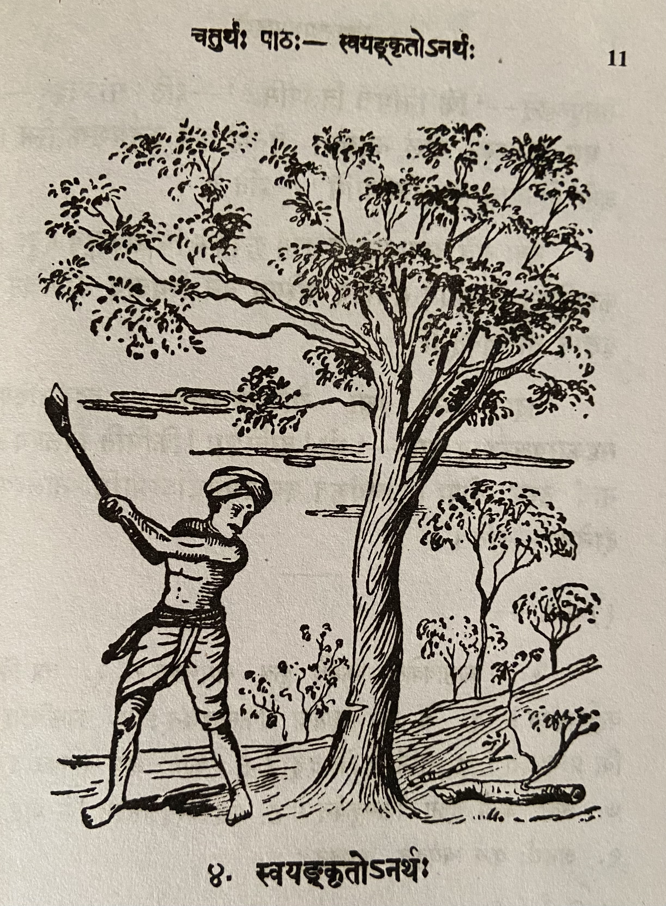
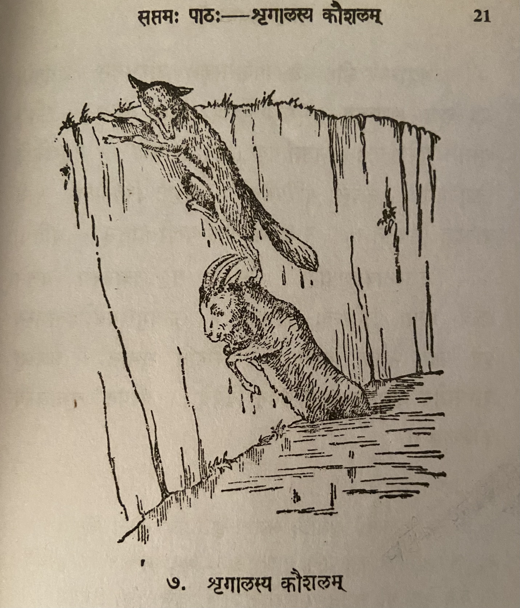
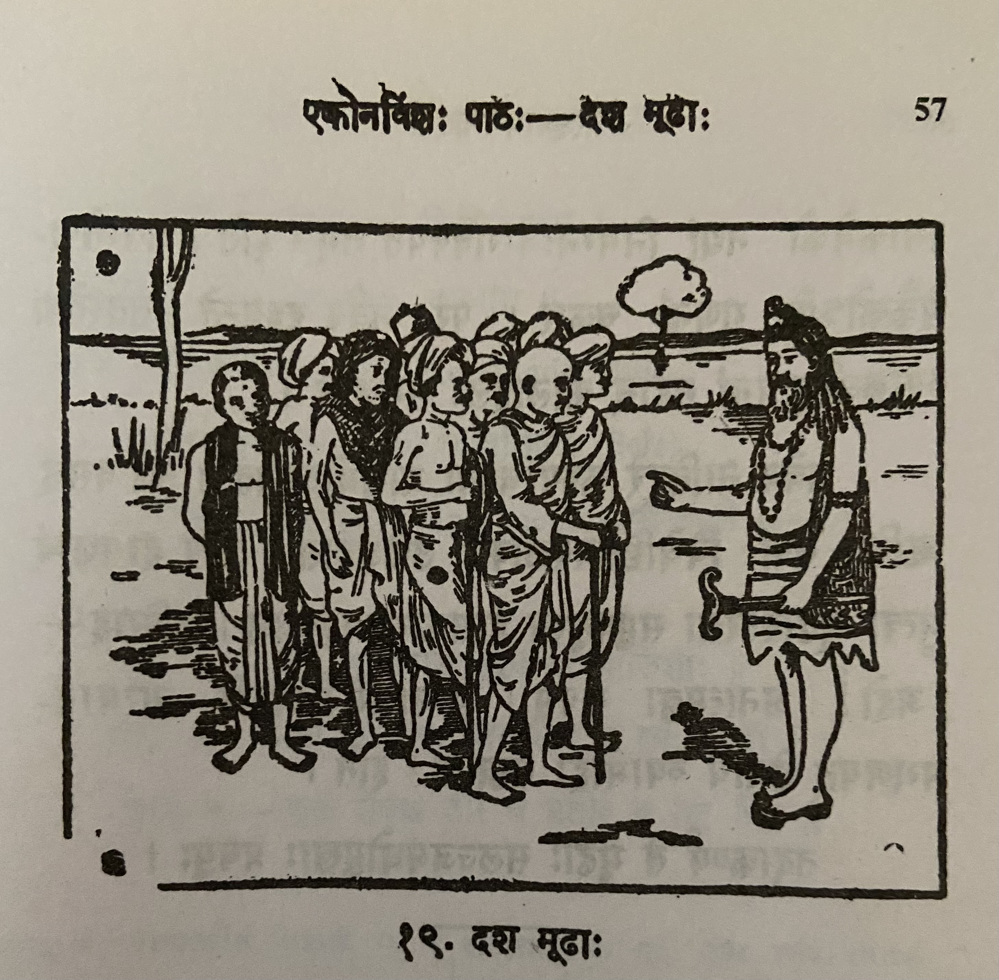
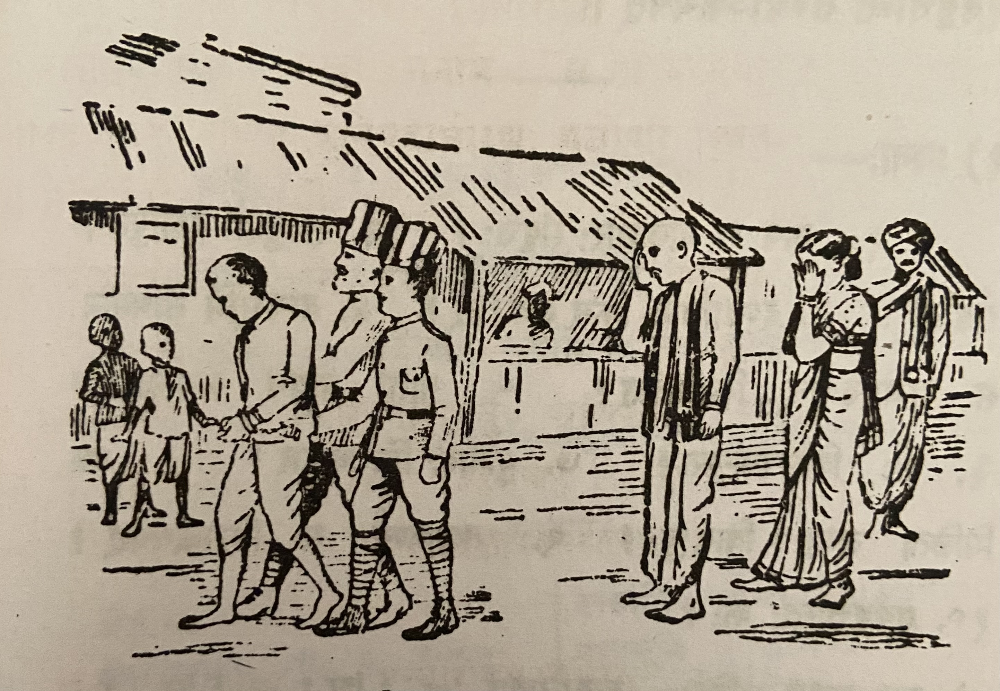
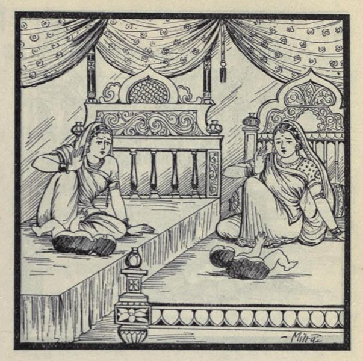
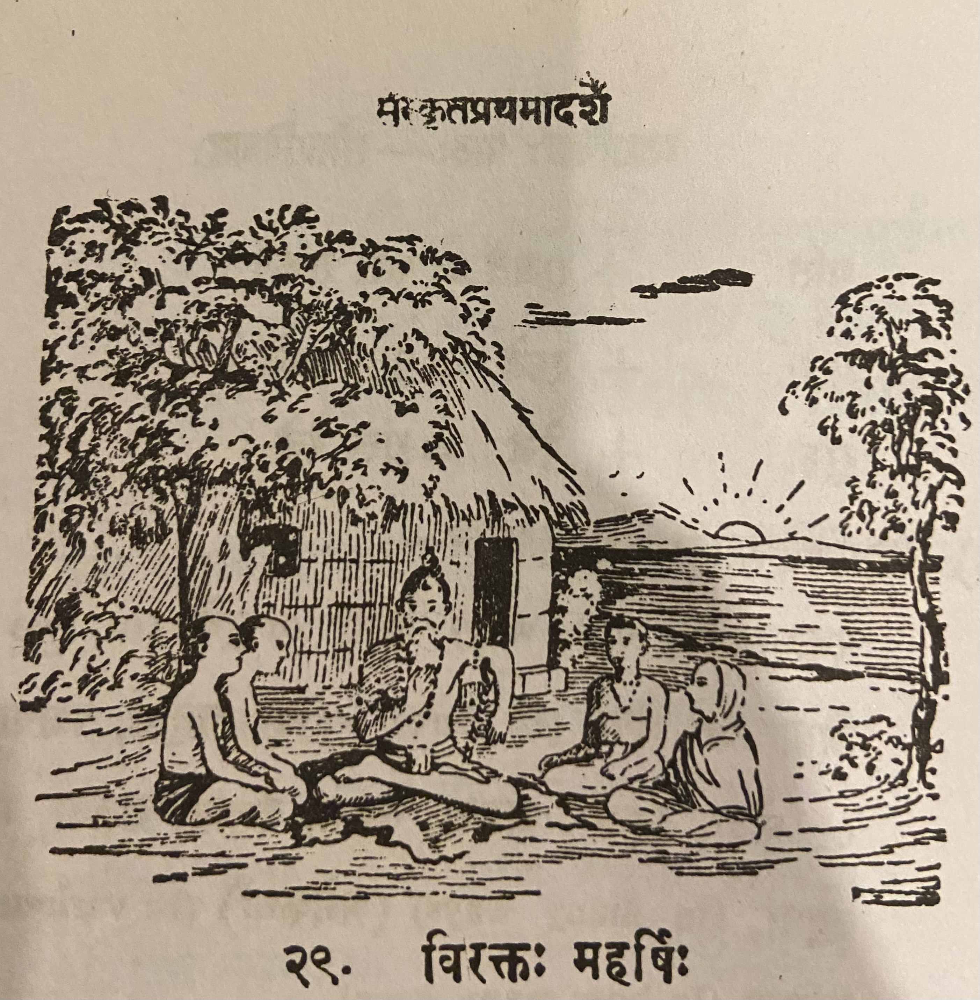
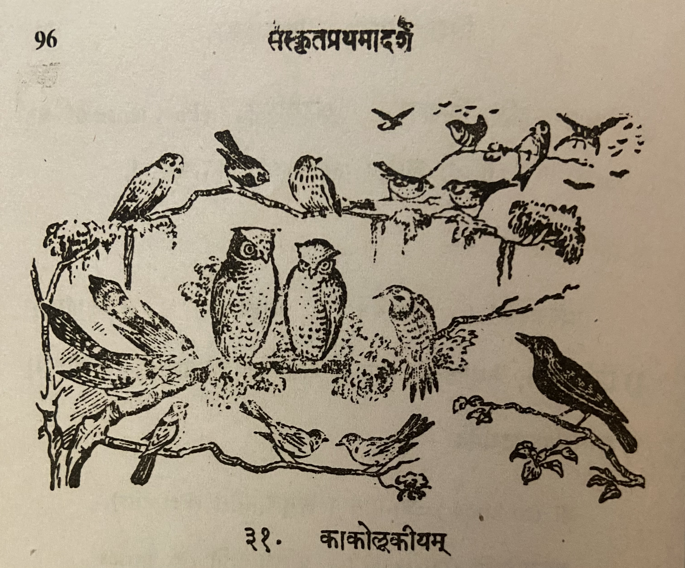

संस्कृतप्रथमादर्शः Reader - I
R. S. Vadhyar & Sons published a set of introductory Sanskrit books for young students. Unfortunately, the company no longer exists. I am not sure if new copies of these books are being published. The last few sets may be available book shops dealing with Sanskrit books including - R S Vadhyar & Sona (Kalpathi, Palakkad), Giri Traders (Chennai) or Vedanta Book House (Near Uma Talkies, Bangalore).
These are my notes from reading the book. It includes some of the short stories in the book along with translation done by me. I have tried my best to check for errors but I can't guarantee there are none.
Back to My Sanskrit Notes


Lesson 1: सूर्यः प्रत्यक्षदेवता

पश्य, पूर्वस्यां दिशि सूर्य उदयते । तस्य प्राकाशः संप्रति रक्तः कोमलश्च वर्तते। सूर्यः उदयमानोऽन्धकारं नाशयति, प्राणिनः प्रबोधयति, कुसुमानि च विकासयति। सन्तो बालाः सूर्रोदयात् पूर्वम् उषसि प्रबुध्य स्वीयान् पाठान् पठन्ति।।
यदा सूर्यः क्रमेणोद्गच्छन् नभसो मध्यमारोहति तदा "मध्यान्हः" । मध्याह्नात् पूर्वो भागः "पूर्वाह्णः", अपरो भागः "अपराह्णः"। मध्याह्ने सूर्यस्य प्राकाशः कठोरो भवति। अपराह्णे सूर्यः क्रमेण पश्चिमां दिशमवतरति, तस्याम् अस्तं च गच्छति। अस्तमये भूयोऽपि तस्य प्रकाशो रक्तः कोमलश्व भवति।
सूर्यस्य भासा सर्वा सृष्टिः प्रकाशते। सूर्येण तुल्यो नान्यस्तेजस्वी वर्तते। सूर्यः प्रत्यक्षदेवता।।
सूर्योपासनया जनाः अरोगाः भवन्ति। "आरोग्यं भास्करात् इच्छेत्" इति हि महतां वचनम्। सः देवैः असुरैश्च नमस्कृतः।।
तथा च श्रीमद्वाल्मीकिरामायणे आदित्यहृदयस्तोत्रम् -
रश्मिमन्तं समुद्यन्तं देवासुरनमस्कृतम्। पूजयस्व विवस्वन्तं भास्करं भुवनेश्वरम्।।
तस्मात् त्वमपि तं नमस्कुरु।।
Translation
Title: Sun the deity that is visible
Look, in the East the Sun rises. At this time (संप्रति) his light is red and pretty. The sun that has risen (or The risen sun) (सूर्यः उदयमानः अन्धकारं) destroys darkness, awakens animals (in this context: all animals including man, insect etc.), makes flower to flower. Good children wake up at dawn before the Sun rises and read their lessons.
When the rising Sun gradually climbs to the middle of the sky then it is Noon (मध्यानः). The part (of the day) before afternoon is forenoon (पूर्वाह्णः), the part after (अपरः) is afternoon (अपराह्णः). In the afternoon (मध्याह्ने) the light of the Sun is harsh (कठोरः). In the afternoon the Sun gradually climbs down in the western direction and goes there to set (अस्तं) also. When it sets (अस्तमये), in the ground (भूयोऽपि), his light is red and pretty.
भूयोऽपि (again also) - भूयः (again) अपि
भासा (३ vibhakti)
By the glow of the Sun, all the creation is lighted. Compared to the Sun nobody else is brighter. Sun is the visible deity.
उपासना (f) serving सूर्योपासनया - samasam
By serving/worshipping the Sun (सूर्योपासनया) people are without disease (i.e. healthy). "May the Sun give health" - This is the saying of great men. He is worshipped by Devas and Asuras.
Thus in the Valmiki Ramayana the Aditya Hrudaya Stotram:
The one who has the rays (रश्मिमन्तं)
The one who raises well (समुद्यन्तं = सम् उद्यनतम् )
Worshipped by the Devas and Asuras (देवासुरनमस्कृतम्).
You should worship (पूजयस्व) the Sun (विवस्वन्तं) the cause of light (भास्करं) and the ruler of the world (भुवनेश्वरम्).
Therefore (तस्मात्), you also (त्वमपि) worship (नमस्कुरु) him (तं).
Vocabulary
| Word | Meaning |
|---|---|
| संप्रति (ind.) | at this time, at present, now |
| रक्तः (adj) | red |
| प्राणिनः | animals (plural) |
| प्रबोधयति (verb) | awaken |
| प्रबुध्यते | wake up |
| क्रमेण (adverb) | gradually, in the order |
| क्रमेण (ind.) | in regular course, by degrees |
| नभस् | sky |
| उद्गच्छन् | rising, climbing up. Comes from उद्गच्छति |
| अवतरति | come down, sink, arrive |
| अस्त | set |
| Word | Meaning | Word | Meaning |
|---|---|---|---|
| कोमल | pretty |
प्राणिन् - animal (singular)
रक्त also has a neuter form where it means blood.
प्रबुध्य -
नभसः - In the sky
देवासुरनमस्कृतम - samastha padam
पूजयस्व - लोट् लकारः मध्यम् पुरुषः आत्मनेपदी (पूज्यते)
Clarifications from Sanskrit teacher
Actually सन्तः is the first case plural of सत् शब्दः। सत् - existence / good. Here used in the sense of good. सत् is good and असत् bad. The formation is like "सन् सन्तौ सन्तः। So सन्तो बालाः - सन्तः बालाः - good boys
उषसि is सप्तमी एकवचनम्। उषस् शब्दः। Here used in the sense of "dawn / before sun rise". Generally it is used in the sense of both "dawn and dusk. Here the literal meaning is "in/at dawn".
स्वीयान् पाठान् means "their own lessons". स्व / स्वीय always used in the sense of "self". Se these are adjectives they get form in all the 3 genders. स्वीयान् is masculine second case plural because it is used as an adjective for पाठान्
Lesson 2: उद्यमः कार्यसाधकः

वर्षासु शकटिकः कश्चित् स्वशकटे भाण्डान्यारोप्य तं नगरान्तरमनयत्। द्वौ वृषौ तं शकटम् अवहताम्। रथ्यायां पङ्के शकटस्य चक्रं रुद्धमभूत्। रथ्यायां पङ्के शकटस्य चक्रं रुद्धमभूत्। वृषभौ बलवत् प्रहरन्नपि स शकटं चलयितुं नाक्षमत॥
ततः स भगवन्तं नारायाणं प्रति चिक्रोश। तस्याक्रोशं श्रुत्वा दयालुर्भगवांस्तस्य पुरस्तादाविरभूत्। अभाषत च शाकटिकम् - 'भो मूढ! किमिति जोषमास्से? मम साहाय्यं वाञ्छसि चेत् उत्तिष्ठ! धुर्यौ चोदय, चक्रं स्कन्धेन प्रचालय। एवं कृतेऽहं ते सहाय्यं करिष्यामि' - इति। एवमुक्त्वा भगवान् अन्तर्धानमकरोत्॥
Story title: The hard worker (उद्यमः) is the accomplisher of any object/work (कार्यसाधकः)
During rains/rainy season (वर्षासु) some (कश्चित्) cart man (शकटिकः) having loaded (आरोप्य) wares (भाण्डानि) on his (स्व) cart (शकटे) and took (अनयत्) it (तम् -refers to the cart) to another town (नगरान्तरम्). Two (द्वौ) bulls (वृषौ) drove/transported (अवहताम) that (तम्) cart (शकटम्). The cart's (शकटस्य) wheel (चक्रं) became (अभूत्) stuck/obstructed (रूद्धम्) in the mud (पङ्के) on the road (रथ्यायां). Inspite of beating (प्रहरन् अपि) both bulls (वृषभौ) forcefully/severely (बलवत्) he (स) was unable (न अक्षमत) to move (चलयितुम्) the cart (शकटं).
Therefore (ततः) he (स) cried (चिक्रोश) to/towards (प्रति) lord/god (भगवनतम्) Narayana (नारायाणम्). Having heard (श्रुत्वा) his (तस्य) cry (अक्रोशं) the kind god (दयालुः भगवान्) became manifest (अविरभूत्)) in front of him (तस्य पुरस्तात्). And (च) said (अभाषत) to the cart man (शाकटिकम्) - "Hey idiot (भो मूढ)! Why (किम) you are silent (जोषमास्से) like this (इति)? If (चेत्) you want (वाञ्छसि) my (मम) help (साहाय्यं) stand up (उत्तिषठ)! Drive (चोदय) the two bulls (धुर्यौ), push (प्रचालय) the wheel (चक्रं) with your shoulder (स्कन्धेन). If you do like that (एवं कृते) I (अहम्) will help (सहाय्यं करिष्यामि) you (ते)" - thus (इति)। Saying like this (एवम् उक्त्वा) the lord (भगवान्) disappeared (अन्तर्धानमकरोत्).
Notes:
प्रहरन् + अपि - प्रहरन्नपि। Here न् became double because of सन्धि rule. प्रहरन् is a present continuous कृदन्त like गच्छन्।
नाक्षमत - न + अक्षमत। आत्मनेपदी verb, past tense. लट् is: क्षमते क्षमेते क्षमन्ते
आस्से - root is "आस् - to sit". आत्मनेपदी लट् मध्यमपुरुष एकवचनम्
जोषम् + आस्से। जोषम् - is from the root "जुष् - to remain quit / silent"
नगरान्तरम् Is it a compound word?
Sandhis:
भाण्डान्यारोप्य = भाण्डानि आरोप्य इ when followed by any vowel becomes य्
नगरान्तरमनयत् = नगरान्तरम् अनयत्
रुद्धमभूत् = रूध्दम् अभूत्
प्रहरन्नपि = प्रहरन् + अपि
तस्याक्रोशं = तस्य अक्रोशं
दयालुर्भगवांस्तस्य = दयालुः भगवान् तस्य
पुरस्तादाविरभूत् = तस्य पुरस्तात् अविरभूत्
Vocabulary
| Word | Meaning | Word | Meaning |
|---|---|---|---|
| भाणडानि (n) | wares, goods | अभाषत | spoke |
| नगरान्तर (n) | another town | जोर्ष (in) | are keeping idle |
| रथ्या (f) | road | आस्ते | are keeping idle |
| पङ्क (n) | mud, slush | साहाय्यम् (n) | assistance |
| रूद्ध (n) | obstructed | वाञ्छसि | wish, crave |
| बलवत् (in) | severely | धुर्य (m) | bullock, horse |
| अक्षमत | was able | चोदय (p) | drive |
| चुक्रोश (p) | cried | स्कन्ध (m) | shoulder |
| दयालु | kind | प्रचालय (p) | push |
| अन्तर्धान | disappear | अकरोत् | did (past tense of करोति) |
भाषते is the लट् लकारः form of the word meaning "to speak". अभाषत is the लङ् लकारः (past tense) of the word.
Lesson 3: गोदोहः

इह गोपालः गां पयो दोग्धि। इयं पीवरा गौः। अस्य गोपालस्य तनयः प्रत्यहं प्रभाते दोहात् परमिमां गां प्रचारभूमिं नयति सायं च प्रत्यानयति। यद्यपि, गावः पलालं धान्यमन्नं पिण्याकं च भक्षयन्ति तथापि बालतृणे तासां महती प्रीतिः॥
गोः समीपे तिष्टति वत्सः। स प्रथमं गोः पयः किञ्चित् पिबति। अनन्तरं गोपो दोहनं करोति। स गोः पार्श्वे भूमावुपविश्य वामहस्तेन पात्रं गृहीत्वा दक्षिणहस्तेन दुग्धं दोग्धि। धेनोः क्षीरं, मधुरं पथ्यं पुष्टिकरं च॥
तत्रैका नारी बालकेन सह तिष्टति। सा क्षीराय समागता। तं बालं पयसा पोषयति। तेन स बुद्धिमान् अरोगश्च वर्तते॥
क्षीरं तक्रेण मिश्रितं दधि भवति। दधि मथित्वा नवनीतं गृह्यते। तप्तं नवनीतं घृतं सम्पद्यते। क्षीरं दधि तक्रं नवनीतं घृतं च मनुष्याणामत्यन्तमुपयुक्तानि वस्तूनि। तानि भोजनाय उपयुज्यन्ते। तानि विना भोजनं न रसकरं भवति। अत एवाहुः - ’विना गोरसं को रसो भोजनानाम्।’ - इति॥
गां मातरमिव पूजयन्ति भारतीया जनाः। उक्तं च श्रीमन्महाभारते - ’मातरः सर्वभूतानां गावः सर्वसुखप्रदाः’ - इति॥
Translation
Here (इह) a cowherd (गोपालः) milks (दोग्धि) cow (गां) milk (पयः - note it becomes पयो due to sandhi). She (इयं) is a milk yeilding (पिवरा) cow (गौः). This (अस्य) cowherd's (गोपालस्य) son/child/offspring (तनयः) every day (प्रत्यहं) in the morning (प्रभाते) after (परम्) milking (दोहात् ) leads (नयति) this (इमाम्) cow (गां) to the grazing field (प्रचारभूमिं) and (च) in the evening (सायं) brings it back (प्रत्यानयति). Even though (यद्यपि) cows (गावः) eat (भक्षयन्ति) straw (पलालं), grain (धान्यम्), rice (अन्नम्), punnakku (पिण्याकं) still (तथापि) tender grass (बालतृणे) is their (तासां) great (महती) desire (प्रीतिः).
The calf (वत्सः) stands (तिष्टति ) near (समीपे) the cow (गोः). He (स) first (प्रथमं) drinks (पिबति) some (किञ्चित्) cow's (गोः) milk (पयः). Afterward (अनन्तरं) the cowherd (गोपो - without sandhi गोपः ) does (करोति) the milking (दोहनं). He (स) sitting (उपविश्य) on the ground (भूमौ) near (पार्श्वे) the cow (गोः) holding (गृहीत्वा) a vessel (पात्रं) with his left hand (वामहस्तेन) with his right hand (दक्षिणहस्तेन) is milking (दोग्धि) the milk (दुग्धं). Cow's (धेनोः) milk (क्षीरं) is sweet (मधुरं) agreeable (पथ्यं) and (च) nourishing (पुष्टिकरं).
There (तत्र) a (एका) woman (नारी) stands (तिष्टति) with a boy (बालकेन सह). She (सा) has come (समागता) for the milk (क्षीराय). She nourishes (पोषयति) that (तं) boy (बालं) using milk (पयसा). Due to that (तेन) he (स) is (वर्तते) intelligent (बुद्धिमान्) and (च) without disease (अरोगः)।
Milk (क्षीरं) mixed (मिश्रितं) with buttermilk (तक्रेण) becomes (भवति) curd (दधि). After churning (मथित्वा) milk (दधि) we get (गृह्यते) butter (नवनीतं). Heated (तप्तं) butter (नवनीतं) turns into (सम्पद्यते) ghee (घृतं). Milk (क्षीरं), curd (दधि), buttermilk (तक्रं), butter (नवनीतं), and (च) ghee (घृतं) are people's (मनुष्याणाम्) absolutely (अत्यन्तम्) useful (उपयुक्तानि) items (वस्तूनि). They (तानि) are used (उपयुज्यन्ते) for meals (भोजनाय). Without (विना) them (तानि) meal (भोजनं) is (भवति) not (न) tasty (रसकरं). So (अतः) only (एव) they say (आहुः) thus (इति) - "Without (विना) cow's milk (गोरसं) (i.e. dairy products) what (को) is in a meal's (भोजनानाम्) taste (रसो)?"
Bharatiya (भारतीयाः) people (जनाः) (i.e. Indian) worship (पूजयन्ति) the cow (गां) like mother (मातरमिव = मातरम् इव). And (च) in the sacred Mahabaratha (श्रीमन्महाभारते) it is said (उक्तं) thus (इति) - "Cows are the mothers of all living things and the givers of all happiness."
Sandhis in this lesson. Intended to be in the order of occurance.
पयः दोग्धि = पयो दोग्धि
परम् + इमाम् = परमिमां
प्रति + आनयति = प्रत्यानयति
धान्यम् + अन्नम् = धान्यमन्नं
गोपः दोहनं = गोपो दोहनं
स गोः पार्श्वे भूमावुपविश्य वामहस्तेन पात्रं गृहीत्वा दक्षिणहस्तेन दुग्धं दोग्धि। This sentence without sandhi is: सः गोः पार्श्वे भूमौ उवुपविश्य वामहस्तेन पात्रं गृहीत्वा दक्षिणहस्तेन दुग्धं दोग्धि।
भूमौ + उपविश् = भूमावुपविश्य - the general rule is that if औ is followed by any vowel that becomes आव्. So in this case भूमौ + उपविश् => भूम् + आव् + उपविश् => भूमाव् + उपविश् => भूमावुपविश्य
अत एवाहुः -> अतः एव आहुः
Notes
पयो without sandhi is पयः which comes from पयस् meaning milk (also means water, but in this context milk). Here is a link to पयस् शब्द रूप
पिण्याकं - In Tamizh this is புண்ணாக்கு. This is a cake made from the material remaining after oil seeds are pressed/ground for oil. Popularly used as cattle feed. Oil seed cake.
बालतृणे तासां महती प्रीतिः The literal translation of this phrase is - "in tender grass is their great desire". The expression sounds awkward in English but it is common usage in Sanskrit. This translates better in Tamizh - இளம்புல் மீது அவற்றுக்கு அதிக ஆசை.
Vocabulary
| Word | Meaning | Word | Meaning |
|---|---|---|---|
| दोह m. | milking | पुष्टिकर a. n. | nourishing |
| गोपालक m. | milkman | तक्र n. | buttermilk |
| दोग्धि P | milks | दधि n | curd |
| पलाल n | hay | मथित्वा in | having churned |
| बालतृण n | tender crass | नवनीत n | fresh butter |
| पार्श्व n | side | भारतीय m | Indian |
| दुग्ध n | milk | सर्वभूत in | all living beings |
| पथ्य a n | agreeing with (diet) | वत्स m | calf |
Clarifications from Sanskrit teacher
गृह्यते I guess it must be from the root ग्रह् - to take. This form is like passive usage (adding य् between the root and the पुरुषप्रत्यय). Meaning is: butter has been taken by churning the curd
रसकरम् - रसं करोति इति रसकरः - that makes (the food) tastier
आहुः is the present tense 3rd person plural form. आह आहतुः आहुः। Root is ब्रूञ् - व्यक्तायां वाचि। to say it clear / to speak it clear
Lesson 4: स्वयङ्कृतोऽनर्थः

जातु काष्टविक्रेता कश्चित् काष्ठार्थं वनमगच्छत्। तत्र स क्कचिदासीनः परितो विलोक्य विलपितुमारभत। तं विलपन्तं वीक्षय तस्मिन् वने स्थितास्तरवः करुणया तमपृच्छन् - ’किं निमित्तं विलपसि?’ - इति॥ सोऽवदत् - ’मम कुठारस्य नालं नास्ति। तेनाहं कर्म कर्तुमशक्तोस्मि। अतो भोज्यालाभात् विलपामि’ - इति॥
ततः सर्वे तरवः समेत्य तस्मै कृपयैकं चिञ्चालगुडं ददुः। काष्ठच्छित् तं कुठारे संयोज्य तस्मिन् वने स्थितान् कतिचित् वृक्षान् अच्छिनत्।
तदा अन्ये वृक्षा रोदितुमारभन्त। तदवलोक्य सहकारवृक्षस्तान् प्राह - ’भो! बालिशाः किमिति विलपथ? नायं तस्य दोषः। स्वयंकृत एवायमनर्थोऽस्माभिः नालस्य दानेन’ - इति।
Translation
जातु काष्टविक्रेता कश्चित् काष्ठार्थं वनम् अगच्छत्।
Once (जातु) a wood seller (काष्टविक्रेता) for some wood (कश्चित् काष्ठार्थं) went to the forest (वनमगच्छत्।)।
जातु - can also be understood as "once upon a time"
तत्र सः क्कचिद् आसीनः परितः विलोक्य विलपितुम् आरभत।
There (तत्र) he (सः) after sitting (आसीनः) somewhere (क्कचिद्) and after looking (विलोक्य) around (परितः) started (आरभत) crying (विलपितुम्),
तं विलपन्तं वीक्षय तस्मिन् वने स्थिताः तरवः करुणया तम् अपृच्छन् - ’किं निमित्तं विलपसि?’ - इति॥
Seeing (वीक्षय) him (तं) crying (विलपन्तं) the trees (तरवः) standing (स्थिताः) in that (तस्मिन्) forest (वने) asked (अपृच्छन्) him (तम्) with pity (करुणया) - ’What (किं) reason/cause (निमित्तं) are you crying (विलपसि) ?’ - thus (इति).
सः अवदत् - ’मम कुठारस्य नालं न अस्ति। तेन अहं कर्म कर्तुम् अशक्तः अस्मि। अतः भोज्य अलाभात् विलपामि’ - इति॥
He (सः) said (अवदत्) - 'My (मम) axe's (कुठारस्य) handle (नालं) is not (न) there (अस्ति) (i.e. My axe does not have a handle). Due to that (तेन) I (अहं) am (अस्मि) powerless (अशक्तः) to do (कर्तुम्) work (कर्म). So (अतः) due to not getting (अलाभात्) food (भोज्य) I cry (विलपामि)’ - thus (इति).
ततः सर्वे तरवः समेत्य तस्मै कृपय एकं चिञ्चालगुडं ददुः। काष्ठच्छित् तं कुठारे संयोज्य तस्मिन् वने स्थितान् कतिचित् वृक्षान् अच्छिनत्।
Therefore (ततः) all (सर्वे) the trees (तरवः) together (समेत्य) with grace (कृपय) gave (ददुः) a tamarind tree stick (चिञ्चालगुडं) for him (तस्मै). The woodcutter (काष्ठच्छित्) joined/fixed (संयोज्य) it ("it" is understood) in that (तं) axe (कुठारे) and cut down (अच्छिनत्।) a few (कतिचित्) trees (वृक्षान्) that stood (स्थितान्) in that (तस्मिन्) forest (वने).
तदा अन्ये वृक्षाः रोदितुम् आरभन्त। तद् अवलोक्य सहकारवृक्षः तान् प्राह - ’भो! बालिशाः किमिति विलपथ? न अयं तस्य दोषः। स्वयंकृत एव अयम् अनर्थः अस्माभिः नालस्य दानेन’ - इति।
Then (तदा) the other trees started to cry. Seeing that the mango tree said to them - "Hey fools why are you crying like this? This (अयं) is not (न) his (तस्य) fault (दोषः). This (अयम्) disaster (अनर्थः) is only (एव) self-created (स्वयंकृत) due to us giving (दानेन) the handle (नालस्य)." - thus (इति).
Vocabulary
| Word | Meaning | Word | Meaning |
|---|---|---|---|
| जातु in. | once | भोज्य n. | food |
| काष्टविक्रेतृ m. | a wood seller | चिञ्चालगुड m. | a stick of the tamarind tree |
| काष्टार्थम् in. | for wood | काष्ठच्छित् m. | wood cutter |
| आसीन a , m | sitting | अच्छिनत् P. | cut |
| परितः in | all around | सहकारवृक्षः m. | a mango tree |
| विलपितुम् in | to weep | पादप m. | tree |
| कुठार m. | an axe | बालिश m. | foolish |
| नाल n. | handle |
Lesson 5: श्रीरामपट्टाभिषेकः

Lesson 6: अश्वः

इह कश्चिदश्वस्तिष्ठति। गोरश्वस्य च को भेदः? अश्वो गवापेक्षया प्रांशुः। अश्वस्य पादाः दीर्घतराः। तस्य ग्रीवायां रोमराजिर्वर्तते। अश्वस्य श्रृङ्गे न स्तः। गोः शफो द्वेधा दलितः, अश्वस्य तु न। अतोऽश्वः शीघ्रतरं धावति॥
अयमश्वो रथे बध्यते। कैश्चित् द्वावश्वौ रथे बध्येते। राजानो धनिकाश्चोत्सवदिवसेषु चतुरः ततोऽधिकान् वा तुरगान् रथे योजयन्ति। समवर्णैः बहुभिरश्वैः युक्तो रथः सुरम्यो भवति॥
अश्वाः सुशिक्षिताः सञ्चारायोपयुज्यन्ते। वनमार्गेषु जनाः प्रायेणाश्वैरेव सञ्चारं कुर्वन्ति। अश्वस्य पृष्ठे पर्याणमास्तीर्य तस्मिन्नुपविशत्यश्वारोहः। मुखबद्धं खलीनमाकर्षन् सोऽश्वं नयति॥
अश्वाः सङ्ग्रामेषु राज्ञां साह्यमाचरन्ति। ते रणाङ्गणे महत् कौशलं प्रदर्शयन्ति। कदाचित् ते योधानां प्राणानपि रक्षन्ति। अतः प्राधान्येन राजानोऽश्वसैन्यं सर्वदैव संरक्षन्ति॥
Translation
Here (इह) some (कश्चित्) horse (अश्वः) stands (तिष्ठति). What (को) is the difference (भेदः) among the cow (गोः) and (च) the horse (अश्वस्य)? The horse (अश्वः) is strong (प्रांशुः) compared to (अपेक्षया) the cow (गव). The horse's (अश्वस्य) legs (पादाः) are longer (दीर्घतराः). There is (र्वर्तते) a line of hair (रोमराजि) on it's (तस्य)1 neck (ग्रीवायां). Horse (अश्वस्य) does not (न) have (स्तः) two horns (श्रृङ्गे). The cow's (गोः ) hoof (शफः) is split (दलितः) in two (द्वेधा), but (तु) horse's (अश्वस्य) do not (न). Therefore (अतः) the horse (अश्वः) runs (धावति) more quickly (शीघ्रतरं).
This (अयम्) horse (अश्वः) is tied (बध्यते) to a chariot (रथे). In some (कैश्चित्) chariot (रथे) two horses (द्वावश्वौ) are tied (बध्येते). Kings (राजानः) and (च) wealthy persons (धनिकाः), on festival days (उत्सवदिवसेषु), tie/connect (योजयन्ति) four (चतुरः) or (वा) more (अधिकान्) horses (तुरगान्) to a chariot (रथे). A chariot (रथः) joined (युक्तः) with many (बहुभिः) horses (अश्वैः) of the same color (समवर्णैः) is very beautiful (सुरम्यः).
Well trained (सुशिक्षिताः) horses (अश्वाः) are used (उयुज्यन्ते) for movement (सञ्चाराय). People (जनाः) move (सञ्चारं कुर्वन्ति) in the forest (वनमार्गेषु) only (एव) with horses (अश्वैः) for travelling (प्रायेण). Spreading (आस्तीर्य) the saddle (पर्याणम्) on the horse's (अश्वस्य) back (पृष्ठे), sitting (उपविशत्य) on it (तस्मिन्) is the horse rider (अश्वारोहः). Holding (आकर्षन्) bridle (मुखबद्धं खलीनम्) he (सः) leads (नयति) the horse (अश्वं).
In wars (सङ्ग्रामेषु) horses (अश्वाः) do (आचरन्ति) help (साह्यम्) to the kings (राज्ञां)2.They (ते) display (प्रदर्शयन्ति) great (महत्) cleverness (कौशलं) in the battle field (रणाङ्गणे). Sometimes (कदाचित्) they (ते) protect (रक्षन्ति) the warriors' (योधानां) lives (प्राणान्) also (अपि). Therefore (अतः) kings (राजानः) always (सर्वदैव) mainly (प्राधान्येन) keep/take care of (संरक्षन्ति) horse army (अश्वसैन्यम् - cavalry).
1Note: तस्य means his but in English animals are referred to as it.
2 This sentence does not have a direct translation to English. The rough "correct" translation is - In wars horses perform king's help. राज्ञां is the षष्ठी विभक्ति बहुचवन of राजन् - i.e. possessive plural.
Useful links:
Notes
Similar words
| Different Words | Meaning | ||
|---|---|---|---|
| तुरगः | तुरङ्गः | तुरङ्गमः | Horse |
| विहगः | विहङ्गः | विहङ्गमः | Bird |
| पतगः | पतङ्गः | पतङ्गमः | Bird |
| भुजगः | भुजङ्गः | भुजङ्गमः | Snake |
| साह्यम | साहाय्यम् | साहायहम् | help/aid |
Vocabulary
| Word | Meaning | Word | Meaning |
|---|---|---|---|
| ग्रीवा f | neck | पर्याण n | saddle |
| रोमराजि f | a line of hair | अश्वारोह m | a horse man |
| श्रृङ्ग n | a horn | खलीन n | bit of a bridle |
| शफ m | a hoof | सङ्ग्राम m. a. | battle |
| दलित a. m. | split | योधा m | warrior |
| समवर्ण a. m. | of uniform color | अश्वसैन्य n | cavalry |
Lesson 7: श्रृगालस्य कौशलम्

चित्रेऽस्मिन् एकः श्रृगालोऽजस्य पृष्ठे पदं निधाय तिष्ठति। कथय, किं निमित्तं, स तथा तिष्ठति?
अयं श्रृगालः पानीयां पातुं वापीं गतो जले ममज्ज। तेन बहिर्गन्तुं बहवो यत्नाः कृताः। किन्तु ते सर्वे मुधाऽभवन्॥
अत्रान्तरे कोऽप्यजः1 पिपासाकुलः परिभ्रमन् तत्रागतः। अपृच्छच्च श्रृगालम् - ’सखे अपि मधुरं जलम्’ - इति। श्रृगालः परेषां वञ्चने नितरां पटुः। अतः स आह - ’मधुरमित किमुच्यते! केवलं पीयूषमेव! प्रभूतं पिबतोऽपि न मे वाञ्छा निवर्तते॥ नशक्नोम्येतां2 वापीं हातुम्’ - इति॥
अजस्तावदृजुबुद्धिः3। अतः स वञ्चकस्य वचनं सत्यं मत्वा शनैरन्तः4 प्रविशति। ऊर्ध्वमुखमवरोहतस्तस्य5 पृष्ठे पदं निधाय वापीतः समारोहति श्रृगालः। अजस्तु6 वाप्यामेव7 मञ्जनोन्मञ्जने कुर्वन् विपेदे। पश्यत! श्रृगालस्य कौशलम्॥
उपदेशः - वञ्चकस्य वचनं न विश्वसनीयम्। तस्योपकारोऽपि8 न कर्तव्यः॥
1कः अपि अजः -> (visarga preceded by अ + अ) कोऽपि अजः -> (इ/ई + vowel) कोऽप्यजः
2न शक्नोमि एताम्
3अजः तावत् ऋजुबुद्धिः -> (ः + त = स्त) अजस्तावत् ऋजुबुद्धिः -> (त् + vowel = द्) अजस्तावतदृजुबुद्धिः
4Visarga (ः ) preceded by a vowel other than अ or आ and followed by a vowel or voiced consonant changes to र्. शनैः अन्तः -> शनैरन्तः
5ऊर्ध्वमुखमवरोहतः तस्य -> ऊर्ध्वमुखमवरोहतस्तस्य
6अजः तु -> अजस्तु
7वाप्याम् एव -> वाप्यामेव वापी is स्त्रीलिङ शब्द line नदी. वाप्याम् is द्वितीया विभक्ति एक वचन.
8 तस्य उपकारः अपि -> तस्योपकारोऽपि (अ + उ = ओ)
Translation
Title: The Jackal's Cleverness
In this (अस्मिन्) picture (चित्रे) one (एकः) jackal (श्रृगालः), having placed (निधाय) a foot (पदं) on a goat's (अजस्य) back (पृष्ठे ), is standing (तिष्ठति). Say what (किं) reason (निमित्तं) is he (सः) standing (तिष्ठति) such (तथा).
This (अयं) jackal (श्रृगालः) went (गतः) to the well (वापीं) to drink (पातुं) water (पानीयां) (and) was immersed in (ममज्ज) the water (जले) (i.e. fell in). A lot of (बहवः) effort (यत्नाः) was done (कृताः) by him (तेन) to get out (बहिर्गन्तुं). But (किन्तु) they (ते) all (सर्वे) were (अभवन्) in vain (मुधा).
In the meantime (अत्रान्तरे) some (कः अपि) wandering (परिभ्रमन्) goat (अजः)1 afflicted by thirst (पिपासाकुलः) came there (तत्रागतः). (He) asked (अपृच्छच्च) the jackal (श्रृगालम्) thus (इति) - "Friend (सखे) is (अपि) the water (जलम्) sweet (मधुरं)". The jackal (श्रृगालः) is very much (नितरां) skilled in (पटुः) deceiving (वञ्चने) others (परेषां). So he said - "What can I say (किमुच्यते) (about) how sweet (मधुरम्) it is (इति)? Only (केवलम्) (like) nectar (पियूषम्) really (एव)! Even (अपि) drinking (पिबतः) a lot (प्रभूतं) my (मम्) desire (वाञ्छा) does not cease (निवर्तते). (I) am not (न) able to (शक्नोमि) leave (हातुम्) this (एताम्) well (वापीं)."
Goat (अजः) is so very (तावत्) straightforward (ऋजुबुद्धिः). So (अतः) he (सः) thinking (मत्वा ) the cheater's (वञ्चकस्य) words (वचनं) are true (सत्यं) slowly (शनैः) entered (प्रविशति) inside (अन्तः) (the well). As he descended with face upwards (ऊर्ध्वमुखमवरोहतः) (the goat descended walking backwards) placing (निधाय) a leg (पदं) on his back (पृष्ठे) the jackal (श्रृगालः) climbed out (समारोहति) from the well (वापीतः). But (तु) the goat (अजः) is in trouble (विपेदे) bobbing up and down (मञ्जनोन्मञ्जने कुर्वन्) in the well (वाप्याम्) only (एव). See (पश्यत) the jackal's (श्रृगालस्य) cleverness (कौशलम्).
Teaching/moral (उपदेशः) - Cheater's (वञ्चकस्य) words (वचनं) are not (न) credible (विश्वसनीयम्). Do not (न) do (कर्तव्यः) any help (उपकारः) also (अपि) to them (तस्य).
Vocabulary
| Word | Meaning | Word | Meaning |
|---|---|---|---|
| पानीय n | water | ऋजुबुद्धि a. m. | straightforward |
| वापि f | well, small water body | वञ्चक m | deceitful, also jackal |
| मुधा in | in vain | शनैः in | slowly |
| अत्रान्तरे in | in the meanwhile | वापीतः in | from the well |
| पिपासाकुल a. m. | afflicted by thirst | मज्जनोन्मज्जने n | sinking and coming up |
| पटु a m | clever | नितराम् in | very much |
| वाञ्छा f | desire | कौशलम् n | cleverness |
| हातुम in | to leave | ममज्ज | sank/immersed |
Lesson 8: व्याघ्रचित्रकौ

व्याघ्रो वन्यः पशुः। सः हिंस्राणां मृगाणां मध्येऽतीव क्रूरः। इतरेभ्यः पशुभ्यो व्याघ्रः शीघ्रतरं धावति। व्याघ्रस्य देहे सर्वत्र कृष्णा विन्दवो रेखाश्च सन्ति। यदि तस्य स्वभावः शान्तोऽभविष्यत् तर्हि जनास्तं मृगान्तरापेक्षया अधिकतरम् आदरिष्यन्त॥
चित्रकस्तु व्याघ्रादपि सुन्दरः। चित्रकायः इत्यप्ययं व्यपदिश्यते। एकदा चित्रकः कश्चित् स्वस्य रूपेण गर्वितो भूत्वा मृगसभायामेवमब्रवीत् - "सिंहो न मम तुलां भजते। अतोऽहमेव मृगराज्येऽभिषेक्तव्यः" - इति॥
तेषां मध्यतः क्रोष्टोवाच - "आर्य! त्वमेकं गजं निहत्य मृगपरिवारं तर्पय; येन त्वां मृजराज्येऽभिषेक्ष्यामः" - इति। तद्वचनं श्रूत्वा लज्जितश्चित्रकः - "इदानीमेव आगमिष्यामि" - इत्युक्त्वा ततः प्रस्थितः तद्वनमेव परित्यज्य गतः॥
Translation
Title: Tiger and Cheetah
Tiger (व्याघ्रः) is a wild (वन्यः) animal (पशुः). Amidst (मध्ये) of the violent (हिंस्राणां) animals (मृगाणां) he (सः) is very (अतीव) cruel (क्रूरः). Tiger (व्याघ्रः) runs (धावति) faster (शीघ्रतरं) than other (इतरेभ्यः) animals (पशुभ्यः). Everywhere (सर्वत्र) on the tiger's (व्याघ्रस्य) body (देहे) black (कृष्णा) spots (विन्दवः) and (च) lines (रेखाः) are there (सन्ति). If (यदि) it's (तस्य) temperament (स्वभावः) had been (अभविष्यत्) calm (शान्तः) then (तर्हि) people (जनाः) would have respected (आदरिष्यन्त) it (तम्) more than other animals (मृगान्तरापेक्षया).
Cheetah (चित्रकः) is certainly (अस्तु) (more) beautiful (सुन्दरः) than Tiger (व्याघ्रादपि). Thus (इति) this (अयं) is also (अपि) called (व्यपदिश्यते) mult-coloured body (चित्रकायः). i.e. another name for cheetah is चित्रकायः.
Once (एकदा) some (कश्चित्) cheetah (चित्रकः), having become (भूत्वा) proud (गर्वितः) due to it's own (स्वस्य) form (रूपेण), said (अब्रवीत्) like this (एवम्) in the assembly of animals (मृगसभायाम्) - "Lion (सिंहः) is not (न) revered/adored (भजते) as my (मम) equal (तुला). Therefore (अतः) I (अहम्) alone (एव) should be anointed (अभिषेक्तव्यः) as king of animals (मृगराज्ये)" - thus (इति).
In the midst of them (तेषां मध्यतः) the jackal (क्रोष्टः) spoke (उवाच) - "Noble one (आर्य)! You (त्वम्) after having killed (निहत्य) one (एकम्) elephant (गजम्), please (तर्पय) the animal followers/family (मृगपरिवारं) in order that (येन) (we) anoint (अभिषेक्ष्यामः) you (त्वां) king of animals (मृगराजे)" - thus (इति). Listening (श्रुत्वा) to those (तत्) words (वचनम्) the embarrassed (लज्जितः) cheetah (चित्रकः) - "(I) will return (आगमिष्यामि) now (इदानीम्) only (एव)" - having said (उक्त्वा) thus (इति), after that (ततः) departed (प्रस्थितः) (and) having abandoned (परित्यज्य) that (तत्) forest (वनम्) itself (एव) went away (गतः).
Vocabulary
| Word | Meaning | Word | Meaning |
|---|---|---|---|
| वन्य a. m. | wild | मृगराज्य n. | kingdom of animals |
| पशु m. | a beast | क्रोष्टा m. | a jackal |
| हिंस्र a. m. | cruel | मृगपरिवार m. | animal follower |
| विन्दव m. | dots, spots | खग m. | a bird |
| चित्रक m. | a cheetah | तुला f. | equality |
| इतर | other |
विन्दु is a spot, a dot or mark. The form is like गुरु.
इतरेभ्यः - पञ्चमी विभक्ति
Lesson 9: अश्वशारङ्गयोः कथा

कश्चिदश्वः सारङ्गश्चैकस्मिन् केदारे नित्यं चरतः, महता च स्नेहेन कालं नयतः। एवं स्थिते तौ जातु कलहपरौ जातौ। तयोः सारङ्गः श्रृङ्गबलेनाश्वं केदारान्निरवासयत्।।
ततः सारङ्गस्य प्रतीकारं कर्तुमिच्छन्नश्वः कञ्चिन्मनुजं प्राप्य तस्य साहाय्यं ययाचे। स मनुजः परं प्रहृष्टः तस्य पृष्टे पर्याणमारोप्य मुखे खलीनं दत्तवा तमारोहत्। तस्य गतिं परीक्षमाणः कशया तं तीव्रमताडयत्। स्वकार्यार्थी तत् सर्वमसहताश्वः। तस्य मनुजस्य साहाय्येन सोऽश्वः सारङ्गमजयत्।।
कृतकृत्यः स तुरगो मनुजं निजगाद - "सिद्धं मे समीहितमधुना। पर्याणं खलीनं चापनीय मां गमनायानुमन्यस्व" - इति। तन्निशम्य मनुजस्तं बभाषे - "मया तवैतावत् प्रयोजनमिति जानाम्यहम्। किन्त्वितः परं त्वया मे प्रयोजनं भविष्यति। कथमहं त्वां विसृजेयम्?" - इति।।
ततो यावज्जीवं सोश्वः तस्य मनुजस्य वाजिशालायां बन्धने स्थितः परतन्त्रतया परां पीडामन्वभूत्। परतन्त्रस्य कुतः सुखम्?
उक्तं च सुभाषितरत्नाकरे - "सर्व परवशं दुःखं सर्वमात्मवशं सुखम्" - इति।।
Translation
Removing Sandhi and translating...
कश्वित् अश्वः सारङ्गः च एकस्मिन् केदारे नित्यं चरतः, महता च स्नेहेन कालं नयतः।
Some horse and deer are grazing/wandering in a field daily, and are living very harmoniously.
The literal meaning of महता च स्नेहेन कालं नयतः does not translate well. Literal meaning - spending time with a lot of love.
एवं स्थिते तौ जातु कलहपरौ जातौ। तयोः सारङ्गः श्रृङ्गबलेन अश्वं केदारात् निरवासयत्।।
In this state (एवं स्थिते) some day (जातु) they become quarrellers (कलहपरौ जातौ). Among the two (तयोः), the deer (सारङ्गः) with the strength of (his) horns (श्रृङ्गबलेन) banished (निरवासयत्) the horse (अश्वं) from the field (केदारात्).
ततः सारङ्गस्य प्रतीकारं कर्तुम् इच्छन् अश्वः कञ्चिन् मनुजं प्राप्य तस्य साहाय्यं ययाचे।
Then, desiring to retaliate against the deer, the horse found some man and begged his help.
सारङ्गस्य प्रतीकारं - literal translation is "deer's retaliation". Clarify with teacher.
सः मनुजः परं प्रहृष्टः तस्य पृष्टे पर्याणमारोप्य मुखे खलीनं दत्तवा तम् आरोहत्।
Exceedingly pleased (परं प्रहृष्टः) that (सः) man (मनुजः) having placed a saddle (पर्याणमारोप्य) on his (horse's) back (पृष्टे) a bridle (खलीनं) on his (horse's) face (मुखे) and climbed upon him (horse) (आरोहत्)
तस्य गतिं परीक्षमाणः कशया तं तीव्रम् अताडयत्।
To evaluate/check (परीक्षमाणः) his (तस्य i.e. horse's) speed (गतिं) (the man) severely (तीव्रम्) beat (अताडयत्) him (तं - i.e. horse).
स्वकार्यार्थी तत् सर्वम् असहत् अश्वः।
For his work (goal) (स्वकार्यार्थी) the horse (अश्वः) bore (असहत्) all that (तत् सर्वम).
तस्य मनुजस्य साहाय्येन सः अश्वः सारङ्गम् अजयत्।
With the man's help that horse defeated the deer.
कृतकृत्यः सः तुरगः मनुजं निजगाद - "सिद्धं मे समीहितम् अधुना। पर्याणं खलीनं च अपनीय मां गमनाय अनुमन्यस्व" - इति।
That horse (सः तुरगः) which accomplished his objective (कृतकृत्यः) said (निजगाद) to the Man (मनुजं) - "Now (अधुना) my (मे) wish/desire (समीहितम्) is accomplished (सिद्धं). Remove (अपनीय) the saddle (पर्याणं) and (च) bridle (खलीनं) , permit (अनुमन्यस्व) me (मां) to go (गमनाय)."
तं निशम्य मनुजः तं बभाषे - "मया तव एतावत् प्रयोजनं इति जानामि अहम्। किन्तु इतः परं त्वया मे प्रयोजनं भविष्यति। कथम् अहं त्वां विसृजेयम्?" - इति।
Having heard (निशम्य) him (तं i.e. the horse) the man (मनुजः) said (बभाषे) to him (तं i.e. the horse) - "I know (जानामि अहम) by me/because of me (मया) that much (एतावत्) use (benefit) was yours (तव्). But (किन्तु) from now (इतः परं) you will be (भविष्यति) my (मे) for my use (प्रयोजनं). How (कथम्) can I (अहं) release (विसृजेयम्) you (त्वां) ?"
ततः यावत् जीवं सः अष्वः तस्य मनुजस्य वाजिशालायां बन्धने स्थितः परतन्त्रतया परां पीडाम् अवभूत्। परतन्त्रस्य कुतः सुखम्?
After that, the rest of his life (यावत् जीवं) that horse (सः अष्वः) stayed (स्थितः) bound (बन्धने) in the Man's (मनुजस्य) stable (वाजिशालायां)
Check how to remove sandhi for परतन्त्रतया परां पीडामन्वभूत्। परतन्त्रस्य कुतः सुखम्? Also meaning.
उक्तं च सुभाषितरत्नाकरे - "सर्व परवशं दुःखं सर्वमात्मवशं सुखम्" - इति।।
A saying from the Subhashita Ratnakara (book) - Everything that is subject to another's will (परवशं) brings sadness, everything that is in one's own will (control) gives happiness.
उपदेशः (moral) -
एकस्य जयार्थमन्यमाश्रयन् जनः स्वयमनर्थे पतति।।
एकस्य जयार्थम् अन्यम् आश्रयन् जनः स्वयम् अनर्थे पतति।
To win over one (someone) people who take the help of others will themselves fall into difficulty/disadvantage.
Vocabulary
| Word | Meaning | Word | Meaning |
|---|---|---|---|
| सारङ्ग (m) | deer | कृतकृत्य (m) | he who has accomplished his object |
| केदार (m) | field | पर्याण (n) | saddle |
| कलहपर (m) | quarreller | समीहित (n) | wish, desire |
| निरवासयत् (P) | banished | एतावत् (n) | this much |
| प्रतीकार (m) | retaliation | वाजिशाला (f) | stable |
| ययाचे (U) | begged | बन्धन (n) | bondage |
| खलिन (n) | bridle |
जातु (in) - some day
अपनीयते - to be extracted
निशम्य - having heard
विसृजति - release
Lesson 10: कोकिलः
नायं सुरुपो विहगो नापि कायोऽस्य भासुरः ।
न चास्य पक्षयोः सन्ति चित्रवर्णा विशेषकाः ॥ १
केवलं काकसदृशो रुपे वर्णेऽप्ययं खगः ।
अथापि मधुरं गायन् अयं जगति पूज्यते ॥ २
रसालशिखरासीनो वसन्ते मधुरं स्वनन् ।
कस्य नो हृदयानन्दं जनयत्येष कोकिलः ॥ ३
काकः कृष्णः पिकः कृष्णः को भेदः पिककाकयोः ।
वसन्तकाले संप्राप्ते काकः काकः पिकः पिकः ॥ ४
किं कुलेन विशालेन किं रूपेण सुशोभिना ।
महत्त्वे कारणं तावत् वाग्रसो जनरञ्जकः॥ ५
Translation
This lesson is a poem about the Cuckoo bird. The couplets without सन्धि
न अयं सुरुपः विहगः न अपि कायः अस्य भासुरः ।
This (अयं) is not (न) a beautiful bird and (अपि) nor (न) its body shining (भासुरः).
न च अस्य पक्षयोः सन्ति चित्रवर्णा विशेषकाः ॥
And (च) attractive/special (विशेषकाः) colors (चित्रवर्णा) are not (न) present (सन्ति) on those (अस्य) two wings (पक्षयोः)
केवलं काकसदृशः रुपे वर्णे अपि अयं खगः ।
This (अयं) bird (खगः) also (अपि) only (केवलं) looks like a crow (काकसदृशः) in form (रुपे) and color (वर्णे).
अथापि मधुरं गायन् अयं जगति पूज्यते ॥
Moreover (अथापि) this sweet (मधुरं) singing (गायन्) is praised (पूज्यते) by all (जगति).
रसाल शिखरासीनः वसन्ते मधुरं स्वनन् ।
Sitting on top of (शिखरासीनः) the mango tree (रसाल) in Spring (वसन्ते) sweet (मधुरं) sounding (स्वनन्).
कस्य नो1 हृदयानन्दं जनयत्येष कोकिलः ॥
This (एष) cuckoo (कोकिलः), (in) for whose (कस्य) heart's joy (हृदयानन्दं) does it not (नो) cause/produce (जनयति)
Above is close to literal translation. Here is a what it means:
This cuckoo, in whom does it not produce joy.
1Both न & नो are negative words. Meaning "no / not". नो is also an अव्यय like न
काकः कृष्णः पिकः कृष्णः को भेदः पिककाकयोः ।
Crow (काकः) is black (कृष्णः), cuckoo (पिकः) is black (कृष्णः) what (is the) (कः) difference (भेदः) between the cuckoo and crow (पिककाकयोः)
वसन्तकाले संप्राप्ते काकः काकः पिकः पिकः ॥ ४
When spring (वसन्तकाले) happens/is attained (संप्राप्ते) crow (काकः) is crow (काकः) cuckoo (पिकः) is cuckoo (पिकः)
किं कुलेन विशालेन किं रूपेण सुशोभिना ।
महत्त्वे कारणं तावत् वाग्रसो जनरञ्जकः॥ ५
From teacher:
किम् (what) कुलेन विशालेन (by big / renowned family) रूपेण सुशोभिना (by looking handsome) महत्त्वे (for greatness) कारणम् (reason) तावत् (that is) वाग्रसो (वाक् + रसः - attractive speech) जनरञ्जकः (that always pleases / attracts the people).
To summarize it: whatever the royal family you were born in however good looking you are but the reason for greatness is that soft and nice words which always attracts the people
Vocabulary
| Word | Meaning | Word | Meaning |
|---|---|---|---|
| कोकिल m. पिक m. | cuckoo | विशाल a. n. | great, noble |
| भासुर a. m. | shining | महत्व n | greatness |
| विशेषक m. | line, dot | वाग्रस m | sweetness of speech |
| रसाक m | mango tree | जनरञ्जक a. m. | that which attracts people |
| शिखर n | top |
Lesson 11: कूपः

अयं रमणीयः कूपः। पानाय योग्यं जलं कूपे लभ्यते। सरसो जलं स्नानेेन मलिनं भवति। नद्याः सलिलं प्रकृत्यैव कलुषम्। समुद्रस्य वारि लवणम्। कूपस्य उदकम् अनाविलं पानयोग्यं च भवति॥
चित्रं पश्य। कूपस्य समन्तात् बहूनि सन्ति क्षेत्राणि। ततो1 नातिदूरे दृश्यन्ते कतिचन गृहाणि। तेषु गृहेषु वसन्त्यः स्त्रियः अस्मात्2 कूपाज्जलं3 नयन्ति॥
अस्य कूपस्य समीपे चतस्रः स्त्रियः सन्ति4। द्वे स्त्रियौ जलघटं शिरसि निधाय गच्छतः। अपरा कूपाज्जलमुद्धरति5। अन्या जलमुद्धर्तुं घटहस्ता तिष्ठति॥
अयमगाधः कूपः। अतोऽस्मात् कूपाज्जलस्योद्धरणाय दारुचक्रमुपयुज्यते6। पश्य, कूपस्य पार्श्वयोः द्वौ स्तम्भौ निखातौ। तयोरुपरि8 तिर्यक् दारुदण्डो योजितः। तस्य मध्ये दारुचक्रं पिनद्धम्। तस्य चक्रस्यान्तराले रज्जुः प्रवेशिता। तस्या रज्जोरग्रेण घटं कण्ठे बद्ध्वा तं कूपेऽवतारयन्ति, जलं चोद्धरन्ति9। दारुचक्रस्य स्थानेऽयश्चक्रमपि कैश्चिदुपयुज्यते10। अद्यत्वे भूयसा वैद्युतशक्तिमुपयुज्य यन्त्रेण जनाः कृष्याद्यर्थे11 कूपात् जलमुद्धरन्ति॥
Notes
| Sandhi removed / Explanation |
|---|
| 1ततः - there / from there. |
| 2अस्मात् - इदं शब्द पुंल्लिङ्ग एकवचनम् - meaning "from this" |
| 3कूपात् जलं -> कूपाज्जलं |
| 4The literal translation of this sentence is - "This well's near there are four women". The possessive case is used like this in Sanskrit. |
| 5कूपात् जलम् उद्धरति = कूपाज्जलमुद्धरति |
| 6अतः अस्मात् कूपात् जलस्य उद्धरणाय दारु चक्रम् उपयुज्यते। The literal translation - Therefore (अतः) from that (अस्मात्) well (कूपात्) water's (जलस्य) raising (उद्धरणाय) wooden wheel (दारुचक्रम्) is being used (उपयुज्यते). जलस्य उद्धाय (water's raising) is awkward when translated to English. But it is a valid expression in Sanskrit. कूपात् is in the 4th case which is used for "from well". |
| 7In English we say "Near the well". In Sanskrit the same is written as कूपस्य पार्श्वे which literally translates to "well's near" which means "by the side of the well" |
| 8तस्योः उपरि -> तस्योरुपरि |
| 9तस्याः रज्जोः अग्रेण घटं कण्ठे बद्ध्वा तं कूपे अवतारयन्ति, जलं च उद्धरन्ति |
| 10दारुचक्रस्य स्थाने अयश्चक्रम् अपि कैश्चिद् उपयुज्यते। कैश्चिद् - कैः (किम् शब्द पुंल्लिङ्ग तृतीया बहुवचनम्) + चिद् affix. Once the चिद् affix is added it will become अव्यय। कैश्चिद् - by some people |
| 11 कृषि + आदि + अर्थे -> कृष्याद्यर्थे for farming and other things |
Translation
This one (अयं) is a beautiful (रमणीयः) well (कूपः). Water (जलं) suitable (योग्यं) for drinking (पानाय) is available (लभ्यते) in the well (कूपे). Pond (सरसः) water (जलं) is (भवति) dirty/impure (मलिनं) because of bathing (स्नानेेन). River's (नद्याः) water (सलिलं) by nature (प्रकृत्या) itself (एव) is impure (कलुषम्). Ocean's (समुद्रस्य) water (वारि) is salt(y) (लवणम्). Well's (कूपस्य) water (उदकम्) is (भवति) pure (अनाविलं) and suitable for drinking (पानयोग्यं).
See (पश्य) the picture (चित्रं). Well's (कूपस्य) all around (समन्तात्) (i.e. all around the well) lots of (बहूनि) lands (क्षेत्राणि) are there (सन्ति). Not (न) too far (अतिदूरे) from there (ततः) some (कतिचन) houses (गृहाणि।) are visible (दृश्यन्ते). The women (स्त्रियः) living (वसन्त्यः) in those houses (गृहेषु) take (नयन्ति) water (जलं) from that well (कूपात्)3.
Near (समीपे ) this (अस्य) well (कूपस्य) there are (सन्ति) four (चतस्रः ) women (स्त्रियः)5. Two (द्वे) women (स्त्रियौ), having placed (निधाय) water pots (जलघटं) on their head (शिरसि), are going (गच्छतः). Another (अपरा) raises (उद्धरति) water (जलम्) from the well (कूपात्). Another (अन्या) stands (तिष्ठति) pot in hand (घटहस्ता) wanting to raise (उद्धर्तुम्) water (जलम्).
That (अयम्) is a deep (अगाधः) well (कूपः). Therefore (अतः) a wooden wheel (दारुचक्रम्) is being used (उपयुज्यते) for raising (उद्धरणाय) water (जलस्य) from that (अस्मात्) well (कूपात्). See (पश्य), by the side of (पार्श्वयोः) the well (कूपस्य) two (द्वौ) poles (स्तम्भौ) are planted (निखातौ). Over (उपरि) two of them (तयोः) a wooden stick/beam (दारुदण्डः) is attached/connected (योजितः) across (तिर्यक्). In the middle (मध्ये) of that (तस्य) a wooden wheel (दारुचक्रं) is fastened (पिनद्धम्). In the middle (अन्तराले) of that wheel (चक्रस्य) rope (रज्जुः) is sent in (प्रवेशिता). Tying (बद्ध्वा) that (तस्याः) rope's (रज्जोः) front (अग्रेण) to the neck (कण्ठे) of that pot (घटं) (people/women) send it (तं) down (अवतारयन्ति) in the well (कूपे) and (च) raise (उद्धरति) water (जलम्). In wooden wheel's (दारुचक्रस्य) place (स्थाने) iron wheel (अयश्चक्रम्) is also (अपि) used by (उपयुज्यते) some (कैश्चिद्). These days (अद्यत्वे) generally (भूयसा) using (उपयुज्य) electric power (वैद्युतशक्तिम्), by a machine (यन्त्रेण), people (जनाः) raise (उद्धरन्ति) water (जलम्) from the well (कूपात्) for farming and other things (कृष्याद्यर्थे).
Vocabulary
| Word | Meaning | Word | Meaning |
|---|---|---|---|
| प्रकृति f. | nature | दारुचक्र n. u. | wooden wheel |
| कलुष a. n. | dirty/impure | निखात a. m. | fixed, planted |
| लवण a. n. | saline; saltish | तिर्यक् in | across, sideways, obliquely, indirectly, horizontal |
| अनाविल a. n. | free from dirt; pure | पिनद्ध a.n. | fastened |
| अगाध a. m. | deep | रज्जु f. | rope |
| अन्तराले in | in midway, in the midst | अयश्चक्र n. | iron wheel |
| अग्रेण | before, in front | उद्धरति | raise up, pull out, withdraw, elevate |
| अवतारयति | take down, bring or fetch down, make or let one descend | अद्यत्वे | these days |
| भूयसा ind | exceedingly, in a high degree, mostly, generally, as a rule |
Lesson 12: वानरक्रीडा
अस्मिन् वृक्षे केचिद्वानराः क्रीडन्ति। ते वृक्षाद्वृक्षं विटपाद्विटपं च प्लवन्ते। वानराः प्रायेण नरैस्तुल्यरूपाः। अथापि नरा इव गृहाणि खगा इ्व नीडानि वा कर्तुं न ते शक्नुवन्ति। सर्वदैव ते वृक्षेषु निवसन्ति। कन्दैः फलैश्चोदरं पूरयन्ति। वानराः स्वभावात् एव चपलाः कोपनाश्च।
काचित् कथा श्रूयते यथा - एकदा वर्षासु कश्चिद्वानरः शैत्येन बाधितो दन्तवीणां वादयन् कस्यचन शमीतरोर्मूलमाससाद। तस्मिन् वृक्षे कुलायं कृत्वा चटकदम्पती निवसतः स्म। तयोः चटका शैत्येन कम्पमानं वानरमवलोक्य करुणया प्राह -
"नीडं कुर्मो वयं चापि चञ्चुमात्राहृतैस्तृणैः2। पाणिपादादिसंयुक्ता यूयं किमिति सीदथ?" इति।
तदाकर्ण्य वानरस्तामाह - "दुष्टे! अलं जल्पनेन; तूष्णीमास्स्व" इति। सा तु करूणाविष्टा पुनः पुनस्तदेव वचनमम्यधात्॥
तेन कुपितो मर्कटः - "सूचीमुखि! दुराचारे! किं प्रलपसि" इति वदन् शमीवृक्षमारुह्य तस्याः कुलायं शतधा भङ्क्त्वा क्षितावपातयत्॥

Translation
Title: Monkey Play
In that (अस्मिन्) tree (वृक्षे) some (केचिद्) monkeys (वानराः) are playing (क्रीडन्ति). They (ते) jump (प्लवन्ते) from tree (वृक्षात्) to tree (वृक्षं) and (च) from branch (विटपात्) to branch (विटपं). Monkeys (वानराः) usually (प्रायेण) appear similar to humans (नरैस्तुल्यरूपाः - नरैः तुल्य रूपाः). Moreover (अथापि) they (ते) are not (न) able (शक्नुवन्ति) to make (कर्तुं) houses (गृहाणि) like (इव) men (नराः) or (वा) nests (नीडानि) like (इ्व) birds (खगाः). They (ते) always (सर्वदा) live (निवसन्ति) in trees (वृक्षेषु) only (एव). They fill (पूरयन्ति) their stomach (उदरं) with tubers (कन्दैः) and (च) fruits (फलैः). By nature (स्वभावात्) itself (एव) monkeys (वानराः) are fickle (चपलाः) and (च) passionate/wrathful (कोपनाः).
Some (काचित्) story (कथा ) is heard (श्रूयते ) like this (यथा) - Once (एकदा) in rainy season (वर्षासु) some (कश्चिद्) monkey (वानरः), affected (बाधितः) due to the cold (शैत्येन), making teeth chattering (दन्तवीणां) noise (वादयन्), was seated (आससाद) at the base (मूलम्) of some (कस्यचन) Shami tree (शमीतरोः). In that (तस्मिन्) tree (वृक्षे), having made (कृत्वा) a nest (कुलायं), a sparrow couple (चटकदम्पती1) were living (निवसतः स्म). Among those two (तयोः) (sparrows) the female sparrow (चटका) having seen (अवलोक्य) the monkey (वानरम्) shivering (कम्पमांन) due to cold (शैत्येन) out of compassion (करूणया) said (प्राह) -
"We (वयं i.e. birds) also (चापि) make (कुर्मः) nest (नीडं) using beaks having collected/taken (चञ्चुमात्राहृतैः) grass (तृणैः). You all (यूयं i.e. monkeys) endowed with hands and legs (पाणिपादादिसंयुक्ताः), why like this (किमिति) (you) are seated सीदथ?" thus (इति).
Hearing (आकर्ण्य) that (तत्) the monkey (वानरः) said (आह) to them (ताम्) - "Evil ones (दुष्टे)! enough (अलं) with the prattling (जल्पनेन); be quiet (तूष्णीमास्स्व)" thus (इति). She was but (सा तु) being filled with compassion (करूणाविष्टा) repeatedly (पुनः पुनः) said (अम्यधात्) only (एव) those (तत्) words (वचनम्).
The monkey (मर्कटः) angered (कुपितः) due to that (तेन i.e. the bird) - "Needle face (सूचीमुखि)! Wicked one (दुराचारे)! What (किम्) are you talking (प्रलपसि)" saying (वदन्) thus (इति) having climbed the Shami tree (शमीवृक्षमारुह्य), having broken (भङ्क्त्वा) her (तस्याः) nest (कुलायं ) into hundred pieces (शतधा), caused it to fall (अपातयत्) in the ground (क्षितौ).
1दम्पती - दम्पति शब्द स्त्रीलिङ् प्रथमा वि. द्विवचन
2चञ्चुमात्राहृतैस्तृणैः - Here it is a compound word and correct split is "चञ्चुमात्राहृतैः + तृणैः।
Vocabulary
| Word | Meaning | Word | Meaning |
|---|---|---|---|
| खग m. | bird | चटक m. | sparrow |
| विटप m. | branch, bough | जल्पनम् n. | prattling |
| कन्दानि n. | bulbous roots | तूष्णीं in आस्व A. | keep quiet |
| चपल a. m. | fickle | ||
| कोपना a.m. | wrathful, passionate | सूचीमुखी f. | needle faced |
| वर्षाः f | rainy season (always plural) | कुलाय m. | nest of a bird |
| शैत्यम् n. | cold | शतधा in | into a hundred pieces |
| दन्तवीणा f. | chattering of the teeth | क्षिति f. | the earth, ground |
आससाद - Past tense of the root "सद् - to sit." आससाद - seated
Lesson 13: मयूरः

इदं किमपि रमणीयमुद्यानम्। अत्र द्वौ मयूरौ एका मयूरी तरवो लताः प्राकारश्च दृश्यन्ते। एको मयूरः पिच्छानि विस्तृत्य नृत्यति। अपरः पिच्छानि संवृत्य प्राकारस्योपरि तिष्ठति। तेन सह मयूरी अपि तत्र तिष्ठति। मयूर्याः पिच्छभारो नास्ति। नापि सा रम्या॥
मयूराणां बर्हेषु चित्रवर्णा अर्धचन्द्राकृतयो विशेषकाः सन्ति। ते जनानां चक्षूंषि रमयन्ति। एतैः मयूराणां बर्हैः व्यजनानि क्रियन्ते। केचित् तानि भूषणत्वेन धरन्ति॥
मयूरा वर्षासु मेघस्य शब्दं श्रुत्वा प्रहृष्टाः नृत्यन्ति। बर्हाणि विस्तृत्य नृत्यन् मयूरः फुल्लकुसुमो बालवृक्ष इव विभाति। तस्य केकारवस्तु1 काकस्वरवत् परुषः। अथापि तस्य रूपमतीव मनोहरम्। अतो मयूरान् गृहीत्वा धनिनो जनाः पुष्पोद्यानेषु संरक्षन्ति॥
Notes:
1केका + रव where केका means the sound of peacock and रव means sound. So together केकारवः - scream / cry of peacock.
Translation:
Title: Peacock
This (इदम्) is some (किमपि) delightful (रमणीयम्) garden (उद्यानम्). Here (अत्र) two (द्वौ) peacocks (मयूरौ) and one (एका) pea-hen (मयूरी), trees (तरवः), creepers (लताः), and a wall (प्राकारः) are seen (दृश्यन्ते). One (एकः) peacock (मयूरः) having expanded (विस्तृत्य) its tail (पिच्छानि) is dancing (नृत्यति). Another (अपरः) having closed (संवृत्य) its tail (पिच्छानि) is standing (तिष्ठति) on the wall's (प्राकारस्य) top (उपरि). With (सह) him (तेन) pea-hen (मयूरी) also (अपि) stands (तिष्ठति) there (तत्र). Pea-hen's (मयूर्याः) tail (पिच्छ) is not (नास्ति) heavy/thick (भारः). Also (अपि) she (सा) is not (न) delightful (रम्या).
In peacock's (मयूराणां) feathers (बर्हेषु) colorful (चित्रवर्णा) half-moon shaped (अर्धचन्द्राकृतयो) marks (विशेषकाः) are there (सन्ति). They (ते) please (रमयन्ति) the eyes (चक्षूंषि) of people (जनानां). With these (एतैः) feathers (बर्हैः) of the peacock (मयूराणां) fans (i.e. hand fans) (व्यजनानि) are made (क्रियन्ते). Some (केचित्) wear (धरन्ति) those (तानि) like ornaments (भूषणत्वेन).
During rain (वर्षासु) peacocks (मयूराः), having heard (श्रुत्वा) the sound (शब्दं) of the clouds (मेघस्य), exceedingly pleased (प्रहृष्टाः) (they) dance (नृत्यन्ति). Spreading (विस्तृत्य) its wings (बर्हाणि) and dancing (नृत्यन्) peacock (मयूरः) looks/shines (विभाति) like (इव) a young tree (बालवृक्ष) with bloomed flowers (फुल्लकुसुमो). His (तस्य) cries (केकारवः) though (तु) is gruff (परुषः) like a crow (काकस्वरवत्). But still (अथापि) his (तस्य) (i.e. it's) form (रूपम्) is extremely (अतीव) attractive (मनोहरम्). Therefore (अतः) rich (धनिनः) people (जनाः) having caught (गृहीत्वा) peacocks (मयूरान्) keep (संरक्षन्ति) (them) in flower gardens (पुष्पोद्यानेषु).
Vocabulary
| Word | Meaning | Word | Meaning |
|---|---|---|---|
| उद्यान n | park | विस्तृत्य in | having expanded |
| प्राकार m | wall | संवृत्य in | having closed |
| पिच्छम् n | tail of a peacock | व्यजन n | fan |
| बर्हम् N | tail of a peacock | फुल्ल a | blown, opened |
Lesson 14: मृगाणां पक्षिणां च समयः

कृषीबलः कश्चिदरण्यपरिसरभूमौ1 वसति स्म। जातु तस्य कुक्कुटः केदारे भक्ष्यमन्विष्यन्नास्त2। जम्बुकः कश्चन बुभुक्षितः परिभ्रमस्तमुद्देशमागतः3। कुक्कुटस्तमवेक्ष्य4 समीपस्थस्य तरोः शिखरमारोहत्।
वञ्चको भग्नाशस्तरोर्मूलमासाद्य5 कुक्कुटं प्रलोभयन्नाह - "भद्र! किमिति6 मां दृष्ट्वा वृक्षमारूढवानसि? अद्य खलु मृगैः पक्षिभिश्च सर्वैः सम्भूय समयः कृतः। तत्रैव निर्णीतम् ’ न कोऽपि कस्मा अपीतः परं द्रुह्येत्7। न कमपि पीडयेत्। किन्तु सर्वैः स्नेहेन वर्तितव्यम्। य एनं समयमुल्लङ्घिते स तीव्रं दण्डयेत’ - इति। तेनाहं त्वां स्नेहेनालिङ्गितुं समागतः। कथं त्वं मत्तो बिभेषि?" - इति। कुक्कुट आह - ’सखे! सत्यमुक्तं भवता। परं त्वं बुभुक्षित इव दृश्यसे। अतः कथं वृक्षादवरोहेयम्!’ - इति॥
एवं वदत्येव तस्मिन् नातिदूरे व्याघ्रः कश्चित समाययौ। कुक्कुटः शिरोधरामुन्नमय्य8 तमीक्षाञ्चक्रे9। गोमायुस्तमपृच्छत्10 - ’भद्र! किं सादरं वीक्षसे?’ कुक्कुट आह - ’सखे! नातिदूरे व्याघ्र आगच्छति’। क्रोष्टा भीतः - ’भद्र! यद्येवं नमस्ते। समयान्तरे त्वां भूयो द्रक्ष्यामि’ इत्युक्त्वा प्रस्थितः॥
कुक्कुटस्तं सस्मितमाह - हंहो मा गमः। अहं तरोरवरोहामि। त्वं मां स्नेहेनालिङ्गिष्यसि। ’सर्वैः स्नेहेन वर्तितव्यम’ इति समये स्थिते किमिति त्वं व्याघ्राद्भीतः!’ - इति। श्रृगालः 'न खलु घातुकाः समयमनुवर्तिष्यन्ते!' इति, वदन् द्रुतं पलायितः॥
Notes:
Sandhi of some complex words:
1कस्चिदरण्यपरिसरभूमौ = कश्चित् अरण्य परिसर् भूमौ
2भक्ष्यमन्विष्यन्नास्त = भक्ष्यम् अन्विष्यन् आस्त
भक्ष्यम् अन्विष्यन् = भक्ष्यमन्विष्यन् (म् + अ = म)
अन्विष्यन् आस्त = अन्विष्य + न् + न् + आस्त = अन्विष्यन्नास्त।
3परिभ्रमस्तमुद्देशमागतः = परिभ्रमः तम् उद्देशम् आगतः
4कुक्कुटस्तमवेक्ष्य = कुक्कुटः तम् अवेक्ष्य
5भग्नाशस्तरोर्मूलमासाद्य = भग्नासः तरोः मूलम् आसाद्य
6किमिति is the combination of किम् + इति but after joining together it becomes an अव्यय। It is commonly used in the sense of "why"
7Actually it is "न कोsपि कस्मै अपि इतः परं द्रुह्येत्। Here in कस्मै + अपि due to यन्तावान्तादेश सन्धि (सूत्र - एचोsयवायावः) rule it becomes कस्माय् (ऐ followed by vowel gets replaced by आय्). So initially it becomes कस्मायिदम्। Then due to another सूत्र (लोप शाकल्यस्य) य, व when preceeded by अ and when those two are at the end of the word (पदान्त) then optionally they become लोप and no सन्धि post लोप। So कस्मै + अपि - कस्मायपि - कस्मा अपि। is the end result
8शिरोधरामुन्नमय्य = शिरोधराम् उन्नमय्य
9तमीक्षाञ्चक्रे = तम् (he) ईक्षाम् (see) चक्रे (did)
10गोमायुस्तमपृच्छत् = गोमायुः तम् अपृच्छत्
Translation
Title: Agreement of animals and birds
A farmer (कृषीबलः) was living (वसति स्म) in some (कस्चिद्) land near a forest (अरण्यपरिसरभूमौ). Some day/once (जातु) his (तस्य) rooster/hen (कुक्कुटः) was (आस्त) seeking (अन्विष्यन्) food (भक्ष्यम्) in the paddy field (केदारे). Some (कश्चन) hungry (बुभुक्षितः) wandering (परिभ्रमः) jackal (जम्बुकः) came (आगतः) to that (तम्) spot (उद्देशम्). The rooster (कुक्कुट:) having seen (अवेक्ष्य) him (तम्) climbed (अरोहत्) nearby (समीपस्थस्य) tree's (तरोः) peak (शिखरम).
The cheat (वञ्चकः), one who destroys (भग्नाशः) reached (आसाद्य) the tree's (तरोः) base (मूलम्) enticed (प्रलोभयन्) the rooster (कुक्कुटं) spoke (आह) - "Dear (भद्र)! Why is it (किमिति) after seeing (दृष्ट्वा) me (मां) (you) are (असि) climbing the tree (वक्षम्)11. Is it not (खलु) today (अद्य) all (सर्वैः) animals (मृगैः) and (च) birds (पक्षिभिः) collectively (सम्भूय) made (कृतः) an agreement (समयः). There (तत्र) only (एव) it was decided (निर्णीतम्) 'Here (इतः) after (परम्) no one (न कोऽपि) should bear hatred (द्रुह्येत्) for any others (कस्मै). (Should) not (न) harm/injure/trouble (पीडयेत्) anyone (कमपि). But (किन्तु) all (सर्वैः) should behave (वर्तितव्यम्) lovingly (स्नेहेन). The one who (य:) violates (उल्लङ्घिते) this (एनम्) agreement (समयम्) he (स:) will be punished (दण्डयेत) severely (तीव्रं)' - thus (इति). So (तेन) I (अहम्) have come (समागतः) to lovingly (स्नेहेन) hug (अलिङ्गितुं) you (त्वां). How (कथं) you (त्वं) are scared (बिभेषि12) from me (मत्तः13).
The rooster (कुक्कुटः) said (आह) thus (इति) - "Friend (सखे)! You (भवता) say (उक्तम्) the truth(सत्यम् ). But (परं) you (त्वं) look (दृश्यसे) like (इव) you are hungry (बुभुक्षित). Therefore (अतः) how (कथं) can I descend (अवरोहेयम्) from the tree (वृक्षात्)!".
As (एवम्) (they were) speaking (वदति) only (एव) not (न) too (अति) far (दूरे) some (कश्चित) tiger (व्याघ्रः) arrived (समाययौ14). The rooster (कुक्कुटः) having raised (उन्नमय्य) it's neck (शिरोधराम्) तम् (he) चक्रे (did) ईक्षाम् (see). The jackal (गोमायुः) asked (अपृच्छत्) him (तम्) - "Friend (भद्र)! What (किम्) are you seeing (वीक्षसे) with attention (सादरं)?" The rooster (कुक्कुटः) said (आह) - "Friend (सखे)! Not (न) very (अति) far (दूरे) a tiger (व्याघ्र) comes (आगच्छति).". The scared (भीतः) jackal (क्रोष्टा15) - "Dear (भद्र)! however (यदि एव) goodbye (नमस्ते). I will see (द्रक्ष्यामि) you (त्वां) again (भूयः) again some time (समयान्तरे)". After saying (उक्त्वा) thus (इति) departed (प्रस्थितः).
The rooster (कुक्कुटः) smiling (सस्मितम्16) said (आह) to him (तम्) - Ho (हंहो) don't (मा) go (गम). I (अहम्) descend from (अवरोहामि) the tree (तरोः). You (त्वं) lovingly (स्नेहेन) hug me (माम्). "All (सर्वैः) should behave (स्नेहेन ) lovingly (वर्तितव्यम)" - in such a time (इति समये स्थिते) why (किमिति) you (त्वं) are scared (भीतः) of the tiger (व्याघ्रात्).
The jackal (श्रृगालः) - 'Cruel/killers (घातुकाः) never (न खलु) follow (अनुवर्तिष्यन्ते) rules (समयम्) !' saying (वदन्) thus (इति), quickly (द्रुतम्) escaped (पलायितः).
Notes:
11भद्र! किमिति मां दृष्ट्वा वृक्षमारूढवानसि? This sentence cannot be literally translated to English. It sounds much better in Tamizh. But here is an attempt at literal English translation - Dear (भद्र)! Why (किमिति) after seeing (दृष्ट्वा) me (मां) (you) are (असि) the one who climbed (आरूढवान्) the tree (वृक्षम्)". In Tamizh - ஏன் இப்படி என்னை பார்த்து மரம் ஏறியவன் ஆகிறாய்?
12बिभेषि - भी धातुः लट् मध्यमपुरुष एकवचनम्। The formation is:
| पुरुष | एकवचन | द्विवचन | बहुवचन |
|---|---|---|---|
| भी धातुः () | |||
| प्रथम पुरुष | बिभेति | बिभितः / बिभीतः | बिभ्यति |
| मध्यम पुरुष | बिभेषि | बिभिथः / बिभीतः | बिभिथ / बिभीथ |
| उत्तम पुरुष | बिभेमि | बिभिवः / बिभीवः | बिभिमः / बिभीमः |
13 मत्तः - मत् + तसिल्। मत् (fifth case of अस्मद् शब्द) मत् - it self means "from me" but the affix तसिल् - also will give fifth case meaning. Like "ग्रामतः / ग्रामात् both means "from the village"
14समाययौ is not द्विवचन। It is या धातुः लिट् प्रथमपुरुष एकवचनम्। Formation is: ययौ ययतुः ययुः
15क्रिष्टा - प्रथमा विभक्ति
16सस्मितम् - this is अव्यय not a विभक्ति form of word.
Vocabulary
| Word | Meaning | Word | Meaning |
|---|---|---|---|
| समय m | an agreement | प्रलोभयत् a. m. | seducing |
| परिसर m | vicinity, neighbourhood | द्रुह्येत् P. | should bear hatred |
| उद्देश m | a spot, place | शिरोधरा f | neck |
| मग्नाश am m. | disappointed | समयान्तर n | another time |
| द्रुतम् in | swiftly | मत्तः in | from me |
Lesson 16: शुकः
अत्रैकः शुकः पिञ्जरे बद्धस्तिष्ठति। पिञ्जरात् बहिः शाखायां स्थिता शुकी तस्य माता। सा स्वशाबकं बद्धमवलोक्याश्रु मुच्चन्ती1 तेन सह भाषते। सा तं किं वदतीति किं जानासि? सा तं वदति -
'वत्स! उक्तं खलु मया न त्वया कोटरान्निर्गन्तव्यम् कोऽपि त्वां गृह्णीयात् - इति। मम वाक्यमानादृत्य क्रीडितुं कुसुमलतां गतस्त्वम्। यथा मया कथितं तथैव संवृत्तम्' - इति।
शुकस्तामाह - ’अम्ब! मातुर्वाक्यम् अनुल्लङ्घनीयमिति जानाम्येव। अथापि क्रीडासक्तेन मया चापल्यात् तन्नालोचितम्’। सा प्राह - ’जात! एवं गते त्वयि कथं त्वदेकपुत्रया मया आयुस्शेषो नेयः?2’ सोऽपृच्छत् - ’किमेवं वदसि? किं मम मुक्तिरेव न स्यादस्मात् पञ्जरात्?’ सा कथयति - "दृढतराः पञ्जरस्य शलाका निबिडतराश्च। यथा त्वं न पलायेथास्थता गृहस्वामी जागरूको भवष्यति। कथं ते3 मुक्तिर्भविष्यति?"
अत्रान्तरे गृहस्वामी फलहस्तः समागतः। शुकी पलायीता। गृहस्वामी शुकमिमं फलेन रुचिरेणान्नेन पोषयिष्यति। भाषणं च तं शिक्षयिष्यति। शिक्ष्यमाणाः शुका मनुष्या इव व्यक्तां वाचमुदीरयन्ति। वेदमन्त्रानपि ते पठन्ति। अयमेव शुकानां बन्धने हेतुः।
शुकानां रुपमपि रमणीयम्। तेषां पक्षौ हरितौ, चञ्चवश्चरणाश्च लोहिताः4। केचन शुकाश्चित्रवर्णाः। तेऽतीव रमणीयाः॥
Notes:
1मुञ्चन्ती is the कृदन्त form of the root मुच् मोचने - to release / to leave. Here it means "she was shedding tears and spoke. It is like गतवान् - गतवन्ती. क्तवत् प्रत्ययान्तः
2सति सप्तमि usage. These type of sentences are not translatable exactly to English. The closest is: In this situation, where you, my only son, have gone how will I live the remainder of life.
3ते - दकारान्तः युष्मद् शब्दः षष्ठी विभक्तिः तव/ते युवयौः/वाम् युष्माकम्/वः
4तेषां पक्षौ हरितौ। as this is द्विवचन so we must use the word two while translating. Translation must be like "their two wings are green". चञ्चवश्चरणाः - चञ्चवः + चरणाः । चञ्चवः is plural. It is उकारान्त शब्द। Formation is: चञ्चुः चञ्चू चञ्चवः । चञ्चुः - beak
चरणाः - feet / legs. (Like राम शब्दः)
Translation
Title: Parrot (शुकः)
Here (अत्र) one (एकः) parrot (शुकः) stands (तिष्ठति) trapped (बद्धः) in a cage (पिञ्जरे)। The female parrot (शुकी) being (स्थिता) outside (बहिः) the cage (पिञ्जरात्), in the branch (शाखायां), is his (तस्य) mother (माता). She (सा), seeing (अवलोक्य) her (स्व) young (शाबकम्) caged (बद्धम्), releasing/shedding (मुच्चन्ती) tears (अँश्रु), is talking (भाषते) with him (तेन). Do you want to know (किं जानासि) what (किं) she (सा) is speaking (वदति इति) with him (तेन)? She (सा) says (वदति) to him (तम्) -
"Child (वत्स)! Was it not (खलु) told (उक्तं) by me (मया) thus (इति) - the hole (कोटरात्) should not be exited (निर्गन्तव्यम्) by you (त्वया), someone (कोऽपि) may catch you (गृह्णीयात्). Not listening (अनादृत्य) my (मम) words (वाक्यम्) you (त्वम्) went (गतः) for playing (क्रीडितुं) to the creeper with flowers (कुसुमलतां). Just as (यथा) as said (कथितं) by me (मया) like that (तथा) only (एव) ोचचुरेद (संवृत्तम्)" - thus (इति).
The parrot (शुकः) told (आह) her (ताम्) - "Mother (अम्ब)! I only/certainly (एव) know (जानामि) mother's word (मातुर्वाक्यम्) is not to be contravened (अनुल्लङ्घनीयम् इति). Moreover (अथापि) due to involvement in playing (क्रीडासक्तेन) due to my (मया) fickleness (चापल्यात्) I did not (न) think of (आलोचितम्) that (तत्)". She (सा) said (प्राह) - 'Child (जात)! Like this (एवम्) has happened (गते) in you (त्वयि), you (त्वम्) are the only son (एकपुत्रया) of mine (मया), how (कथं) to lead (नेयः) remainder (शेषः) of life (आयुः)2? He (सः) asked (अपृच्छत्) - '’Why (किम्) do you say (वदसि) like this (एवं) ? Why (किम्) my (मम) freedom (मुक्तिः) only (एव) from this (अस्मात्) cage (पञ्जरात्) cannot (न) happen (स्यात्)?' She (सा) said (प्राह) - "The cage's (पञ्जरस्य) bars (शलाकाः) (are) strong (दृढतराः) and (च) dense (निबिडतराः). The house owner (गृहस्वामी) will be (भवष्यति) careful/watchful (जागरूकः) so that (यथा) you (त्वं) do not (न) (पलायेथास्तथा). How (कथम्) your (ते) freedom (मुक्तिः) is possible (भविष्यति)"
In the meanwhile (अत्रान्तरे) the house owner (गृहस्वामी) fruit in hand (फलहस्तः) returned (समागतः). The female parrot (शुकी) escaped (पलायीता). The house owner (गृहस्वामी) will nourish (पोषयिष्यति) this (इमम्) parrot (शुकम्) with fruit (फलेन) and with tasty rice (रुचिरेणान्नेन). Also (च) (he) will teach (शिक्षयिष्यति) it (तम्) to speak (भाषणम्). Trained/taught (शिक्ष्यमाणाः) parrots (शुकाः) talk (उदीरयन्ति) clear (व्यक्तां) words (वाचम्) like (इव) people (मनुष्याः). They (ते) read (पठन्ति) even (अपि) Veda Mantras (वेदमन्त्रान्). That is (अयम्) only (एव) the reason (हेतुः) for caging/trapping (बन्धने) parrots (शुकानां).
Parrots's (शुकानां) form (रुपम्) is also (अपि) delightful (रमणीयम्). Their (तेषां) two wings (पक्षौ) are green (हरितौ), and (च) beaks (चञ्चवः) and (च) feet (चरणाः) reddish (लोहिताः).
Some (केचन) parrots (शुकाः) are colorful (चित्रवर्णाः). They (ते) are extremely (अतीव) delightful (रमणीयाः).
Vocabulary
| Word | Meaning | Word | Meaning |
|---|---|---|---|
| कोटर n. | hollow of a tree | जागरूक a. m. | wakeful, careful |
| मुक्ति f. | letting off, free | पक्ष m | wing |
| क्षलाका f. | bar of a cage | निबिड a | dense |
Lesson 17: उल्लूखलं मर्दलश्च

कस्मिश्चित् गृहे भजनोत्सवानन्तरं रात्रौ मर्दलः कश्चिदुलूखलस्य समीपे स्थापितः। मित्रमन्तिके दृष्टवा मर्दलः कुशलं पृच्छंस्तेन सह सम्भाषते।
मर्दलः - सखे! अपि कुशलं भवतः? अस्मिन् देशे का वार्ता?
उलूखलम् - मित्र? अस्मिन् देशे मां विहाय सर्वेऽपि कुशलिन एव। अहं परं मन्दभाग्यम्।
मर्दलः - कुतस्त्वं मन्दभाग्यम्? कस्ते दुःखहेतुः?
उलूखलम् - सखे! किं ब्रवीमि। तथापि श्रूयताम् - दुर्भगस्य मे शिरसि धान्यानि निधाय स्त्रियः पुरुषाश्च मां मुसलेन निर्दयं ताडयन्ति। केचिदयोदण्डेनापि मां प्रहरन्ति इत्थं प्रत्यहं महती पीडामनुभवामि। किमतः परं कष्टं स्यात्?
मर्दलः - भद्र! किमिदं मयि निवेद्यते। अहं त्वक्तोऽपि मनदभाग्यः। त्वं शिरसि परं ताड्यसे। मां तु ताडने समर्थाः जनाः पार्श्वद्वयेऽपि हस्ताभ्यां ताडयन्ति। विशेषतश्च विवाहोत्सवादौ सभामध्ये तीव्रं ताडयन्तो मामवजानन्ति। नैकोऽपि मामनुशोचति। किन्तु सर्वेऽपि सहर्षं शिरः कम्पयन्तो मम ताडनमभिनन्दन्ति। हन्त! कस्य वाऽन्यस्य स्यादीदृशी दुर्दशा।
लोके हि प्रायेण नान्यस्य दुःखमन्यो जानाति॥
Translation
Title: The mortar (उलूखलम्) and (च) the drum (मर्दलः) (i.e. percussion instrument)
In some (कस्मिश्चित्) house (गृहे) after (अनन्तरं) a devotional music (भजन) festival (उत्सव) in the night (रात्रौ) a drum (मर्दलः) was placed (स्थापितः) close to (समीपे) some (कश्चिद्) mortar (उलूखलस्य).
Drum (मर्दलः) - Oh friend (सखे)! Are (अपि1) you (भवतः) well/fine (कुशलं)?
Mortar (उलूखलम्) - Friend (मित्र)! In this (अस्मिन्) country (देशे) other than (विहाय) me (माम्) all (सर्वेऽपि) are happy (कुशलिन) only (एव). But (परं) I am (अहम्) unfortunate (मन्दभाग्यम्).
Drum (मर्दलः) - Why (कुतः) you (त्वम्) are unfortunate (मन्दभाग्यम्) ? What (कः) is the reason (हेतुः) for your (ते) misery (दुःख)?
Mortar (उलूखलम्) - Friend (सखे)! What (किम्) can I say (ब्रवीमि). But still (तथापि) listen (श्रूयताम्) - On my (मे) misfortunate (दुर्भस्य) head (शिरसि), women (स्त्रियः) and (च) men (पुरुषाशः) after placing (निधाय) grains (धान्यानि) mercilessly (निर्दयम्) beat/pound (ताडयन्ति) me (माम्) with a pestle (मुसलेन). Some (केचिद्) also (अपि) attack/beat (प्रहरन्ति) me (माम्) with iron sticks (अयोदण्डेन) - about (प्रति) this (इत्थं) (due to this) I (अहम्) experience (अनुभवामि) great (महती) suffering/pain (पीडाम्). What (किम्) further (अतः परम्) troubles (कष्टम्) maybe/may happen (स्यात्)?
Drum (मर्दलः) - Friend (भद्र)! What should I say about me / my situation (किमिदं मयि निवेद्यते2). I'm more unlucky than you (अहं त्वक्तोऽपि मनदभाग्यः3)
On your (त्वं) head (शिरसि) alone/merely (परं) you are beaten (ताड्यसे). But me (माम् तु) people (जनाः) capable of/expert in (समर्थाः) beating (ताडने) beat (ताडयन्ति) (my) two sides (पार्श्वद्वयेऽपि) with (two) hands (हस्ताभ्यां). And (च) especially (विशेषतः) in wedding celebrations (विवाहोत्सवादौ) in the middle of the gathering (सभामध्ये) (they) intensively (तीव्रम्) beat (ताडयन्तः4) me (माम्) treat me with contempt (अवजानन्ति). Not (न) a single one (एकोऽपि) is sorry for (अनुशोचति) me (माम्). But (किन्तु) everyone (सर्वेऽपि) happily (सहर्षं) shaking (कम्पयन्तो) (their) head (शिरः) applaud/apprecite (अभिनन्दति) my (मम) beating (ताडनम्). Alas (हन्त)! how (कस्य वा) other's (अन्यस्य) दुर्दशा (misfortune) स्यात् (could be) ईदृशी (like this)
Surely (हि) in the world (लोके) generally (प्रायेण) other people (अन्यः) do not (न) know (जानाति) other's (अन्यस्य) sorrow (दुःखम्).
1अपि usually means "also". But it is used in sentences that are questions similar to usage of वा. अपि कुशलम् is the same as कुशलं वा
2Word by word meaning won't work here. Over all meaning is: what should I say about me / my situation.
3 अहं त्वत्तोsपि (त्वत्तः - त्वत् + तः (तसिल् प्रत्यय). त्वत् - you. त्वत्तः - than you
4It is कृदन्त form. Like गच्छन् गच्छन्तौ गच्छन्तः It is continuous tense.
Vocabulary
| Word | Meaning | Word | Meaning |
|---|---|---|---|
| उलूखल n. | wooden mortar used for cleansing rice (removing husk) | मुसल m. n. | pestle |
| कुशल n. | welfare | अयोदण्ड m. | an iron-bar |
| दुर्भग a. m. | unfortunate | प्रवृत्ति f. | news |
| वृत्तान्त m | news |
The word भवति means "to be". Its root is भू. When a prefix (उपसर्ग) is added to भवति its meaning changes.
| Word | Meaning | Word | Meaning |
|---|---|---|---|
| अनुभवति | enjoys, experiences | परिभवति | disregards |
| पराभवति | overcomes | प्रभवति | Is able to, happen, prevail |
| सम्भवति | happens | अभिभवति | defeats |
Lesson 18: गजः

मृगजातौ गजः गरिष्ठः। तस्य पादाः स्तम्भा इव स्थूलाः। तस्य कर्णौ शूर्पाविव1 विशालौ। तस्य नेत्रे तावदत्यल्पे। अथापि सोल्पान्यपपि सोल्पान्यपि वस्तूनि द्रष्टुं शक्नोति। भूमौ स्थितां सूचिकामपि स पश्यति गृह्णाति च॥
गजस्य मुखेऽजगरवल्लम्बमानोऽवयवः2 शुण्डा। वयं हस्तेन यत कर्म कुर्मः तत् गजः शुण्डया करोति। अत एव गजस्य शुण्डा ’हस्तः’ इति ’करः’ इति च व्यपदिश्यते। तेन गजस्य ’हस्ती’ ’करी’ इति संज्ञे भवतः। शुण्डैव गजस्य नासिका। तयैव श्वसिति गजः। शुण्डाया अग्रे रन्ध्रमस्ति॥
गजः प्रथमं शुण्डया जलमादाय पश्चात् तन्मुखे निषिञ्चति। एवं द्वाभ्यामवयवाभ्यां जलं पिबन् गजः ’द्विपः’ इत्याख्यां भजते॥
गजानां दृढौ तीक्षणौ च द्वौ दन्तौ स्तः। तस्मात् ते ’दन्तिनः’, ’दन्तावलाः’ ’द्विरदाः’ इति कथ्यन्ते। शिल्पिनः करिणां दन्तैः रम्याणि महार्घाणि वस्तुनि निर्मान्ति। करेणूनां दन्तौ न स्तः॥
यद्यपि गजा वन्या जन्तवः, तथापि ते जनैः कौशलेन गृह्यन्ते, शिक्षयन्ते च। साधु शिक्ष्यमाणास्ते जनैः कर्तुमशक्यानि कर्माणि कुर्वन्ति। गुरुतराणि दारूणि कर्षन्ति। शिक्षिता अपि गजास्तदा तदा मदेनोन्माद्यन्ति। तदा तान् आधोरणाः निशितेनाङ्कुशेन नियन्त्रयन्ति॥
1शूर्प (m) - शूर्पौ + इव = शूर्प् + आव् + इव = शूर्पाविव This is यान्तवान्तादेशसन्धिः (एचोऽयवायावः)
2मुखेऽजगरवल्लम्बमानोऽवयवः = मुखे अजगरवत् लम्बमानः अवयवः
Translation
In the family of animals (मृगजातौ) the Elephant (गजः) is the biggest (गरिष्ठः). His (तस्य) legs (पादाः) are thick (स्थूलाः) like (इव) pillars (स्तम्भाः). His (तस्य) two ears (कर्णौ) are big (विशालौ) like winnowing basket (शूर्पा). His (तस्य) two eyes (नेत्रे) are so very small (तावद् अति अल्पे). So much the more (अथापि) (he) is able (शक्नोति) to see (द्रष्टुं) even (अपि) small (सोल्पानि) objects (वस्तूनि). He (सः) sees (पश्यति) and (च) takes (गृह्णाति) even (अपि) a needle (सूचिकाम्) lying (स्थितां) on the floor/ground (भूमौ).
In the elephant's (गजस्य) face (मुखे) is a python-like (अजगरवत्) limb (अवयवः) hanging down (लम्बमानः) trunk (शुण्डा). That which (यत्) work (कर्म) we (वयम्) do (कुर्मः) with hand (हस्तेन) that (तत्) the elephant (गजः) does with trunk (शुण्डया). Thus (अतः) only (एव) is referred to (व्यापदिश्यते) like (इति) hand (हस्त:) like (इति) hand (करः). Due to that the elephant is also designated/called hasti and kari3. The trunk (शुण्डा) is only (एव) the elephant's (गजस्य) nose (नासिका). With that only (तया एव) the elephant (गजः) breathes (श्वसिति). The trunk's (शुण्डाया) beginning (अग्रे) is (अ्स्ति) a hole (रन्ध्रम्).
The elephant (गजः) first (प्रथमम्) having taken (आदाय) water (जलम्) with the trunk (शुण्डया) then (पश्चात्) pours into (निषिञ्चति) its mouth (तन्मुखे). The elephant (गजः) drinking (पिबन्) like this (एवम्) with two (द्वाभ्याम्) limbs (अवयवाभ्याम्) is named (आख्याम्) as Dvipaha (द्विपः इति) (and) adore/revere (भजते).
Elephants (गजानां) have (स्तः) two (द्वौ) strong (दृढौ) and sharp (तीक्षणौ) teeth (दन्तौ)4. Therefore (तस्मात्) they (ते) are thus (इति) called (कथ्यन्ते) Dantinah (दन्तिनः), Dantavlah (दन्तावलाः), Dviradaha (द्विरदाः). Sculptors (शिल्पिनः) make (निर्मान्ति) pleasing (रम्याणि) expensive (महार्घाणि) objects (वस्तुनि) with elephant's (करिणां) teeth (दन्तैः). Female elephants (करेणूनां) do not (न) have (स्तः) teeth (दन्तौ)5.
Even though (यद्यपि) elephants (गजाः) are forest (वन्याः) animals (जन्तवः), even then (तथापि) they (ते) are skillfully (कौशलेन) obtained/taken (गृह्यन्ते) and (च) trained/instructed (शिक्षयन्ते) by people (जनैः). Well (साधु) trained/taught (शिक्ष्यमाणास्ते) (elephants) do (कुर्वन्ति) works/jobs (कर्माणि) that can be done (कर्तुमशक्यानि) by people (जनैः). (They) cut (कर्षन्ति) heavy (गुरु) trees (तराणि) and logs (दारूणि). Trained (शिक्षिताः) elephants (गजाः) also (अपि) now and then/sometimes (तदा तदा) become mad (उन्माद्यन्ति) with intoxication (मदेन). Then (तदा) elephant drivers (आधोरणाः) restrain (नियन्त्रयन्ति) them (तान्) with a sharpened (निशितेन) hook (अङ्कुशेन).
3The literal translation of - तेन गजस्य ’हस्ती’ ’करी’ इति संज्ञे भवतः - is as follows - Due to that (तेन) the elephant's (गजस्य) designations (संज्ञे) are (भवतः) hasti (हस्ति) kari (करी) thus (इति). The translation is as shown above.
4The literal translation of - गजानां दृढौ तीक्षणौ च द्वौ दन्तौ स्तः - Elephant's two strong and sharp teeth are there.
5The literal translation is - Female elephant's (करेणूनां) teeth (दन्तौ) was not (न) there (स्तः).
Vocabulary
लत्व सन्धिः - तकास्य दकारस्य वा ’ल’ कारः भवति
अजगरवत् + लम्बते = अजगरवल्लम्बते
भगवत् + लीला = भगवल्लीला
सुहृद् + लाभः = सुहृल्लाभः
उपसर्गयोगादर्थभेदः - दिश् दिशति (to give)। उपदिशति (instructs), व्यपदिशति (calls), आदिशति (commands), निर्दिशति (directs), उद्दिशति (points), सन्दिशति (sends message)
अतिशयनार्थकाः शब्दाः (Degrees of comparison):
| Positive | Comparative | Superlative |
|---|---|---|
| गुरुः | गरीयान् | गरिष्ठः |
| Word | Meaning | Word | Meaning |
|---|---|---|---|
| गरिष्ठ (a. m.) | biggest | नासिका f | nose |
| शूर्प m. a. | winnowing basket | रन्ध्र n. a | a hole |
| सूचिका f | needle | शिल्पिन् (m) | artisan |
| अजगर m | a huge serpent which swallows goats, python | करेणु f | a female elephant |
| दारु n | timber | निशित a. m. | sharpened |
| आधोरण m | rider or driver of an elephant | उन्माद्यति | be or become mad or furious |
| निशित | sharpened | नियन्त्रयति | restrain |
Lesson 19: दश मूढाः

मूढानां चेष्टितानि प्रायेण विनोदावहानि। यथा हि - एकदा दश मूढाः देशाटनाय प्रस्थिताः। किञ्चिद्दूरं गतानां तेषामुपस्थिता काचिदगाधा1 नदी। बाहुभ्यां तरन्तस्ते कथमपि नदीं तीर्त्वा पारं गताः॥
आसीत् तेषां मध्ये कश्चन वृद्धः। ’स किं सर्वे तीरमनुप्राप्ताः?’ इति जिज्ञासमानस्तान् एकैकशो गणयामास। परं नवैव परिगणितास्तेन। तता स आक्रोशत् - ’अहि! वयं दश प्रस्थिताः। इदानीं नवैव स्मः। नूनमस्माकमेको नद्यां निमग्नः। गवेषयत तम्’ इति। ततस्तेषामेकैकोऽपि गणनां चकार2। परं नवैव दृश्यन्ते। ततस्तेषां व्याकुलीभूतानां महान् कोलाहलः समजनि।
तत्रैव नातिदूरे कस्यचिदृषेः आश्रमोऽवर्तत। तत्र वसन् ॠषिः तेषां विचेष्टितमवलोक्य उच्चैर्जहास। तस्य हासशब्दं श्रुत्वा मूढास्तरसा समुपसृत्य हासकारणमपृच्छन्। ऋषिराह - ’अहो! अनात्मज्ञा यूयम्। युष्माकमेकैकोऽपि नात्मानमगणयत् तेनायं व्यामोहः सञ्जातः’ इति।
तदाकर्ण्य ते मूढाः सलज्जमधोमुखाः प्रययुः।
1कदाचित् अगाधा
2चकार - did. Past tense (लिट् लकार of करोति)
Translation
The antics (चेष्टितानि) of fools (मूढानां) is generally (प्रायेण) humorous (विनोदावहानि). For example (यथा हि) - once (एकदा) ten (दश) fools (मूढाः) started out (प्रस्थिताः) to travel the country (देशाटनाय). After going (गतानां) some distance (किञ्चिद्दूरं) they arrived (तेषामुपस्थिता) (near) some deep river (काचिदगाधा) river (नदी). They (ते) who swum (तरन्तः) with their hands (बाहुभ्यां) somehow (कथमपि) went (गताः) across (पारम्) the river (नदीं) bank (तीर्त्वा)
In their (तेषाम्) midst (मध्ये) there was (आसीत्) some (कश्चन) old man (वृद्धः). He (सः) - "Have (किम्) all (सर्वे) reached (अनुप्राप्ताः) the bank (तीरम्)" - to find that (जिज्ञासमानस्तान् इति) counted (गणयामास) each one (एकैकशः). But (परम्) only (एव) nine (नव) were enumerated (परिगणिताः) by him (तेन). Then (तता) he (सः) cried out (आक्रोशत्) thus (इति) - 'Oh! Ten (दश) of us (वयं) left (प्रस्थिताः). We are (स्मः) nine (नव) only (एव) now (इदानीम्). Indeed (नूनम्) one (एकः) of us (अस्माकम्) has drowned (निमग्नः) in the river (नद्यां). Search for (गवेष्यत्) him (तम्)'. After that (ततः) each of (एकैकः) their (तेषाम्) counted (गणनां चकार) also (अपि). But (परम्) only (एव) nine (नव) were seen (दृश्यन्ते). Then (ततः) among them all (तेषाम्) who were perplexed (व्याकुलीभूतानां) there was (समजनि) a big (महान्) noise (कोलाहलः).
There (तत्र) only (एव), not (न) too (अति) far (दूरे) some (कश्चित्) sage’s (ऋषेः) hermitage (अश्रमः) was there (अवर्तत्). The sage (ऋषिः) living (वसन्) there (तत्र) seeing (अवलोक्य) their (तेषाम्) action/struggle/behaviour (विचेष्टितम्) loudly (उच्चैः) laughed (जहास). Hearing (श्रुत्वा) the sound of his (तस्य) laughter (हासशब्दं3) the fools (मूढाः) speedily/quickly (तरसा) gathering (समुपसृत्य) (near him) asked (अपृच्छन्) the reason for laughter (हास्यकारणम्). The sage (ऋषिः) said (आह) this (इति) - 'Oh! You all (यूयम्) ignorant of the selves (अनात्मज्ञ). Not (न) even (अपि) one (एक एकः) among you (युष्माकम्) counted (अगणयत्) yourself (आत्मानम्) due to that (तेन) this (अयम्) mental confusion (व्यामोहः) has arisen (सञ्जातः)'.
Hearing (आकर्णय) that (तत्) those (ते) fools (मूढाः) facing downwards (अधोमुखाः) with shame (सलज्जम्) went away (प्रययुः)
3sound of laughter
Notes and Vocabulary
अश्त्व सन्धिः - (जशू = , ज, व, ग, ड, द वर्णाः वकारश्व भवति)
वाक् + रसः = वाग्रसः
सम्राट् + भरति = सम्राड्भरति।
किञ्चित् + दूरम् = किञ्चिद्दूरम्।
अप् + धारा = अब्धारा
उपसर्गयोगादर्थभेदः
स्था (to stand) तिष्ठति ; अनुतिष्ठति (performs); अधितिष्ठति (sets); उपतिष्ठति (उपतिष्ठते) (approaches); सन्तिष्ठते (ends)
| Word | Meaning | Word | Meaning |
|---|---|---|---|
| पारम् n | opposite bank of a river | अनात्मज्ञ a. m. | one who does not know himself |
| एकैकशः in | one by one | व्यामोह m | perplexity |
| एकैक m | everyone | स्रजू f | a garland |
| व्याकुलीभूत m | perplexed | सम्राजू m | a paramount sovereign |
| कोलाहल m | a loud and confused noise |
Lesson 20: कुक्कुटो रत्नं च

एकदा कुक्कुटः कश्चित् पादेनावकरं किरन्।
ददर्श भासुरं किञ्चिद्रत्नं श्रेष्ठिगृहाङ्गणे॥
कुक्कुटस्यानभिज्ञस्य रत्नलाभेन किं फलम्?
रत्नमूल्यं कियद्वेति किं स जानाति मन्दधीः॥
अतः स पक्षौ विस्तृत्य विधूय वदनं मुहुः।
तारं रटन् वक्रवत्रस्तद्रत्नं समगर्हयत्॥
रे रत्नं! शिरसा धृत्वा लोक्स्त्वामभिनन्दतु।
किन्तु धान्यकणेन त्वं नैव सादृश्यमर्हसि॥
इत्युक्तवा स च तद्रत्नं पादेनाक्षिप्य दूरतः॥
अन्यत्र गतवान् शीघ्रं धान्यान्वेषणतत्परः॥
Translation
Notes and Vocabulary
| Word | Meaning | Word | Meaning |
|---|---|---|---|
| किरन् a. m. | scattering | धान्यकण m | a grain of corn |
| अङ्गण n. a. | a courtyard | सादृश्य n. | equality |
| कियत् n, n. | how much | आक्षिप्य in | throwing off |
| विधूय in. | having shaken |
Lesson 21: मातापुत्रयोः संभाषणम्

कस्मिश्चित् दिने सुगुणो नाम बालकः मात्रा सह गृहस्य बहिर्वेदिकायामास्त1। तदा कश्चन याचकः समेत्य ’मातः! भिक्षां देहि’ इत्ययाचत’॥
तदा पुत्रो मातरं पृच्छति -
पुत्रः - अम्ब! कोऽयम्?
माता - वत्स! अयं याचकः।
पुत्रः - याचकः किं करोति?
माता - स भिक्षां याचते। याचनेन यल्लभ्यते2 तेनोदरं पूरयति।
पुत्रः - किमित्ययं याचनेनोदरं पूरयति? कस्मान्न3 कर्म करोति?
माता - वत्स! अयमलसः! आलस्येन बाल्ये पाठालयमगत्वा विद्याम् अनभ्यस्य कालमनयत्। न किञ्चिदपि कर्म परिशीलितं तेन।
पुत्र - विद्यया कथं जीविका निर्वर्त्यते?
माता - विद्यया किं न सिध्यति! विद्यया बुद्धिर्विकसति। बुद्धिमन्तो जनाः स्वाभिष्टं कर्म कर्तुं प्रभवन्ति। तेन सुखेन जीविकां निर्वर्तयन्ति। विद्वान् सर्वत्र पूज्यते।
पुत्रः - अस्तु, अयं याचते खलु। किमनेन प्रतिदिनं भिक्षा लभ्येत?
माता - कथं लभ्बेत? कदाचिल्लभ्यते, कदाचिन्न लभ्यते। यदा जनाः भिक्षां न वितरन्ति तदाऽयमञ्जलिं बद्ध्वा पादयोः पतित्वा तान् याचति। यदि तदाऽपि न किञ्चिल्लभते तर्हि बुभुक्षया पिडितः कुत्रापि गत्वा चोरयति।
पुत्रः - किं न चोरं राजपुरुषा बध्नन्ति?
माता - यदि राजपुरुषाः पश्यन्ति तर्हि तं बध्नन्ति, ताडयन्ति, कारां च प्रवेशयन्ति।
पुत्रः - अम्ब! अहमपि यदि न बाल्ये विद्यामभ्यस्ये तर्हि मयाऽपि याचितव्यं स्यात। किं न?
माता - जात! कः सन्देहः? याचितव्यमेव भवेत्।
पुत्रः - एवं चेत अहं श्वः प्रभृति पाठालयं गमिष्यामि, विद्यां चाभ्यसिष्यामि॥
माता - वत्स!। आलस्यं विहाय विद्याभ्यासे यतस्व। उद्योगी भव। विद्यावन्तमुद्योगिनं च नरं लक्ष्मीः स्वयमेवोपैष्यति। तथा च सुभाषितरत्नाकरः - "अद्योगिनं पुरुषसिंहमुपैति लक्ष्मीः" इति॥
Notes:
1बहिर्वेदिकायामास्त = बहिः + वेदिकायाम् + आस्त । वेदिका - thinnai in Tamizh. वेदिकायाम् - सप्तमीविभक्ति
2यल्लभ्यते
3कस्मान्न = कस्मात् न
अनेन - in this way/manner
याचितव्यम् - beggary, to be asked for
Translation
Title: Conversation of Mother and Son
On some (कस्मिश्चित्) day (दिने) a boy (बालकः) named (नाम) Sugunaha (सुगुणः) with (सह) (his) mother (मात्रा) was at (आस्त) the platform (वेदिकायाम् - thinnai in tamizh) outside (बहिः) of the house (गृहस्य). Then (तदा) some (कश्चन) beggar (याचकः) joined them (समेत्य) thus (इति) asked (अयाचत) ’Mother (मातः)! Give me (देहि) alms (भिक्षां)’.
Then (तदा) the son (पुत्रः) asks (पृच्छति) the mother (मातरं) -
Son (पुत्रः) - Mother (अम्ब)! who (कः) is this (अयम्) ?
Mother (माता) - Son (वत्स)! This (अयं) is a begger (याचकः)
Son (पुत्रः) - What (किम्) (does) a beggar (याचकः) do (करोति)?
Mother (माता) - He (सः) asks (याचते) (for) alms (भिक्षाम्). What (किम्) he gets (लभते) from begging (याचनेन) with that (तेन) he fills (पूरयति) his stomach (ओदरम्)
Son (पुत्रः) - Why (किम्) he fills (पूरयति) the stomach (ओदरम्) by begging (याचनेन) like this (इति अयम्). Why (कस्मात) doesn't (न) he do (करोति) work (कर्म) ?
Mother (माता) - Son (वत्स)! This (अयम्) is a lazy person (अलसः). Due to laziness (आलस्येन) in his youth (बाल्ये) he led (अनयत्) his time (कालम्) not going (अगत्वा) to the school (पाठालयम्) not learning (अनभ्यस्य) knowledge (विद्या). No (न) even (अपि) little (किञ्चिद्) work (कर्म) was studied (परिशीलितं) by him (तेन).
Son (पुत्रः) - How can (कथम्) employment (जीविका) be accomplished (निर्वर्त्यते) by knowledge (विद्यया) ?
Mother (माता) - What (किम्) is not (न) accomplished (सिध्यति) by knowledge (विद्यया)! Due to knowledge (विद्यया) the intelligence (बुद्धि) increases (विकसति). Intelligent (बिद्धिमन्तः) people (जनाः) are able to (प्रभवन्ति) do (कर्तुम्) work (कर्म) of their choice (स्वाभिष्टं). By that (तेन) (i.e. knowledge) employment (जीविकां) is accomplished (निर्वर्तयन्ति) by ease/ comfortably (सुखेन). A knowledgeable person (विद्वान्) is respected (पूज्यते) everywhere (सर्वत्र).
Son (पुत्रः) - All right (अस्तु), he (अयम्) begs (याचते) isn't it (खलु). What (किम्) alms (भिक्षा) like this (अनेन) अिलल be gotten (लभ्येत) everyday (प्रतिदिनं)?
Mother (माता) - How (कथम्) will he get (लभ्येत)? Sometimes (कदाचित्) he will get (लभ्येत) sometimes (कदाचित्) not (न) get (लभ्येत). When (यदा) people (जनाः) don't (न) give (वितरन्ति) then (तदा) he (अयम्) folding (बद्ध्वा) his hands (अञ्जलिम्) falling (पतित्वा) at their feet (पादयोः) begs (याचति) them (तान्). If (यदि) then (तदा) also (अपि) nothing (किन्चित् न) is gotten (लभते) then (तर्हि), tormented (पिडितः) due to hunger (बुभुक्षया), going (गत्वा) some where (कुत्रापि) he steals (चोरयति).
Son (पुत्रः) - Won't (किम् न) the king's guards (राजपुरुषाः) catch (बध्नन्ति) the thief (चोरं)
Mother (माता) - If (यदि) the guards (राजपुरुषाः) see (पश्यन्ति) then (तर्हि) they will capture (बध्नन्ति) him (तम्) beat him (ताडयन्ति) and (च) put him (प्रवेशयन्ति) in jail (काराम्)
Son (पुत्रः) - mother (अम्ब)! If (यदि) I also (अहमपि) don't (न) study (विद्यामभ्यस्ये) in my youth (बाल्ये) then (तर्हि) begging (याचितव्यं) by me (मया) also (अपि) will happen (स्यात्). Why (किम्) not (न)?
Mother (माता) - Child (वत्स) why (कः) doubt (सन्देहः)? Begging (याचितव्यं) only (एव) will happen (भवेत्).
Son (पुत्रः) - In that case (एवं चेत) starting (प्रभृति) tomorrow (श्वः) I (अहम्) will go (गमिष्यामि) to school (पाठालयम्) and (च) will study (विद्याम् अभ्यसिष्यामि)
Mother (माता) - Child (वत्स)! Leave (विहाय) laziness (आलस्यम्) try to (यतस्व) study (विद्याभ्यासे). Be (भव) industrious (उद्योगी). Fortune (लक्ष्मीः) herself (स्वयम् एव) approaches/comes to (उपैष्यति) the knowledgeable (विद्यावन्तम्) and (च) industrious (उद्योगिनम्) man (नरं). And (च) such is (तथा) Subashita Ratnakarah (a compendium of good sayings) - "Fortune (लक्ष्मीः) goes to/approaches (उपैति) the industrious (अद्योगिनं) lion among men (पुरुषसिंहम्)" - thus (इति).
यतस्व आत्मनेपदी लोट् मध्यमपुरुष एकवचनम्। meaning "you try
Notes and Vocabulary
| Word | Meaning | Word | Meaning |
|---|---|---|---|
| बहिर्वेदिहा f. | an outer altar | अञ्जलि m. | hands folded together |
| याचक m. | a beggar | कारा f | jail |
| उदर n | belly | बुभुक्षा f. | hunger |
| आलस्म् n. | idleness | याचितव्य a. n. | has to be begged |
| जीविका f | livelihood | उद्योकिन् a. m. | industrious |
| स्वाभीष्ट a. n. | liked by oneself | लक्षमीः f | fortune |
विरूद्धपदानि - कृत्वा x अकृत्वा, अभ्यस्य x अनभ्यस्य, गत्वा x अगत्वा, विहाय x अविहाय
उपसर्गयोगादर्थभेदः - तृ (to cross) तरति । अवतरति (descends), वितरति (gives), निस्तरति (overcomes)
तव्यप्रत्ययान्तः - Potential participles : याचितव्यम्, गन्तव्यम्, कर्तव्यम्, द्रष्टव्यम् इत्यादयः॥
Lesson 22: चोरो बालकः

कश्चित् बालकः पाठशालायां कस्यापि सहाध्यायिनः पुस्तकमचोरयत्। तत् स गृहमानीय मतुर्हस्तेऽर्पितवान्। तया स तदा तीव्रं दण्डनीय आसीत्। तदकृत्वा सा तस्य कृत्यमभिनन्द्य तस्मा आम्रफलमेकं भक्षणार्थमयच्छत्॥
गच्छति काले यथा यथा सोऽवर्धत् तथा तस्य स्तेयबुद्धिरपि वृद्धिं गता। किं बहुना! कालेन स महांश्चोरः संवृत्तः।
एकदा स रात्रौ सन्धिच्छेदेन कस्यचिद्धनिकस्य गृहं प्राविशत्। गाढं निद्रिता अपि तद्गृहस्था जनाः सन्धिच्छेदशब्देन प्रबोधं गताः। तान् सर्वान् स व्यापाद्य महार्घाणि रत्नान्यादाय प्रतस्थे। पति गच्छन् स रक्षापुरुषैर्गृहीतस्ताडितो दण्डाधिपस्य समीपं नीतश्च॥

दण्डाधिपः चोरस्य वृत्तान्तम् अवगत्य तस्य वधदण्डं व्यधात्। तदनु वध्यभूमिं नियमानः स राजपुरुषानब्रवित् - "भो भोः! सकृन्मे मात्रा सह भाषणमनुमन्यध्वम्" - इति। ततस्तैः साक्रन्दं पृष्ठत आगच्छन्त्या मात्रा सह तस्य भाषणमन्वमन्यत॥
कुमारस्तस्या कर्णे रहस्यं कथयन्निव तामुपसृत्य तस्याः कर्णं ददंश। ’अहो! मृत्युना गृहीतोऽपि पापोऽयं मात्रे द्रुह्यति’ इत्युच्चैरुचुस्तत्र मिलिता जनाः। तदाकर्ण्य कुमारः - ’भो जनाः! नाहं पापः। किन्त्वेषैव पुत्रघातिनी राक्षसी। आम्रफलदानेनैषा मम स्तेयासक्तिमवर्धयत्’ इत्युक्त्वा स पूर्ववृत्तान्तं तेभ्योऽकथयत्॥
Translation
Some (कश्चित्) boy (बालकः) stole (अचोरयत्) some other (कस्यापि) fellow student's (सहाध्यायिनः) book (पुस्तकम्). Bringing (आनीय) that (तत्) home (गृहम्) he gave (अर्पितवान्) it in his mother's hand (मातुर्हस्ते). He (सः) was (आसीत्) to be severely (तीव्रम्) punished (दण्डनीय) by her (तया). Not having done (अकृत्वा) that (तत्) she (सा) appreciated (अभिनन्द्य) his (तस्य) act (कृतम्), gave (अयच्छत्) him (तस्मा) one (एकम्) mango (आम्रफलम्) to eat (भक्षणार्थम्).
In the coming (गच्छति) years (काले) as (यथा यथा) he (सः) grew (अवर्धत्) so also (तथा अपि) his (तस्य) stealing intelligence (स्तेयबुद्धिः) became (गता) bigger (वृद्धिम्). Oh how (किम्) big (बहुना)! With time (कालेन) he (सः) became (संवृत्तः) a great (महान्) thief (चोरः).
One time (एकदा), in the night (रात्रौ), he (सः) entered (प्राविशत्) some (कस्यचित्) rich man's (धनिकस्य) house (गृहम्) by breaking the wall (सन्धिच्छेदेन). Though (अपि) sleeping (निद्रिता) deeply (गाढं) the people (जनाः) in that (तत्) house (गृहस्था) woke up (प्रबोधं गताः) the sound (शब्देन) made by the wall breaking (सन्धिच्छेदेन). Killed (व्यापद्य) them (तान्) all (सर्वान्) he (सः), having taken (आदाय) with valuable (महार्घाणि) gems (रत्नानि), set out (प्रतस्थे). He (सः) who was going (गच्छन्) in the road (पथि) was caught (गृहीतः) beaten (तादितः) and (च) taken (नीतः) by the police (रक्षापुरुषैः).
The magistrate (दण्डाधिपः), learning (अवगत्य) the thief's (चोरस्य) story (वृत्तान्तम्), sentenced (व्यधात्) him (तस्य) to death penalty (वधदण्डं). After that (तदनु) he (सः) who was consigned to (नियमानः) the place of death (वध्यभूमिम्) said (अब्रवीत्) to the guards (राजपुरुषान्) - "Hey hey (भो भोः - in this context Deei deei in Tamizh feels more apt)! Allow me (अनुमन्यध्वम्) one (सकृन्मे) conversation (भाषणम्) with (सह) my mother (मात्रा)." - thus (इति). Then (ततः) conversation (भाषणम्) was allowed (अन्वमन्यत) by them (तैः) with (सह) the crying (साक्रन्दम्) mother (मात्रा) coming (आगच्छन्त्या) behind (पृष्ठत).
The boy (कुमारः) as though (इव) speaking (कथयन्) a secret (रहस्यम्) in her (तस्याः) ear (कर्णे) having approached (उपसृत्य) her (ताम्) bit (ददंश) her ear (कर्णम्)। ’Oh (अहो)! Though (अपि) caught (गृहीतः) by death (मृत्युना) this (अयम्) sinner (पापः) seeks to harm (द्रुहयति) his mother (मात्रे).’ - The people (जनाः) assembled (मिलिता) there (तत्र) said (उचुः) loudly (उच्चैः) like this (इति)। Hearing (आकर्ण्य) that (तत्) the boy (कुमारः) - "Oh (भो) people (जनाः)! I (अहम्) am not (न) a sinner (पापः). But (किन्तु) this (एषा) (she) only (एव) is a son (पुत्र) killer (घातिनी) daemon (राक्षसी). By giving (me) the mango fruit (आम्रफलदानेन) she (एषा) grew/encouraged (अवर्धयत्) my (मम) stealing capability (स्तेयासक्तिम्)" - Saying (उक्त्वा) like this (इति) he (सः) narrated (अकथ्यत्) to them (तेभ्यः) what happened earlier (पूर्ववृत्तान्तम्).
Notes and Vocabulary
| Word | Meaning | Word | Meaning |
|---|---|---|---|
| चोर m. | thief | दण्डाधिप m. | chief magistrate |
| सहाभ्यायिन् m. | fellow student | वध्यभूमि f | place of execution |
| आम्रफल n. | mango fruit | सकृत् in | once |
| सन्धिच्छेद m. | making breaches in a wall | मिलित a. m. | assembled |
| प्रबोध m. | wakefulness | पुत्रघातिनी a. f. | one who has killed her own son |
| महार्घ a. n. | highly valuable | स्तेयासक्ति f. | habit of stealing |
| रक्षापुरुष | policeman |
Lesson 23: मूर्खस्योपकारो न कर्तव्यः

कश्चन मूर्खः कदाचित् ग्रामान्तरात् प्रतिनिवर्तमानो निजग्रामगामिनं पन्थानं व्यस्मरत्। अथ पन्थानं पृच्छन्तं तं मूर्खं जनाः ’नदीतटे दृश्यमानस्य तरोरुपरि वर्त्मना गच्छ’ - इत्यवोचन्॥
ततः स तरुमुपगम्य एतस्योपरि खलु मे पन्थाः जनैरुपदिष्टः इति मत्वा तस्य तरोः पृष्ठमारोहत्। तस्य पृष्ठे सर्पतस्तस्य भारात् तरोः शाखा ननाम। स तां यत्नेनावलम्ब्य यावदतिष्ठत् तावत् कश्विदाधोरणः गजोपरि स्थितः नद्या आरुह्य तेन पथा समाययौ॥
तरुशाखावलम्बी मूर्खस्तं हस्त्यारोहं दृष्ट्वा सदैन्यमवोचत् - ’महाभािग! मां गृहाण’ - इति। तदाकर्णय हस्त्यारोहः करुणया तं तरोरवतरयितुं पाणिभ्यां तस्य पादावग्रहीत्2। मूर्खस्तु तरुशाखां नामुञ्चत्। अत्रान्तरे गजो निर्गतः। हस्त्यारोहः शाखाग्रलम्बिनस्तस्य पादयोलर्लम्बे॥
ततः स मूर्खः सम्भ्रान्तो हस्त्यारोहमभ्यधात् - ’यदि जानासि तर्हि शीघ्रं किमपि गीतं पठ। गानं श्रुत्वा कोऽप्यागत्य आवामितोऽवतारयेत्’ - इति॥
एवं तेनोक्तः स हस्त्यारोहस्तथा मधुरमगायत् यथा स मूर्खः प्रहृष्टः रसेन करतालिकां दातुं प्रवर्तत। अथ तत्क्षणं सहस्त्यारोहः मूर्खो नद्यां निपत्य विपेदे। पश्यत! उपकर्तुं प्रवृत्तस्य हस्त्यारोहस्य गतिम्।
Translation
Some (कश्चन) fool (मूर्खः) on his way to his own village (निजग्रामगामिनं 1) once (कदाचित्) returning (प्रतिनिवर्तमानः) from another village (ग्रामान्तरात्) forgot (व्यस्मरत्) the way (पन्थानं). Therefore (अथः) people (जनाः) said (अवोचन्) like this (इति) to him (तम्) who was asking (पृच्छन्तं) the way (पन्थानं) - "Go (गच्छ) on the road (वर्त्मना) which is visible (दृश्यमानस्य) from top (उपरि) of the tree (तरोः) on the river bank (नदीतटे)".
Therefore (ततः) that (सः) fool (मूर्खः) having approached (उपगम्य) the tree (तरुम्) Believing (मत्वा) this (इति) 'Isn't (खलु) this's (एतस्य) (i.e. tree's) top (उपरि) is my (मे) path (पन्थाः) as advised (उपदिष्टः) by people (जनैः)' (he) climbed (अरोहत्) the that (तस्य) tree's (तरोः) back (पृष्ठम्).
From the weight (भारात्) of his (तस्य) crawling (सर्पतः) onto its (तस्य) back (पृष्ठे) the tree's (तरोः) branches (शाखाः) bent (ननाम).
As (यावत्) he (सः) after holding (अवलम्ब्य) that (ताम् i.e. the tree branch) with effort (यत्नेन) stayed there (अतिष्ठत्) then (तावत्) some (कश्चित्) mahout (आधोरणः) seated (स्थितः) on top of the elephant (गजोपरि) came out (आरुह्य) from the river (नद्याः) (and) came (समाययौ) by that way (तेन पथा)
The fool (मूर्खः) who was holding (अवलम्बी) on the tree (तरु) branch (शाखा) seeing (दृष्ट्वा) the elephant rider (हस्त्यारोहम्) said (अवोचत्) in a miserable state (सदैन्यम् = स + दैन्यम्) thus (इति) - 'Noble sir (महाभाग)! Catch (गृहाण) me (माम्)'. Hearing (आकर्ण्य) that (तत्) the mahout (हस्त्यारोहः), for him (तम्) to descend (अवतरितुम्) from the tree (तरोः), with pity (करुणया) grasped (अग्रहीत) his two legs (पादौ). But (तु) the fool (मूर्खः) did not (न) release (अमुञ्चत्) the tree branch (तरुशाखां). In the mean time (अत्रान्तरे) the elephant (गजः) went away (निर्गतः). The mahout (हस्त्यारोहः) was left catching (ललम्बे) the two legs (पादयोः) of (तस्य) the man who was catching the branch (शाखाग्रलम्बिनः).
Therefore (ततः) that (सः) confused (सम्भ्रान्तः) fool (मूर्खः) said (अभ्यधात्) to the mahout (हस्त्यारोहः) thus (इति) - 'If (यदि) you know (जानासि) then (तर्हि) quickly (शीघ्रम्) sing (पठ) some (किमपि) song (गानम्). Hearing (श्रुत्वा) the song (गानम्) someone (कः अपि = कोऽपि) will having come (आगत्य) may let us two (आवाम्) descend (अवतारयेत्)'.
Accordingly (तथा) that (सः) mahout (हस्त्यारोहः) who was addressed so (तेनोक्तः) sang (अगायत्) melodiously (मधुरम्) just as (यथा) the (सः) thrilled (प्रहृष्टः) fool (मूर्खः) started (प्रवर्तत) giving (दातुम्) applause (करतालिकाम्) with enjoyment (रसेन). Then (अथ) in that second ( तत्क्षणं) the (सः) mahout (हस्तयारोहः) (and) fool (मूर्खः) fell (निपत्य) in to the river (नद्याम्) and died (विपेदे). See (पश्यत) the fate (गतिम्) of the mahout (हस्त्यारोहस्य) who set out (प्रवृत्तस्य) to help (उपकर्तुं).
Notes:
1निजग्रामम् - his/her own village गामिनम् - one who is on the way (masculine, 2nd vibhakti singular)
2पादावग्रहीत् = पादौ + अग्रहीत्
Notes and Vocabulary
| Word | Meaning | Word | Meaning |
|---|---|---|---|
| वर्त्मन् n. | a way road | हस्त्यारोह m. | Elephant rider |
| पृष्टम् n | upper side | करतालिका f. | clapping the hands |
| ननाम P. | bent | सदैन्यम् in | pitiable one |
| महाभागः a. m. | illustrious |
अवतारयति - make or let one descent
Lesson 24: जरासन्धः

पुरा किल1 वृहद्रथो नाम मगधानां राजा बभूव। स काशिराजस्य द्वे अपि सुते पर्यणयत्। महताऽपि कालेन तस्य वंशकरः सुतो नाजायत। अतः स राट् भृशं दुःखितो राज्यं परित्यज्य भार्याभ्यां सः तपोवनमगच्छत्॥
तत्र चण्डकौशिको नाम मुनिः सभार्य तम् तपसि निरतमपश्यत्। अपृच्छच्च तं तपसः कारणम्। पार्थिवश्चात्मनः सन्ततेरभावं कारणं व्यज्ञापयत्॥
तन्निशम्य सत्यवाक् स महर्षिः आम्रफलमेकं तस्मै दत्त्वा जगाद - ’इदं फलं सन्ततिं दास्यति। निवर्तस्व। अलं क्लेशकारिणा तपसा2’ - इति।
तदादाय प्रहृष्टो नृपः पत्नीभ्यां सहितः स्वपुरम् आजगाम। आगत्य च ताभ्यां तत्फलं प्रायच्छत्। ते उमे अपि तत् फलं द्विधा विभज्य तमभक्षयताम्। कालेनैका सजीवं शरीरार्धं प्रासूत, अपरा चापरमर्धम्। भीता धात्री ते अर्धे वनं नीत्वा क्वचिदुत्ससर्ज॥
अथ जरा नाम राक्षसी पर्यटन्ती तं देशमाजगाम। अवलोक्य च ते शरीरार्धे कौतुकेन संयोजयामास। तदैकमूर्तिधरो वरः कुमारः समपद्यत। धार्मिकस्य महीक्षितः वंशे वसन्ती सा राक्षसी न तं कुमारं हन्तुमैच्छत्॥
ततः सा कुमारमादाय राजानामुपगम्याब्रवीत् - ’राजन्! अयं ते सुतः पत्नीद्वये जातः, गृह्यताम्’ - इति। भूयः सहर्ष तमादाय जरया सनदीतस्य तस्य ’जरासन्धः’ इति नाम चकार॥
1किल does not have a direct English translation. In Tamizh it is அல்லவோ.
2तपसा is from तपस् which is declined like मनस्. Also, when अलम् is used then the noun should always be in तृतीया विभक्ति.
Translation
In ancient times (पुरा) a king (राजा) named (नाम) Vrihadratha (वृहद्रथः) was there (बभूव). He (सः) also (अपि) married (पर्णयत्) the king of Kashi's (काशिराजस्य) two (द्वे) daughters (children) (सुते). Even (अपि) after a long (महता) time (कालेन) a son (वंशकरः सुतः) was not (न) born (अजायत). Therefore (अतः) the (सः) king (राट्) was very (भृशम्) unhappy (दुःखितः), giving up (परित्यज्य) (his) kingdom (राज्यम्) he (सः) went to (अगच्छत्) a sacred grove (तपोवनम्).
There (तत्र) a sage (मुनिः) named (नाम) Chandakoushika (चण्डकौशिकः) saw (अपश्यत्) him (तम्) with his wife (सभार्यम्) engaged (निरतम्) in penance (तपसि). And (च) Asked (अपृच्छच्त्) him (तम्) the reason (कारणम्) for the penance (तपसः). The king (पार्थिवः) informed (व्यज्ञापयत्) (the sage) about his (आत्मनः) lack of (अभावम्) a son (सन्ततेः)
Having heard (निशम्य) that (तत्) the sage (सः महर्षिः) whose words are true (सत्यवाक्), giving (दत्त्वा) for him (तस्मै) one (एकम्) mango (आम्रफलम्) said (जगाद) - "This (इदम्) fruit (फलम्) gives (दास्यति) child (सन्ततिम्). Stop (निवर्तस्व). Enough (अलम्) burdensome () penance (तपसा)" - thus (इति).
Having taken (आदाय) that (तत्) the delighted (प्रहृष्टः) king (नृपः) along with (सहितः) (his) two wives (पत्निभ्याम्) came (आजगाम) to his city (स्वपुरम्). They two (ते उमे) also (अपि) having split (विभज्य) that (तत्) fruit (फलम्) in half (द्विधा) (and) ate (अभक्षताम्) it (तम्). After some time (कालेन्) one (एका) gave birth (प्रासूता) (to a) live (सजीवम्) half-body (शरीरार्धम्) and (च) the other (अपरा) the other (अपारम्) half (अर्घम्). A scared (भीता) nurse (धात्री) having taken (नीत्वा) those (ते) two haves (अर्धे) to the forest (वनं) abandoned them (उत्ससर्ज) somewhere (क्वचित्).
Now (अथ) a rakhshasi named (नाम) Jara (जरा) who was wandering (पर्यटन्ती) came (आजगाम) to that (तम्) place (देशम्). And (च) seeing (अवलोक्य) with curiosity (कौतुकेन ) (she) joined (संयोजयामास) those two (ते) half-bodies (शरीरार्धे). Then (तदा) a one (एक) body (मूर्तिधरः) good/best (वरः) boy (कुमारः) (समपद्यत). That (सा) rakshasi (राक्षसी) who was living (वसन्ती) in the dynasty (वंशे) of virtuous's (धार्मिकस्य) king (महीक्षितः) did not (न) want (ऐच्छत्) to kill (हन्तुम्) that (तम्) boy (कुमारम्).
Therefore (ततः) she (सा), taking the boy (कुमारादाय), having gone (उपगम्य) to the king (राजानम्) said (अब्रवीत्) - 'King (राजन्)! this (अयम्) your (ते) child (सुतः) is born (जातः) by two (द्वौ) wives (पत्न्यौ). Take him (गृह्यताम्)'. The pleased (सहर्ष) king (भूयः) having taken (आदाय) him (तम्) said (चकार) thus (इति) he who is joined (सन्धितस्य) by Jara (जरया) his (तस्य) name (नाम) is Jarasandha (जरासन्धः).
Notes and Vocabulary
तपोवनम् - sacred grove, a place frequented by ascetics
| Word | Meaning | Word | Meaning |
|---|---|---|---|
| वंशकर a. m. | founding a family | उत्ससर्ज P. | throw away |
| निरत a. m. | engaged in | कौतुक n. | curiosity |
| सत्यवाक् a. m. | one whose words are true | व्यज्ञापयत् P. | informed |
| धात्री f. | a nurse | जगाद P. | told |
| सन्धित a. m. | joined together |
वर m. best, boon
मूर्तिधर adj incarnate, corporeal, having a body
महीक्षित् - earth-ruler, price, king
वंश - family, dynasty
धार्मिक - righteous, virtuous
Lesson 25: चन्द्रोदयः

पश्य! पूर्वाद्रिशिखरे चन्द्रमाश्चारुमण्डलः।
भाति क्रीडाङ्गणे न्यस्तः सौवर्ण इव कन्दुकः॥ १
अथवा तमसा व्याप्तं जगद्दीपयितुं क्षमः।
सर्वानन्दकरो विद्युत्प्रदीप इव भात्ययम्॥ २
अथवा व्योमकासारे नक्षत्रकुमुदान्विते।
पयोदशैवलाकीर्णे भात्ययं राजहमसवत्॥ ३
भासुरैस्तस्य किरणैः अभिव्यप्ता वसुन्धरा ।
हैमद्रवविलिप्तेव भाति सर्वमनोहरा॥ ४
भासयन् जगतीं सर्वां घनध्वन्तं व्यपोहयन्।
चन्द्रश्वन्द्र इवाभाति न तस्य सदृशः कचित्॥ ५
Translation
Notes and Vocabulary
न्यस्तः - placed, deposited, painted, illustrated
| Word | Meaning | Word | Meaning |
|---|---|---|---|
| पूर्वाद्रि m. | the eastern mountain behind which the Sun and Moon are supposed to rise | भासुर a. m. | shining |
| चन्द्रमस् m. | moon | कासार m. n. | a lake |
| विधुत्प्रदीप m. | electric light | कुमुद n | a night lotus |
| तमस् n. | darkness | पयोद m. | a cloud |
| अभिव्यप्त a. m. | covered with | शौवक n. | moss |
| क्षम m. | capable | वसुन्धरा f. | earth |
| हैमद्रव m. | gold fluid | घन a. m. | thick |
| ध्वान्त n. | darkness |
Lesson 26: पितापुत्रयोः संभाषणम्
एकस्मिन् दिवसे गोपालो नाम बालकः पाठशालायां गोविन्दं नाम सहपाठिनं दुर्वचनैरनिन्दत्। तां प्रवृत्तिमुपाध्यायो गोपालस्य पित्रे सन्दिष्टवान्। पिता सायं पाठालयादागतं गोपालमाहूय, पच्छति -
पिता - वत्स! अद्य पाठालये त्वया किमपि दुश्वेष्टितं कृतमिति श्रुतं मया। अपि तत् सत्यम्?
पुत्रः - तात! सत्यमेव तत् । प्रथमं गोविन्दो मामनिन्दत्। पश्चादहं तमनिन्दम्। स मां प्राहरत्। अहमुच्चैराक्रोशम्। सोऽप्याक्रोशत्।
पिता - तदानीमुपाध्यायः किं नासीत्?
पुत्रः - आसीदुपाध्यायः। सोऽध्यापयन्नवर्तत। आवयोराक्रोशं श्रुत्वा स भृशं कुपितोऽभूत्।
पिता - कुपितः किमकरोत्?
पुत्रः - स सत्वरं पीठादुत्थाय आवयोः समीपम् आगतः।
पिता - ततः किमकरोत्।
पुत्रः - ततः उपाध्यायघ ’अरे! हस्तं प्रसारय’ इति गोविन्दमवोचत्। गोविन्दो हस्तं प्रासारयत्। ततस्तं हस्ते वेत्रकाष्ठेनाताडयत्।
पिता - मन्ये तद्वत् त्वयाऽपि दुष्चेष्टितस्य फलम् अनुभूतमिति।
पुत्रः - तात! मामप्युपाध्यायो ’हस्तं प्रसारय’ इत्यवादीत्। नाहं प्रासारयम्।
पिता - रे! उपाध्यायस्य वचनं न कृतम्? अस्तु। ततः किमभूत्?
पुत्रः - ततो मामुपाध्यायः संरुष्टः ’पुस्तकानि गृहीत्वा त्वमितो याहि’ इत्यवोचत्। अहं दण्डभयेन ततो निर्गत्य गृहमागतः।
पिता - अरे दुष्ट! दण्डभयेन ततो निर्गतस्त्वं द्विगुणं दण्डमर्हसि। (इत्युक्त्वा स वेत्रकाष्ठं हस्तेन गृहितवान्)
पुत्रः - तात! अयमेकोऽपराधः क्षम्यताम्। इतः परं नैवं करिष्यामि।
पिता - वत्स! तव सत्वचनेन तुष्यामि। इतः परमीदृशे कर्मणि मा प्रवर्तस्व। आचार्यदेवो भव। सतां मतिमतां च बालकानां पन्थानमनुयाहि। ’अकृत्वा परसन्तापम् अगत्वा खलमन्दिरम्। अनुत्सुज्य सतां वर्त्म यत् स्वल्पमपि तदूबहु’॥ (सुभाषितरत्नाकरात् उद्धृतम्)
Translation
On one (एकस्मिन्) day (दिवसे) a boy (बालकः) named (नाम) Gopal (गोपालः) abused (अनिन्दत्) a fellow student (सहपाठिनं) with bad words (दुर्वचनैः) in the school (पाठशालायां). After that (तां) activity/happening (प्रवृत्तिम्) the teacher (उपाध्यायः) sent a message (सन्दिष्टवान्) to Gopal's (गोपालस्य) father (पित्रे). In the evening (सायं) the father (पिता) came (आगतम्) from the school (पाठालयात्), having called (आहूय) Gopal (गोपालम्), asks (पृच्छति) -
Father (पिता)- Son (वत्स)! Today (अद्य) in the school (पाठालये) some (किमपि) bad/wicked act (दुश्चेष्टितम्) is done (कृतम्) by you (त्वया) thus (इति) was heard (श्रुतम्) by me (मया).
Son (पुत्रः) - Father (तात)! That (तत्) is certainly true (सत्यम् एव). First (प्रथमम्) Govind (गोविन्दः) rediculed (अनिन्दत्) me (माम्). Then (पश्चात्) I (अहम्) rediculed (अनिन्दम्) him (तम्). He (सः) hit (प्राहरत्) me (माम्).
Father (पिता) - Why (किम्) was not (न) the teacher (उपाध्यायः) there (असीत्) then (तदानीम्)?
Son (पुत्रः) - Teacher (उपाध्यायः) was there (आसीत्). He (सः) continued teaching (अध्यापयन् अवर्तत). Hearing (श्रुत्वा) our two (आवयोः) scream (आक्रोशम्) he (सः) became (अभूत्) very (भृशम्) angry (कुपितः).
Father (पिता) - Angry (कुपितः) what (किम्) did he do (अकरोत्)?
Son (पुत्रः) - He (सः) immediately (सत्वरम्) having got up (उत्थाय) from his seat (पीठात्) came (आगतः) close to (समीपम्) the two of us (आवयोः).
Father (पिता) - Then (ततः) what (किम्) did he do (अकरोत्) ?
Son (पुत्रः) - Then (ततः) the teacher (उपाध्यायः) said (अवोच्यत्) thus (इति) to Govind (गोविन्दम्) - "Hey (अरे)! Extend (प्रसारय) your hand (हस्तम्)". Govind (गोविन्दः) extended (प्रासारयत्) his hand (हस्तम्). Then (ततः) on his (तम्) hand (हस्ते) the teacher beat (अताडयत्) with a cane (वेत्रकाष्ठेन).
Father (पिता) - I think (मन्ये) that (इति) in the same manner (तद्वत्) the fruit (फलम्) of bad actions (दुश्चेष्टितस्य) was experienced (अनुभूतम्) by you (त्वया) also (अपि).
Son (पुत्रः) - Father (तात)! The teacher (उपाध्यायः) told (अवदीत्) me (माम्) that (इति) 'extend (प्रासारय) your hand (हस्तम्)'. I (अहम्) did not (न) extend (प्रासायरम्).
Father (पिता) - Hey (रे)! You did not (न) do (कृतम्) (as per) the teacher's (उपाध्यायस्य) words (वचनम्)? OK (अस्तु). Then (ततः) what (किम्) happended (अभूत्).
Son (पुत्रः) - Then (ततः) the angry (संरुष्टः) teacher (उपाध्यायः) said (अवोचत्) like this (इति) to me (माम्) ’Taking (गृहीत्वा) your books (पुस्तकानि) you (त्वम्) get out of here (इतो याहि)’. Then (ततः) fearing punishment (दण्डभयेन) I (अहम्), leaving there/exiting (निर्गत्य) came (आगतः) home (गृहम्).
Father (पिता) - Hey (अरे) bad one (दुष्ट)! You (त्वम्) left (निर्गतः) after (ततः) because of fear of punishment (दण्डभयेन ) deserve (अर्हसि) twice (द्विगुणं ) punishment (दण्डम्). (Saying (उक्त्वा) this (इति) he (सः) took (गृहितवान्) the cane (वेत्रकाष्ठं) with his hand (हस्तेन) ).
Son (पुत्रः) - Father (तात)! Forgive (क्षम्यताम्) this (अयम्) one (एकः) mistake (अपराधः). Here after (इतः परम्) I will not (न) do (करिष्यामि) like this (एवम्).
Father (पिता) - Boy (वत्स)! I am happy (तुष्यामि) due to your (तव) true words (सत्वचनेन). Do not (मा) continue (प्रवर्तस्व) actions (कर्माणि) like this (इदृशे) after (परम्) now (इतः). May the teacher (आचार्य) be (भव) like a god (देवः). Follow (अनुयाहि) the path (पन्थानम्) of good (सताम्) and intelligent (मतिमताम्) boys (बालकानाम्).
'Not making (अकृत्वा) others angry (परसन्तापम्), not going (अगत्वा) to the house of bad people (खलमन्दिरम्), without leaving (अनुत्सृज्य) the path (वर्त्म) of good people (सताम्) - Whatever (यत्) little (स्वल्पमपि) that is big (तत्बहु)'
Notes and Vocabulary
| Word | Meaning | Word | Meaning |
|---|---|---|---|
| दुश्चेष्टित n. a | wicked act | द्विगुण n. | double |
| पश्चात् in | afterwards | अपराध m. a | fault |
| आक्रोश m. | loud cry | सन्ताप m. | pain |
| वेत्रकाष्ठ n. | cane | मन्दिर n | house |
| दण्डभय n. | fear of punishment | अनुत्सृज्य in. | not having given up |
उपसर्गयोगादर्थभेदः - वृत् (to be) = वर्तते।
अतिवर्तते (overtakes), अनुवर्तते (follows), परिवर्तते/विवर्तते (turns around), प्रत्यावर्तते/निवर्तते (comes back), उपावर्तते (approaches)
Lesson 27: महाकविः श्रीकालिदासः

पुरा भोजस्य राज्ञः सभायां परश्शता कवयोऽभूवन्। तेषामेकः कालिदासो नाम। कालिदासः प्रतिभया सर्वानन्यान् कवीनत्यशेत तेन भोजराजस्य तस्मिन् महानादरः। तमेव स कवीनां चक्रवर्तिनममन्यत॥
इतरे कवयः तदसहमानाः परोक्षे भोजं राजानमनिन्दन्। अयं वृत्तान्तः कथञ्चित भोजस्य कर्णमागतः।
एकस्मिन्नहनि राजा सर्वान् कवीनाहूय ’क-ख-ग-घ’ इत्येतां ’समस्यां’ दत्वा तानब्रवीत् - ’यः समस्यामिमं पूरयिष्यति स एव कवीनां चक्रवर्ती भविष्यति’ इति। एवमुक्तवा तान् विससर्ज॥
गृहमेत्य सर्वे कवयः सर्वान् व्यापारान् परित्यज्य समस्यायाः पूरणे निरता बभूवुः। परं नैकोपि समस्याम् पूरयितुं शशाक। परेद्युस्ते राजसभामेत्य म्लानमुखाः तस्थुः॥
कालिदासस्तु सभां प्रति चलन् मार्गे तालपत्रमयं पुस्तकमादाय पाठशालां गच्छनतीं बालिकामपश्यत्। सा च तं दृष्ट्वा सविनयं प्रणनाम। तेन तस्यां प्रीतः कविः तया सह सँल्लपति -
कालिदासः - का त्वम् बाले?
बालिका - काञ्चनमाला।
कालिदासः - कस्याः पुत्री?
बालिका - कनकलतायाः
कालिदासः - हस्ते किम ते?
बालिका - तालीपत्रम्।
कालिदासः - का वा रेखा?
बालिका - क-ख-ग-घ॥
तया सहैवं सँल्लप्य कालिदासः सभामागच्छत्। ततो राजा प्राह - ’भो भोः कबयः! कवयः! पठ्यतां यदि पूरिता समस्या’। सर्वे निर्वचना अधोमुखाः स्थिताः। अथ कालिदासः पीठादुत्थाय व्यजिज्ञापत् - ’राजन् मया पूरिता समस्या।’ राजा प्राह - ’पठ्यताम्’ कालिदासः पठति -
का त्वं बाले? काञ्चनमाला
कस्याः पुत्री? कनकलतायाः।
हस्ते किं ते? तालीपत्रं
का वा रेखा - क-ख-ग-घ॥
श्लोकमिमं श्रुत्वा सर्वेऽपि कवयः त्यक्तमत्सराः कालिदासमेव कवीनां सार्वभौममन्वमन्यन्त॥
Translation
In olden days (पुरा) in the assembly (सभायाम्) of king (राज्ञः) Bhoja (भोजराजस्य) there were (अभवन्) more than a hundred (परसश्शता) poets (कवयः). Of them (तेषाम्) one (एकः) named (नाम) Kalidasa (कालिदास). Kalidasa's (कालिदासः) genius (प्रतिभया) exceeded (अत्यशेत) other poets (कवीन्) due to that (तेन) King Bhoja (भोजराजस्य) had great respect (महानादरः) for him (तस्मिन्). He (तम्) only (एव) is the emperor (चक्रवर्तिनम्) of the poets (कविनाम्) thought (अमन्यत)॥
Other (इतरे) poets (कवयः) not tolerating (असहमानाः) that (तत्) indirectly (परोक्षे) ridiculed (अनिन्दन्) King Bhoja (भोजम् राजानम्). That (अयम) news (वृत्तान्तः) somehow (कथञ्चित्) came to (आगतः) Bhoja's (भोजस्य) ear (कर्णम्).
One (एकस्मिन) day (अहनि) raja (राजा) called (आहूय) all (सर्वे) the poets (कवीन्) and giving them (दत्वा) this (इति एताम्) puzzle (समस्याम्) 'क-ख-ग-घ' said (अब्रवीत्) to them (तान्) like this (इति) - "The one who (यः) completes (पूरयिष्यति) this (इमम्) puzzle (समस्याम्), he (सः) only (एव) will become (भविष्यति) the king (चक्रवर्तीम्) among poets (कवीनाम)". Having said (उक्त्वा) this (एवम्) he dismissed (विससर्ज) them (तान्).
Having come (एत्य) home (गृहम्) all (सर्वे) poets (कवयः) leaving (परित्यज्य) all (सर्वान्) work (व्यापारान्) were involved in (निरता बभूवुः) completing (पूरणे) the puzzle (समस्या). But (परम्) not (न) even one (एकः अपि) was able to (शशाक) complete (पूरयितुम्) the problem (समस्याम्). The next day (परेद्युः) they (ते) having come (एत्य) to the royal assembly (राजसभाम्) were languid faced (म्लानमुखाः) and stationary (तस्थुः).
Kalidasa (कालिदासः तु) going (चलन्) on the way (मार्गे) towards (प्रति) the assembly (सभाम्) saw (अपश्यत्) this (अयं) girl (बालिकाम्) who was going (गच्छन्तीम्) to school (पाठशालााम्). And (च) she (सा) seeing (दृष्टवा) him (तम्) with humility (सविनयम्) saluted (प्रणनाम).
The poet (कविः) pleased (प्रीतः) in her (तस्याम्) due to that (तेन) converses (सँल्लपति) with (सह) her (तया) -
Kalidasa (कालिदासः) - Who (का) are you (त्वम्) small girl (बाले)?
Girl (बालिका) - Kanchanamala (काञ्चनमाला)
Kalidasa (कालिदासः) - Whose (कस्याकाः) daughter (पुत्री)?
Girl (बालिका) - Kanakalatha's (कनकलतायाः)
Kalidasa (कालिदास) - What (किम्) is in your (ते) hand (हस्ते)?
Girl (बालिका) - Palm leaf (तालीपत्रम्)
Kalidasa (कालिदासः) - What (का) is that (वा) line (रेखा)?
Girl (बालिका) - ka (क) kha (ख) ga (ग) gha (घ)
Having conversed (सँल्लप्य) with (सह) her (तस्या) like this (एवम्) Kalidasa (कालिदासः) came (अगच्छत्) to the assembly (सभाम्). Then (ततः) the king (राजा) said (प्राह) - "Oh (भोः) Oh (भोः) Poets (कवयः)! Poets (कवयः)! Read (पठयतां) if (यदि) the puzzle (समस्या) is complete (पुरिता)". All (सर्वे) remained (स्थिताः) without words (निर्वचनाः) facing down (अधोमुखाः). Then (अथ) Kalidasa (कालिदासः) having gotten up (उत्थाय) from the seat (पीठात्) abd asked (व्यजिज्ञापत्) - 'King (राजन्) the puzzle (समस्या) was completed (पूरिता) by me (मया)'. King (राजा) said (प्राह) - 'Read (पठ्यताम्)'. Kalidasa (कालिदासः) reads (पठति)-
Who (का) are you (त्वम्) small girl (बाले)? Kanchanamala (काञ्चनमाला)
Whose (कस्याकाः) daughter (पुत्री)? Kanakalatha's (कनकलतायाः)
What (किम्) is in your (ते) hand (हस्ते)? Palm leaf (तालीपत्रम्)
What (का) is that (वा) line (रेखा)? ka (क) kha (ख) ga (ग) gha (घ)
Having listened (श्रुत्वा) this (इमम्) verse (श्लोकम्) all (सर्वे) poets (कवयः) having abandoned their envy (त्यक्तमत्सराः), accepted (अन्वमन्यन्त) Kalidasa (कालिदासम्) alone (एव) as the sovereign (सार्वभोमम्).
Notes and Vocabulary
| Word | Meaning | Word | Meaning | Word | Meaning |
|---|---|---|---|---|---|
| परश्शताः a. m. | more than a hundred | परेद्युः in | next day | प्रतिभा f | genius |
| अत्यशेत A | excelled | तालीपत्रमय a | consisting of palm leaves | म्लानमुखाः a. m. | with their dejected faces |
| चक्रवर्ती m | an emperor | परोक्षे in | behind one's back | निर्वचनाः a. m. | without words |
| समस्या | part of a stanza given to be completed | व्यापार m | engagement | त्यक्तमत्सर a. m. | giving up envy |
| तस्थु | stationary | मत्सर | jealous, envious |
Lesson 28: सीताविवाहः

पुरा मिथिलायां जनको नाम राजा बभूव। तस्य सुता सीता नाम। सा रूपे शीले चानुपमा बभूव। तां परिणेतुमिच्छन्तोऽनेके राजकुमाराः जनकाय दूतान् प्रेषयामासुः॥
जनकस्तु तां विर्यसम्पन्नाय क्षत्रियकुमाराय दातुमैच्छत्। अतः स तां वीर्येण क्रेतव्यामकल्पयत्। तथा हि - तस्य सकाशे गुरुतरं किमपि धनुरासीत्। 'य इदं धनुरुद्धृत्य अस्मिन् शरं सन्धत्ते स मम सुतां परिणेष्यति' इति जनकः प्रतिजज्ञे॥
तां तस्य प्रतिज्ञां श्रुत्वा शतशो राजकुमाराः समाजग्मुः परं नैकोऽपि तेषां तद्धनुश्चलयितुमपि शशाक। 'लङ्काधिपती रावणोऽपि साटोपं समेत्य सलज्जं प्रतिनिवृत्तः' इति ज्ञायते॥
सर्वान राजकुमारान् प्रतिनिवृत्तान् विलोक्य - 'को मे दुहितुर्भर्ता भविष्यति!' इति चिन्तापरोऽभूज्जनकः। अत्रान्तरेऽयोध्याधिपतेः दशरथस्य पुत्रः श्रीरामः सलक्षमणो विश्वामित्रेण तत्रानीयत। श्रीरामो महर्षेः विश्वामित्रस्य वचनेन लीलयैव तद्धनुरुद्धृत्य यावत् तस्मिन् बाणमारोपयति तावत् तद्धनुर्द्वेधा भग्नमभूत्॥
साधु साध्विति ब्रुवाणाः श्रीरामस्य वीर्यं प्रशशंसुर्जनाः ॥ जनकस्य राज्ञो हृदयं प्रहृष्टमभूत्। ततः स दशरथादीन् आनाय्य महता विभवेन सीतारामयोः विवाहोत्सवं निरवर्तयत्॥
तथा च श्रीमद्वाल्मीकिरामायणे बालकाण्डे त्रिसप्ततितयः सर्गः -
'अब्रवीज्जनको राजा कौसल्यानन्दवर्धनम्। इयं सीता मम सुता सहधर्मचरी तव॥ प्रतीच्छ चैनां भद्रं ते पाणिं गृह्णीष्व पाणिना। पतिव्रता महाभागा छायेवानुगता तव॥'
Translation
In olden days (पुरा) in Mithila (मिथिलायां) there was (iबभूव) a king (राजा) named (नाम) Janaka (जनकः). His (तस्य) daughter (सुता) was named (नाम) Sita (सीता). She (सा) was (बभूव) unmatched (अनुपमा) in looks (रूपे) and (च) character (शीले). Many (अनेके) princes (राजकुमाराः) wanting (इच्छन्तः) to marry (परिणेतुम्) her (ताम्) sent (प्रेषयामासुः) messengers (दूतान्) to Janaka (जनकाय).
That (तथा) is (हि) he had (आसीत्) in his (तस्य) possession (सकाशे) some (किमपि) heavy (गुरुतरम्) bow (धनुः). 'He who (यः) having taken (उद्धृत्य) this (इदम्) bow (धनुर) fixes (सन्धत्ते) an arrow (शरम्) in it (अस्मिन्) he (सः) will marry (परिणेष्यति) my (मम) daughter (सुता)' so (इति) Janaka (जनकः) promised (प्रतिज्ञे).
Having listened (श्रुत्वा) to his (तस्य) this (तस्य) promise (प्रतिज्ञाम्) hundreds (शतशः) of princes (राजकुमाराः) came to the assemby (समाजग्मुः) but (परम्) not (न) even (अपि) one (ऐकः) among them (तेषाम्) was able to (शशाक) use (चलयितुम्) that (तत्) bow (धनुः).
'लङ्काधिपती रावणः अपि साटोपम् समेत्य सलज्जम् प्रतिनिवृत्तः' इति ज्ञायते॥ 'Ravana (रावणः) the king of Lanka (लङ्काधिपती) also (अपि) having come (समेत्य) in a stately manner (साटोपम्) returned (प्रतिनिवृत्तः) with shame (सलज्जम्)' thus (इति) it is known (ज्ञायते).
Seeing (विलोक्य) all (सर्वान्) princes (राजकुमारान्) returning (प्रतिनिवृत्तान्) Janaka (जनकः) was (अभूत्) lost in thought (चिन्तापरः) as to (इति) 'Who (कः) will be (भविष्यति) my (मे) daughter's (दुहितुः) husband (भर्ता)'.
Meanwhile (अत्रान्तरे) the king of Ayodhya (अयोध्याधिपतेः) Dasharatha's (दशरथस्य) son (पुत्रः) Sri Rama (श्रीरामः) with Lakshmana (सलक्षमणः) were brought (आनीयत) there (तत्र) by Vishwamitra (विश्वामित्रेण). Sri Rama (श्रीरामः) due to Maharishi (मर्षेः) Vishwamitra's (विश्वामित्रस्य) words (वचनेन) plafully (लीलया एव) took (उद्धृत्य) that (तत्) bow (धनुः) and as (यावत्) he affixed (आरोपयति) an arrow (बाणम्) in it (तस्मिन्) then (तावत्) that (तत्) bow (धनुः) broke (भग्नम् अभूत्) into two (द्वेधा).
The people (जनाः) who were saying (ब्रुवाणाः) great great (साधु साधु इति) praised (प्रशशंसुः) Sri Rama’s valor (वीर्यं). King (राज्ञः) Janaka's (जनकस्य) heart (हृदयं) was (अभूत्) exceedingly pleased (प्रहृष्टम्). Therefore (ततः) he (सः) brought (आनाय्य) Dasharatha and others (दशरथादीन्) and with great (महता) pomp (विभवेन) conducted (निरवर्तयत्) Sita and Rama's (सीतारामयोः) marriage (विवाहोत्सवं).
And so (तथा च) in the Bala kanda (बालकाण्डे) in the venerable (श्रीमत्) Valmiki Ramayana (वाल्मीकिरामायणे) in the seventy third (त्रिसप्ततितयः) section (सर्गः) -
King (राजा) Janaka (जनकः) said (अब्रवीत्) to Sri Rama (i.e. the one who cause Kausalya's happiness to increase) (कौसल्यानन्दवर्धनम्). This (इयं) Sita (सीता) my (मम) daughter (सुता) is your (तव) wife who will help you fulfill all your Dharmas (सहधर्मचरी). Accept (प्रतीच्छ) her (एनां) and (च) take (गृह्णीष्व) her hand (पाणिं) with your (ते) hands (पाणिना), may you have auspiciousness (भद्रं ते). She with good qualities (महाभागा) and a devoted wife (पतिव्रता) follows (अनुगता) like (इव) your (तव) shadow (छाया)
पतिव्रता महाभागा छाया इव अनुगता तव
Notes and Vocabulary
| Word | Meaning | Word | Meaning | Word | Meaning |
|---|---|---|---|---|---|
| अनुपमा f. | matchless | दूत m. | messenger | वीर्य n. | valour |
| क्रेतव्या a. f. | fit to be bought i.e. won | सन्धत्ते A. | fixes | गुरुतर n. | heavier |
| परिणेष्यति P. | will marry | उद्धृत्य ind | having taken | सकाशे m. | in one's possession |
| शतशः in | in hundreds | साटोपम् in | in a stately manner | कीलया f | with ease |
| निरवर्तदत् A. | performed | निवृत्त | having renounced or given up, ceased, gone, vanished, disappeared | प्रतिनिवृत्त | return, turned back, come back |
| चिन्तापर | lost in shought, sunk in sorrow | शील | character | सहधर्मचरी | wife who helps in the fulfilment of duties |
| प्रतीच्छति | accept from | भद्रम् | happily | पतिव्रता | devoted and virtuous wife |
Lesson 29: विरक्तः महर्षिः

अहो! रम्यः शान्तश्च अयमाश्रमः। आश्रमस्य पार्श्वे प्रसन्ना नदी प्रवहति। आश्रमं परितस्तरवो लताश्च पुष्पितास्तिष्ठन्ति। अयं महर्षिः इदानीमीश्वरं ध्यायति॥
अस्य निकटे विद्यामभ्यस्यन्ति बहबः छात्राः अयमतीव विरक्तो महर्षिः। नास्य धने स्पृहा वर्तते। महार्घाणि रत्नान्यप्ययं लोष्टवत् पश्यति। अतः शिष्यैः स्वयं भक्त्या दीयमानामपि गुरुदक्षिणां नायं प्रतीच्छति॥
एकदा कश्चित् राजकुमारोऽस्मात् विद्यामध्यैत। समाप्तविद्यः स गुरुं गुरुदक्षिणया तोषयितुमिच्छन् महता धनव्ययेन रत्नालङ्कृतं हैमं कङ्कणद्वयं कारयित्वा ॠषेः समिपमाजगाम॥
ऋषिः सायं नद्यास्तीरे शिलायामासीनः प्रकृतेश्चारुतां पश्यन्नवर्तत। राजकुमारस्तमुपसृत्य कङ्कणद्यं तस्मै समर्प्य प्राञ्जलिस्तस्थौ। ऋषिस्तयोः कङ्कणयोश्चारुतामवेक्षमाण इव ते निरूपयामास। अथ तयोरेकं स्वयमेव हस्तात् परिभ्रष्टमिति व्याजेन नद्यां पातयामास। अत्रान्तरे याजकुमारः प्रकृतेश्चारुतां पश्यन्नासीत्। विदितवृत्तान्तस्य राजकुमारस्य प्राणाः उत्क्रान्ता इवाभवन्॥
अथ राजकुमारः 'स्वयमेव नद्यां निपत्य तत् ग्रहीष्यामि' इति मत्वा ऋषिमपृच्छत् - 'भगवन्! कुत्र तत् पतितम्1?' इति। ऋषिरपि व्याकुल इव भूत्वा 'अत्र तत् पतितम्' इति दर्शयन् द्वितीयमपि कङ्कणं नद्यां प्राक्षिपत्। राजकुमारः परिदूनो लज्जितश्च प्रत्यगात्2॥
1पतितम् is a कृदन्त usage. पतितः masculine, पतिता - feminine, पतितम् - neuter
2प्रति + अगात् - अगात् - "went" prefixed with प्रति gives the meaning "returned"
Translation
Oh how wonderful (अहो) beautiful (रम्यः) and (च) peaceful (शान्तः) is that (अयम्) hermitage (आश्रमः). The river (नदी) Prasanna (प्रसन्ना) flows (प्रवहति) near (पार्श्वे) the hermitage (आश्रमस्य). Trees (तरवः) and (च) creepers (लताः) in bloom (पुष्पिताः) stand (तिष्ठन्ति) on all sides (परितः) of the hermitage (आश्रमं). This (अयं) great saint (महर्षिः) is now (इदानीम्) meditating (इश्वरं) upon Ishwara (ध्यायति).
Many (बहबः) students (छात्राः) are studying (अभ्यस्यन्ति) lessons (विद्याम्) near (निकटे) him (अस्य), this (अयम्) extremely (अतीव) detached (विरक्तः) great saint (महर्षिः). He (अस्य) does (वर्तते) not (न) long (स्पृहा) for wealth (धने). He (अयं) sees (पश्यति) expensive (महार्घाणि) gems (रत्नानि) also (अपि) as a lump of clay (लोष्टवत्).
Once (एकदा) some (कश्चित्) prince (राजकुमारः) learnt (अध्यैत) these (अस्मात्) lessons (विद्याम्).
Having finished his study (समाप्तविद्यः) he (सः), who wanted (इच्छन्) to please (तोषयितुम्) his teacher (गुरुं) with a fee (गुरुदक्षिणया), came (आजगाम) close (समिपम्) to the sage (ॠषेः) carrying in his hands (कारयित्वा) two very (महता) extravagant (धनव्ययेन) gem-encrusted (रत्नालङ्कृतं) gold (हैमं) bracelets (कङ्कणद्वयं).
The sage (ऋषिः) was (अवर्तत) sitting (आसीनः) on a rock (शिलायाम्) on the river (नद्याः) bank (तीरे) seeing (पश्यन्) the beauty (चारुतां) of nature (प्रकृतेः). The prince (राजकुमारः) having approached (उपसृत्य) him (तम्) having given (समर्प्य) it to him (तस्मै) stood (तस्थौ) with hands folded together (प्राञ्जलिः). The sage (ऋषिः), as though (इव) looking at (अवेक्षमाण) the beauty of (चारुताम्) two (तयोः) bracelets (कङ्कणयोः), examined (निरूपयामास) them (ते). Then (अथ) pretending (व्याजेन) as though (इव) one (एकम्) of the two (तयोः) slipped out (परिभ्रष्टम्) of his hands (हस्तात्) he dropped it (पातयामास) into the river (नद्यां). Meanwhile (अत्रान्तरे) the prince (याजकुमारः) was (आसीत्) gazing (पश्यन्) at nature's (प्रकृतेः) beauty (चारुतां). It was (अभवन्॥) as though (इव) the life (प्राणाः) of the prince (राजकुमारस्य) of the story (विदितवृत्तान्तस्य) left him (उत्क्रान्ता).
Then (अथ) the prince (राजकुमारः), thinking (मत्वा) that (इति) 'I will myself (स्वयम् एव) get (ग्रहीष्यामि) it (तत्) by jumping (निपत्य) into the river (नद्यां)', asked (अपृच्छत्) the Sage (ऋषिम्) this (इति) - 'Sir (भगवन्) where (कुत्र) did it (तत्) fall (पतितम्).' The sage (ऋषिः) also (अपि), as though (इव) he was concerned (व्याकुल भूत्वा), gesturing (दर्शयन्) like this (इति) - 'It (तत्) fell (पतितम्) here (अत्र)' - threw (प्राक्षिपत्) the second (द्वितीयम्) bracelet (कङ्कणं) also (अपि) into the river (नद्यां). The ashamed (लज्जितः) prince (राजकुमारः) who was consumed by grief (परिदूनः) returned (प्रति अगात).
Notes and Vocabulary
| Word | Meaning | Word | Meaning | Word | Meaning |
|---|---|---|---|---|---|
| अहो in | how great or wonderful | आश्रम m. n. | hermitage | विरक्त a. m. | free from passion |
| कोष्टवत् in | like a lump of earth | अध्यैत A. | learnt | कङ्कणद्वयम् n. a. | a pair of bangles |
| चारुता f. | beauty | प्राञ्जलि m. | with hands folded together | उत्क्रान्त a. m. | departed |
| परिदून a. m. | very much pained | महार्घ | expensive, precious, high value, costly | लोष्ट | lump of earth or clay |
| धनव्यय | extravagence | चारुता f. | beauty | उपसृत्य | having approached |
| निरूपयति | examine | व्याज | pretence, guile | परिदूयते | consumed by pain or grief |
तस्थौ past tense of तिष्ठति। he stood
Lesson 30: चित्रश्लोकाः (Charming Slokas)
Note: Each Sloka contains questions and their answers like प्रश्नोत्तरमाला
Sloka
कस्तूरी जायते कस्मात् ?
को हन्ति करिणां कुलम् ?
किम् कुर्यात् कातरो युद्धे ?
मृगात् सिंहः पलायते॥
Translation
From where (कस्मात्) does Musk (कस्तूरी) grow (जायते) ?
Who (कः) kills (हन्ति) the herd (कुलम्) of elephants (करिणां) ?
What (किम्) does a coward (कातरः) do (कुर्यात्) in battle (युद्धे) ?
From a deer (मृगात्) a lion (सिंहः) runs (पलायते).
The above sloka is a puzzle. The first three lines are questions. Each word of the last line is the answer to that question.
Translation
It has (अस्ति) a belly (कुक्षिः) does not (न) have (अस्ति) a head (शिरः)
has (अस्ति) arms (बाहुः) no fingers (निरङ्गुलिः).
has (अस्ति) no (न) legs (अपदः) and (च) is a man-eater (नरभक्षी)
he who (यः) knows (जानाति) he (सः) is learned (पण्डितः)
This sloka is also a puzzle - something that has a belly but no head, has arms but no fingers. It has legs and is a "man-eater". He who knows (what that is) is a learned person.
What is it? युतक - A kurta or shirt.
Translation
Without legs (अपदः) and (च) travels long distance (दूरगामी)
educated (साक्षरः) and (च) not (न) learned (पण्डितः).
without a mouth (अमुखः) and (च) a truth speaker (स्फुटवक्ता)
he who (यः) knows (जानाति) he (सः) is learned (पण्डितः).
Sloka
सीमन्तिनीषु का शान्ता ?
राजा कोऽभूद्गुणोत्तमः ?
विद्वद्भिः का सदा बन्द्या ?
तत्रैवोक्तं न बुध्यते॥
Notes and Vocabulary
| Word | Meaning | Word | Meaning | Word | Meaning |
|---|---|---|---|---|---|
| कस्तूरी f. | musk | सीमन्तिनी f. | a woman | कुल n. | a herd |
| कुलाल m. | a potter | कातर a. m. | cowardly | युग्म n. a. | a pair |
| मृग m. | a deer | कीचक m. | a bamboo rattling in the wind | कुक्षि f. | belly |
| साक्षर a. m. | posssessed of letter | हैम a. n. | made of gold |
Lesson 31: काकोलूकीयम्

एकदा पक्षिणः सम्भूय मन्त्रयामासुः - 'अस्माकं राजा वैनतेयः। स च वासुदेवस्य सेवायां तत्परो नास्माकं कामषि चिन्तां करोति। किं तेन राज्ञा नः1 प्रयोजनम्? अतोऽन्यं कमपि राज्येऽभिषिञ्चामः' - इति। एवं निश्चित्य तैः भद्राकारम् उलूकम् अवलोक्याभिहितम् - 'एष उलूकः अस्माकं राजा भविष्यति। सम्पाद्यन्तां पट्टाभिषेकसम्बन्धिनः सम्भाराः' - इति॥
अथ समानीतानि विविधतीर्थोदकानि। प्रदत्तं सिंहासनम्। प्रसारितं व्याघ्रचर्म। प्रज्वलिता दीपाः। आरब्धानि वाद्यानि। युवतयो गानम् आसभन्ता! आनीता पट्टमहिषी कृकालिका। उलूकोऽभिषेकार्थं सिंहासनमारोपितः। जरद्गवोऽभिषेकार्थं हैमकुम्भं हस्तेन धृतवान्॥
अत्रान्तरे वायसः कश्चित् तत्र समायातः। अपृच्छच्च - 'अहो! किमेष सकलानां पक्षिणां समागमो महोत्सवश्च?' - इति यथास्थितं निवेदयामासुः पक्षिणः॥
अथ काको विहस्याह - 'अहो! न युक्तम् एतत्! किमिति हंसादिषु पक्षिषु विद्यमानेषु दिवान्धस्य क्रियतेऽभिषेकः?' श्रोतव्यं सर्वैः -
वक्रनासं सुजिह्नाक्षं क्रूरमप्रियदर्शनम्। उलूकं नृपतिं कृत्वा का नः सिद्धिर्भविष्यति॥
तस्योपदेशं श्रुत्वा - 'साध्वनेनाभिहितम्। पार्थिवार्थमधिकृत्य भूयः समेत्य मन्त्रयिष्यामहे' इति ब्रुवाणाः सर्वे पक्षिणः यथाभिमतं गताः। दिवान्धः केवलं सिंहासनोपविष्टः2 कृकालिकया सहास्ते। आह च - 'कः कोऽत्र भोः? किमद्यापि न क्रियतेऽभिषेकः' इति॥
ततः कृकालिकयाऽभिहितम् - 'तवाभिषेके कृतोऽयं विघ्नो वायसेन। गताः सर्वे पक्षिणः। तत् त्वमुत्तिष्ट। स्वाश्रय त्चां प्रापयामि' - इति। ततः स दिवान्धः कृकालिकया दर्श्यमानमार्गः सविषादं स्वाश्रयं जगाम। ततः प्रभृति काकानाम् उलूकालां च शाश्वतिकः विरोधः अभवत्॥
1अस्मद् शब्द रूप चतुर्थी विभक्ति - मह्यम्/मे आवाभ्याम्/नौ अस्मभ्यम्/नः
2सिंहासनोपविष्टः is a समस्तपद। सिंहासने उपविष्टः become सिंहासन उपविष्टः and then सन्धि happens.
Translation
Once (एकदा) birds (पक्षिणः) gathered (सम्भूय) in consultation (मन्त्रयामासुः) - 'Our (अस्माकं king (राजा) is Garuda (वैनतेयः). And (च) he (सः) is totally devoted (तत्परः) to the service (सेवायां) of Vasudeva (वासुदेवस्य) and does (करोति) not (न) worry (चिन्ताम्) about our (अस्माकं) welfare (कामषि).' What (किं) use (प्रयोजनम्) from his (तेन) kingship (राज्ञा) for us (नः)? Therefore (अतः) we will coronate (राज्येऽभिषिञ्चामः) some one (कमपि) else (अन्यं) in the kingdom (राज्ये)' - thus (इति).
Therefore (अथ) they brought (समानीतानि) various (वविध) sacred waters (तीर्थोदकानि). Gave (प्रदत्तं) the throne (सिंहासनम्). Spread (प्रसारितं) the tiger skin (व्याघ्रचर्म). Lit (प्रज्वलिता) the lamps (दीपाः). Started playing (आरब्धानि) the music instruments (वाद्यानि). Young ladies (युवतयः) started (आसभन्ता) a song (गानम्)! Brought (आनीता) the principal queen (पट्टमहिषी) she-owl (कृकालिका). For the ritual bath (अभिषेकार्थं) the owl (उलूकः) climbed (आरोपितः) the throne (सिंहासनम्). An old vulture (जरद्गवः3) held (धृतवान्) with his hands (हस्तेन) a gold pot (हैमकुम्भं) for the ritual bath (अभिषेकार्थं).
3The literal translation of this word is "old cow" but in the book, given the context, the meaning is given as old vulture.
In the meanwhile (अत्रान्तरे) some (कश्चित्) crow (वायसः) arrived (समायातः) there (तत्र). And (च) asked (अपृच्छत्) this (इति) - 'Hey (अहो)! What (किम) is this (एष) gathering (समागमः) and (च) festival (महोत्सवः) of all (सकलानाम्) birds (पक्षिणाम्)'. The birds (पक्षिणः) informed him (निवेदयामासुः) of the situation (यथास्थितम्)
Then (अथ) the crow (काकः) said (आह) after laughing (विहस्य) - 'Hey (अहो)! This (एतत्) is not (न) suitable (युक्तम्)! Why (किम्) thus (इति) in the presence (विद्यमानेषु) of swans (हंस) and other (आदिषु) birds (पक्षिषु) you are doing (क्रियते) the coronation (अभिषेकः) of the owl (दिवान्धस्य).' Everybody (सर्वैः) listen (श्रोतव्यं) - 'Crooked nose (वक्रनासं) well marked eyes (सुजिह्नाक्षं) and cruel (क्रूरम्) unpleasant appearance (अप्रियदर्शनम्।). What (का) fulfillment (सिद्धिः) will making (कृत्वा) the owl (उलूकं) king (नृपतिं) get us (नः भविष्यति)?'
Having heard (श्रुत्वा) his (तस्य) advice (उपदेशं) - 'Well (साधु) said (अभिहितम्) by this person (अनेन). Regarding (अधिकृत्य) the kingship (पार्थिवार्थम्), let us assemble (समेत्य) again (भूयः) and discuss (मन्त्रयिष्यामहे).' Saying (ब्रुवाणाः) this (इति) all (सर्वे) the birds (पक्षिणः) went (गताः) where they wished (यथा अभिमत). Only (केवलं) the owl (दिवान्धः) who was seated on the throne (सिंहासनोपविष्टः) was sitting (आस्ते) with (सह) the she-owl (कृकालिकया). And (च) he said (आह) like this (इति) - 'Oh (भोः) who are all (कः कः) here (अत्र)? Why are they not going to do the ritual bath now?'
Therefore (ततः) this was said (अभिहितम्) by the she-owl (कृकालिकया) - 'An obstacle (विघ्नः) has been created (कृतः) in your coronation (अभिषेके) by this (अयं) crow (वायसेन)'. All (सर्वे) the birds (पक्षिणः।) have left (गताः). So (तत्) you (त्वम्) get up (उत्तिष्ठ). I will reach (प्रापयामि) you (त्चां) to your home (स्वाश्रय). Therefore (ततः) the (सः) owl (दिवान्धः) despondently (सविषादं) went (जगाम) to his home (स्वाश्रयं) by the path (मार्गः) shown (दर्श्यमान) by the she-owl (कृकालिकया). After that (ततः प्रभृति) the perpetual (शाश्वतिकः) enimity (विरोधः) of crows (काकानाम्) and (च) owls (उलूकालां) happened (अभवत).
Notes and Vocabulary
| Word | Meaning | Word | Meaning | Word | Meaning |
|---|---|---|---|---|---|
| वैनतेय m. | गरुड | पार्थिवार्थ m. | the question of coronation of a King | सम्भार | Preparation |
| जरद्गव m. | old vulture | भुय in. | again | हेमकुम्भ m. | golden jar |
| वायस m. | a crow | कृकालिका f. | she-owl | दिवान्ध m | an owl |
| स्वाश्रय a. m. | one's abode | शाश्वतिकः | permanent | सविषाद | having despondency |
सविषादम् = disconsolately
विषाद = dejection
Lesson 32: फलानि
चित्रेऽस्मिन् आम्रं पलसं कदलीफलं सीताफल द्राक्षा मातुलुङ्गम् इत्यादीनि विविधानि फलानि सन्ति। उपरिष्टात् प्रथमायां पङ्क्तौ वामत्रीण्याम्रफलानि विद्यन्ते। तान्येकस्मिन् वृन्ते श्लिष्टानि वर्तन्ते। अपक्कानि च तानि। पक्कान्याम्रफलानि रुचिराणि भवन्ति, वर्णश्च तेषां सम्यः॥
Translation
Notes and Vocabulary
| Word | Meaning | Word | Meaning |
|---|---|---|---|
| आम्र n. | Mango | श्लिष्ट a. | sticking to |
| पनस n | jack fruit | कण्टक m. n. | thorn |
| कादल n. | plaintain fruit | उदरपीडा f. | stomach-ache |
| सीताफल n. | custard apple | विदेशीय n. n. | foreign |
| द्राक्षा f. | grape | सात्विक a. m. | harmless |
| वामतः in. | from left | निरोग a. m. | free from disease |
| वृन्त a. | foot-stalk of leaf of a fruit | चिरायुष a. m. | long-lived |
Lesson 33: लक्ष्मणस्य प्रस्थानम्
Lesson 34: भूमिः

भूमिः कन्दुकवत् गोलाकृतिः। तस्यास्त्रिषु भागेषु द्वौ भागौ जलम्। त्रिष्वेको भागः स्थलम्। चित्रं पश्य, तत्र शुक्लो भागः स्थलम्। कृष्णो भागः जलम्।
स्थलभागः एष्या, यूरोप्, आफ्रिका, अमेरिका, आस्त्रेलिया चेति पञ्चखण्डत्वेन विभक्तः।
जलभागः - शान्तसागरः, अतलान्तिकसागरः, भारतसागरः, उत्तरध्रुवसागरः, दक्षिणध्रुवसागरश्चेति पञ्चसागरत्वेन विभक्तः। समुद्रेषु तत्र तत्र सिंहलादयो द्वीपाः सन्ति॥
एष्याखण्डः सर्वेषु खण्डेषु विशालतमः। खण्डेऽस्मिन् विद्यया परिष्कारेण च खण्डान्तराण्यतिशयानाऽस्माकं2 भारतभूमिर्विराजते। अस्यां परमपावनाः गङ्गा-सिन्धु-गोदावरी-नर्मदा-कावेरीप्रभृतयो नद्यः, परमोन्नता हिमालयप्रभृतयः पर्वताश्च विलसन्ति।
यूरोप्खण्डोऽनेकैः सार्वभौमैर्विभज्य भुज्यते। तस्मिन् निवसन्तो जनाः श्वेतगात्राः॥
अमेरिकाखण्डो दक्षिणामेरिका उत्तरामेरिका चेति द्वेधा विभक्तः। खण्डोऽयमतीव विशालः समृद्धश्च। गोधूमादीनि धान्यानि प्रभूततया तत्र प्ररोहन्ति॥
आफ्रिकाखण्डो विशाल एव। किन्तु अत्र भूयान् भागो मरुभूमिः। नद्योऽत्र विरलाः। सहाराख्योऽतिविशालः कश्चिन्मरुप्रदेशोऽत्र सुप्रसिद्धः॥
आस्त्रेलियाखण्डः सर्वेषु खण्डेष्वल्पिष्ठः। खनिजानि द्रव्याण्यत्रबाहुल्येन समासाद्यन्ते। ऊर्णाव्यवसायोऽस्मिन् खण्डे प्रसिद्धः॥
शान्तसागरोऽन्वर्थनामा विराजते। अतीव विशालोऽप्ययमत्यन्तं शान्तः। अस्मिन्नावर्ताः कल्लोलाश्च न सन्ति।
अतलान्तिकाब्धिरल्पीयानप्यतीव भयङ्करः। भारतसागरोऽस्माकं भारतवर्षस्य दक्षिणतो वर्तते॥
उत्तरध्रुवसागरस्य जलमतीव शीतलम्। तत्रत्येषु द्वीपेषु जनानां वासो दुष्करः। समुद्रेऽस्मिन् शैलतुल्या हिमखण्डाः प्लवन्ते। ते वात्यया नीयमानाः शश्वत् प्रवहणानि निहत्य जले मज्जयन्ति। दक्षिणध्रुवसागरस्य जलं शैत्येन घनीभूतं शिलाप्रायं वर्तते। न तस्मिन् द्वीपाः सन्ति, नापि तत्र प्रवहणानि सञ्चरन्ति॥
आकाशे परिभ्रमतां गोलानां मद्ये भूमिरन्यतमा। भूगोलापेक्षयाप्युत्तराणि गोलान्तराण्याकाशे विद्यन्ते। सूर्य-चन्द्रौ सर्वाणि नक्षत्राणि च भूगोलवत् गोलानि इति तत्रापि जीवराशयो विवसन्ति इति च भूगोलशास्त्राभिज्ञाः कथयन्ति॥
Translation
Removing Sandhi and translating...
भूमिः कन्दुकवत् गोल आकृतिः। तस्याः त्रिषु भागेषु द्वौ भागौ जलम्। त्रिषु एकः भागः स्थलम्। चित्रं पश्य, तत्र शुक्लः भागः स्थलम्। कृष्णः भागः जलम्।
The Earth (भूमिः) like a ball (कन्दुकवत्) is a round (गोल) shape (आकृतिः). In her's (तस्याः) three (त्रिषु) parts (भागेषु) two (द्वौ) parts (भागौ) are water (जलम्।). Third (त्रिषु एकः) part (भागः) is land (स्थलम्). See (पश्य) the picture (चित्रं), there (तत्र) the white (शुक्लः) part (भागः) is land (स्थलम्). Black (कृष्णः) part (भागः) is water (जलम्).
स्थलभागः एष्या, यूरोप्, आफ्रिका, अमेरिका, आस्त्रेलिया च इति पञ्चखण्डत्वेन1 विभक्तः।
The land portion (स्थलभागः) is divided (विभक्तः) thus (इति) into five pieces/continents (पञ्चखण्डत्वेन) Asia (एष्या), Europe (यूरोप्), Africa (आफ्रिका), America (अमेरिका), and (च) Australia (आस्त्रेलिया).
1तृतीया विभक्ति like रामेण
जलभागः - शान्तसागरः, अतलान्तिक सागरः, भारत सागरः, उत्तरध्रुव सागरः, दक्षिणध्रुव सागरः च इति पञ्चसागरत्वेन विभक्तः। समुद्रेषु तत्र तत्र सिंहल आदयः द्वीपाः सन्ति॥
The water portion (जलभागः) - peaceful ocean (शान्तसागरः) Atlantic ocean (अतलान्तिकसागरः), Indian Ocean (भारतसागरः), north pole (उत्तरध्रुव) ocean (सागरः), and (च) south pole ocean (दक्षिणध्रुवसागरः) thus (इति) split (विभक्तः) as five oceans (पञ्चसागरत्वेन). In the ocean (समुद्रेषु) in different places (तत्र तत्र) there are (सन्ति) islands (द्वीपाः) like (आदयः) Sri Lanka (सिंहल).
एष्याखण्डः सर्वेषु खण्डेषु विशालतमः। खण्डे अस्मिन् विद्यया परिष्कारेण च खण्डान्तराणि अतिशयाना अस्माकम्2 भारत भूमिः विराजते। अस्यां परमपावनाः गङ्गा-सिन्धु-गोदावरी-नर्मदा-कावेरी प्रभृतयः नद्यः, परमोन्नता हिमालयप्रभृतयः पर्वताः च विलसन्ति।
2खण्डान्तराण्यतिशयानाऽस्माकं -> खण्डान्तराणि अतिशयाना अस्माकम्
Asia continent (एष्याखण्डः) is the largest (विशालतमः) of all (सर्वेषु) continents (खण्डेषु). In this (अस्मिन्) continent (खण्डे), (endowed) with knowledge (विद्यया) and (च) polish (परिष्कारेण), very much/more than (अतिशयाना) other continents (खण्डान्तराणि) our (अस्माकम्) land (भूमिः) Bharata (भारत) appears beautiful (or shines) (विराजते). In this (अस्यां) (land) absolutely pure (परमपावनाः) rivers (नद्यः) Ganga (गङ्गा), Sindhu (सिन्धु), Godavari (गोदावरी), Narmada (नर्मदा) Cauvery (कावेरी) etc (प्रभृतयः) the most tallest (परमोन्नता) Himalaya (हिमालय) etc (प्रभृतयः) glitters (विलसन्त).
यूरोप्खण्डः अनेकैः सार्वभौमै: विभज्य भुज्यते। तस्मिन् निवसन्तः जनाः श्वेतगात्राः॥
Europe continent (यूरोप्खण्डः) is divided (विभज्य) and enjoyed/owned (भुज्यते) among many (अनेकैः) kings (सार्वभौमै:). People (जनाः) living (निवसन्तः) in that (तस्मिन्) are white bodied (श्वेतगात्राः)
अमेरिकाखण्डः दक्षिणामेरिका उत्तरामेरिका च इति द्वेधा विभक्तः। खण्डः अयम् अतीव विशालः समृद्धः च। गोधूमा आदीनि धान्यानि प्रभूततया तत्र प्ररोहन्ति॥
America continent (अमेरिकाखण्डः) is split (विभक्तः) into two (द्वेधा), thus (इति) South America (दक्षिणामेरिका) and (च) North America (उत्तरामेरिका)। Wheat (गोधूमा) and other (आदीनि) grains (धान्यानि) grow (प्ररोहन्ति) with abundance (प्रभूततया) there (तत्र).
आफ्रिकाखण्डः विशालः एव। किन्तु अत्र भूयान्3 भागः मरुभूमिः। नद्यः अत्र विरलाः। सहारा आख्यः अतिविशालः कश्चित् मरु प्रदेशः अत्र सुप्रसिद्धः॥
Africa continent (आफ्रिकाखण्डः) is certainly (एव) large (विशालः). But (किन्तु) here (अत्र) most (भूयान्) portion (भागः) is desert (मरुभूमिः). There (अत्र) rivers (नद्यः) are rare (विरलाः). Here (अत्र) some (कश्चित्) very big (अतिविशालः) desert (मरु प्रदेशः) named (आख्यः) Sahara (सहाराख्यः) is very famous (सुप्रसिद्धः).
आस्त्रेलिया खण्डः सर्वेषु खण्डेषु अल्पिष्ठः। खनिजानि द्रव्याणि अत्र बाहुल्येन समासाद्यन्ते। ऊर्णा व्यवसायः अस्मिन् खण्डे प्रसिद्धः॥
Australia (आस्त्रेलिया) continent (खण्डः) is the smallest (अल्पिष्ठः) among all (सर्वेषु) portions (खण्डेषु). Mine (खनिजानि) substances (द्रव्याणि) (minerals) are attainable (समासाद्यन्ते) here (अत्र) with plenty (बाहुल्येन)4. In this (अस्मिन्) continent (खण्डे) wool (ऊर्णा) business (व्यवसायः) is famous (प्रसिद्धः).
4That is the closest "exact" translation. The meaning is - "The kind of substances that are in mines are obtainable in plenty here."
शान्तसागरः अन्वर्थनामा विराजते। अतीव विशालः अपि अयम् अत्यन्तं शान्तः। अस्मिन् आवर्ताः कल्लोलाः च न सन्ति।
The calm ocean (Pacific), agreeing with its name (अन्वर्थनामा), is beautiful (विराजते)5. This (अयम्) is exceedingly (अतीव) big (विशालः) but (अपि) very (अत्यन्तं) calm (शान्तः). In this (अस्मिन्) whirlpools (आवर्ताः) and (च) large waves (कल्लोलाः) are not (न) there (सन्ति).
5This is the literal translation. The semantic translation would be "The Pacific is beautiful and true to its name."
अतलान्तिक अब्धिः अल्पीयान् अपि अतीव6 भयङ्करः। भारतसागरः अस्माकम् भारतवर्षस्य दक्षिणतः वर्तते॥
Atlantic (अतलान्तिक) ocean (अब्धिः) is small (अल्पीयान्) but (अपि) exceedingly (अतीव) terrible (भयङ्करः). Indian ocean (भारतसागरः) is (वर्तते) to our (अस्माकम्) Bharatha's (भारतवर्षस्य) south (दक्षिणतः).
6 अतलान्तिकाब्धिरल्पीयानप्यतीव -> अतलान्तिक अब्धिः अल्पीयान् अपि अतीव।
The sandhi's one by one.
- अतलान्तिक अब्धिः (अ + अ = आ) -> अतलान्तिकाब्धिः
- अतलान्तिकाब्धिः अल्पीयान् (visarga preceeded by a vowel other than अ/आ and followed by vowel or voiced consonant changes to र्) -> अतलान्तिकाब्धिर् + अल्पीयान् -> अतलान्तिकाब्धिरल्पीयान्
- अतलान्तिकाब्धिरल्पीयान् + अपि = अतलान्तिकाब्धिरल्पीयानपि
- अतलान्तिकाब्धिरल्पीयानपि + अतीव (इ followed by any vowel becomes य्)-> अतलान्तिकाब्धिरल्पीयानप्य् + अतीव = अतलान्तिकाब्धिरल्पीयानप्यतीव
उत्तरध्रुवसागरस्य जलम् अतीव शीतलम्। तत्रत्येषु द्वीपेषु जनानां वासः दुष्करः। समुद्रे अस्मिन् शैलतुल्या हिमखण्डाः प्लवन्ते। ते वात्यया नीयमानाः शश्वत् प्रवहणानि निहत्य जले मञ्जयन्ति। दक्षिणध्रुवसागरस्य जलं शैत्येन घनीभूतं शिलाप्रायं वर्तते। न तस्मिन् द्वीपाः सन्ति, न अपि तत्र प्रवहणानि सञ्चरन्ति॥
The north pole ocean's (उत्तरध्रुवसागरस्य i.e. Arctic) water (जलम्) is exceedingly (अतीव) cool (शीतलम्). In the islands (द्वीपेषु) of that place (तत्रत्येषु) the living (वासः) of people (जनानां) is difficult (दुष्करः). In this (अस्मिन्) ocean (समुद्रे) snow pieces (हिमखण्डाः) comparable to mountains (शैलतुल्या) float (प्लवन्ते). They (ते), continuous (शश्वत्) led by (नीयमानाः) strong winds (वात्यया), having broken/killed (निहत्य) ships (प्रवहणानि) drown (मज्जयन्ति) them in water (जले). The south pole ocean's (दक्षिणध्रुवसागरस्य) water (जलं) thick (घनीभूतं) due to cold (शैत्येन) is (वर्तते) like rock (शिलाप्रायं). Nor (न) islands (द्वीपाः) in there (तस्मिन्), and (अपि) nor do (न) ships (प्रवहणानि) sail (सञ्चरन्ति) there (तत्र).
भूगोलापेक्षयाप्युत्तराणि गोलान्तराण्याकाशे विद्यन्ते
आकाशे परिभ्रमतां गोलानां मद्ये भूमिः अन्यतमा। भूगोल अपेक्षया अपि उत्तराणि गोलान्तराणि आकाशे विद्यन्ते। सूर्य-चन्द्रौ सर्वाणि नक्षत्राणि च भूगोलवत् गोलानि इति तत्र अपि जीवराशयः विवसन्ति इति च भूगोलशास्त्राभिज्ञाः कथयन्ति॥
Earth (भूमिः) is one among many (अन्यतमा) in the midst (मद्ये) of the spheres (गोलानां) wandering (परिभ्रमतां) in the sky (आकाशे). Larger (उत्तराणि) other spheres (गोलान्तराणि) than (अपेक्षया) the Earth (भूगोल) also (अपि) exist (विद्यन्ते) in the sky (आकाशे). Thus (इति) sun (सूर्य), moon (चन्द्र) and (च) all (सर्वाणि) stars (नक्षत्राणि) are Earth-like (भूगोलवत्) spheres (गोलानि) and (च) there (तत्र) also (अपि) lifeforms (जीवराशयः) live (विवसन्ति) thus (इति) say (कथयन्ति) (those) well versed in Geography (भूगोलशास्त्राभिज्ञाः).
Vocabulary
| Word | Meaning | Word | Meaning |
|---|---|---|---|
| परिष्कार | polish, finish, beautification | अतिशय | much, excessive |
| विराजते | appear beautiful | समृद्ध | prosperous |
| ऊर्णा | wool | भूयान् | most/mostly |
| तत्रत्य adj. | of that place | वात्या f. | strong wind, storm |
| शश्वत् indec | ever, always continually | शिलाप्राय n | like rock |
| घनीभूत adj | become thick | अन्यतम adj | one of several, any one of many |
| शास्त्राभिज्ञ | learned, verse in the shastras | अभिज्ञ | one who knows |
| कल्लोल m. | large wave | विरल a.m. | rare |
| खनिज n. | grown in mines | प्रभूतता f. | in plenty |
| आवर्त m. | whirlpool |
Amarakosha Extracts
The textbook contains selected extracts from Amarakosha in every lesson. This is a collection of the extracts.
Lesson 2
भाण्डम् - सर्वमावपन भाण्डं पात्रामत्रं च भाजनम्
जोषम् २ किं २ - तू्ष्णीम्थे सुखे जोषं किं पृच्छायां जुगुप्सने
Lesson 6
अश्वः १३ - घोटके वीतितुरगतुरङ्गाश्वतुरङ्गमाः । वाजिवाहार्वगन्धर्व हयसैन्धवसप्तयः॥
अश्वः - घोटके (7th case of घोटक शब्दः) वीति तुरग तुरङ्ग अश्व तुरङ्गम। वाजि वाह अर्व (अर्वन् शब्दः) गन्धर्व हय सैन्धव सप्ति।
Here "सैन्धव" literally means "belongs to ocean / related to ocean. So "सैन्धव" also means "salt". सिन्धु - ocean. सिन्धोर्भवः सैन्धवः।
Lesson 7
पिपासा (thirst) ६ - उदन्या तु पिपासा तृट् तृषा तर्षश्च तर्षणम्।
पीयूषम् (nectar) ३ - सुधा पीयूषममृतम्.
विषं (poison) ३ - क्ष्वेडस्तु गरलं विषम्।
श्रृगालः (jackal) १० - स्त्रियां* शिवा भूरिमायगोमायुमृगधूर्तकाः। श्रृगाल-वञ्चक-क्रोष्ट-फेरु-फेरव-जम्बुकाः।
*स्त्रियां शिवा जम्बुकपर्यायः ’शिवा’ शब्दः नित्यं स्त्रीलिङ्गः इत्यर्थः॥
Lesson 8
व्याघ्रः (tiger) - शार्दूलद्वीपिनौ व्याघ्रे।
देहः (११) - गात्रे वपुः संहननं शरीरं वर्ष्म विग्रहः। कायो देहः क्लीबपुंसोः* स्रियां मूर्तिस्तुस्तनूः॥
*क्लीबपुंसोः देहशब्दः नपुंसकलिङ्गः पुंलिङ्गश्च इत्यर्थः। मूर्त्यादयः त्रयः शब्दाः स्त्रीलिङ्गाः॥
Lesson 9
स्वतन्त्रः ५ - स्वतन्त्रोऽपावृतः स्वैरी स्वच्छन्दो निरवग्रहः। (Independent)
परतन्त्रः ४ - परतन्त्रः पराधीनः परवान् नाथवानपि।। (Dependent)
Lesson 16
लता (creeper) ५ - लता प्रतानिनी वीरुत् वल्ली तु वृततिर्लता॥
Lesson 17
उलूखलम् २ - उदूखलमुलूखलम्।
रात्रिः ११ - निशा निशीथिनी रात्रिः त्रियामा क्षणदा क्षपा। बिभावरीतमस्विन्यौ रजनी यामिनी तमी॥
Lesson 18
गजः (elephant) १२ - दन्ती दन्तावलो हस्ती द्विरदोऽनेकपो द्विपः। मतङ्गजो गजो नागः कुञ्जरो वारणः करी।
आधोरणः (rider or driver of an elephant) ४ - आधोरणा हस्तिपका हस्त्यारोहा निषादिनः॥
Lesson 19
मूढः (idiot) ६ - अज्ञे मूढयथाजातमूर्खवैधेयबालिशाः।
वेगः (speed) ६ - जवो वेगस्तथा रंहस्तरसी तु रयः स्यदः।
तीरम् (bank, shore) ५ - कूलं रोधश्च तीरं च प्रतीरं च तटं त्रिषु।
Lesson 20
पक्षः ६ - गुरुत्पक्षच्छदाः पत्रं पतत्रं च नतूरूहम्॥
Lesson 21
Lesson 22
बालः २ - बालस्तु स्यान्माणवकः।
युवा ३ - वयस्यतरुणो युवा।
चोरः १० - चोरः कुम्भीलकः स्तेनो दस्यु तस्कर मोषकाः प्रतिरोधि परास्कन्दि पाटच्चरमलिम्लुचाः॥
Lesson 23
सत्वरम् ११ - अथ क्षिप्रमरं शीघ्रं त्वरितं लघु सत्वरम्। द्रुतं च त्वरितं तूर्णम् अविलम्बितमाशु च॥
नर्तनम् ६ = ताण्डवं नटनं नाट्यं लास्यं नृत्यं च नर्तनम्॥